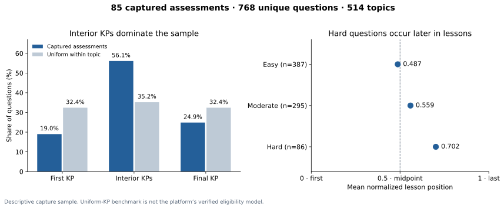

Captured assessment audit · 16 October 2026
Which lesson KPs do quizzes assess?
The sample has a modest tilt toward later KPs, with much stronger concentration on interior KPs. It does not show a blanket preference for the final KP. Hard questions skew later; easy questions are approximately centered. These are descriptive associations, not proof of a platform selection rule.
Mapped 768 of 768 questions across 85 assessments. 0 questions belong to single-KP lessons; 768 contribute to the early-versus-late comparison.
Mean lesson position0.5390 = first · 1 = last · uniform benchmark = 0.500
Questions from final KP24.9%191/768; benchmark 32.4%
Questions from first KP19.0%146/768; same benchmark
95% quiz-cluster bootstrap interval for the mean: 0.512–0.565. This interval describes variation in this capture sample; it does not turn the sample into a random population survey.

Comparison and sensitivity checks
| Measure | Observed | Uniform-KP benchmark |
|---|
| Earlier half / midpoint / later half | 256 / 169 / 343 | Earlier and later halves have equal opportunity |
| Topic-equal mean position | 0.525 | 0.500 |
| Quiz-equal mean position | 0.540 | 0.500 |
| Topic-cluster 95% interval | 0.514–0.563 | 0.500 |
| Distinct question sensitivity | All question IDs are unique; result unchanged | — |
| Observed captured-bank weighted mean | 0.523 | Incomplete bank; sensitivity only |
Relative to the observed captured-bank baseline, the mean-position difference is 0.016 (95% quiz-cluster interval -0.010–0.042). This bank is incomplete and includes these assessment questions, so it is a sensitivity check rather than an independent selection model.
Exact position counts
This table exposes the concentration on interior KPs, which an average position alone obscures.
| Lesson length | KP 1 | KP 2 | KP 3 | KP 4 | KP 5 |
|---|
| 2 KPs | 56 | 48 | — | — | — |
| 3 KPs | 87 | 168 | 117 | — | — |
| 4 KPs | 3 | 110 | 150 | 25 | — |
| 5 KPs | 0 | 0 | 1 | 2 | 1 |
By source course
By number of lesson KPs
By question difficulty
Evidence and limits
- Normalized position=(KP position−1)/(lesson KP count−1); 0=first, 1=last. Single-KP lessons excluded from directional comparisons.
- Uniform-KP-within-topic is a benchmark, not a verified model of platform eligibility or sampling.
- These are captured assessments from four accounts, not a random sample of all Math Academy assessments.
- Later position can correlate with difficulty, compound skills, learner eligibility and recency; this observational result does not isolate the cause.
- The captured-pool benchmark uses only Math Academy-attributed permanent questions in this database; this is an incomplete and selected bank that includes the assessed questions.
Database basis: {'database': 'math', 'lineage': '01a12a15-3e0a-75a1-9dac-f8b8c5d5c3f1', 'basis': 3082}. 658 questions map through permanent Math Academy question IDs and recorded KP membership within the captured topic. The other 110 questions are absent from this database snapshot; each maps through its explicit captured topic, a unique exact KP title, and a source anchor matching that KP’s canonical example. Lesson order follows the complete activity step chain, excluding tutorials. Historical topic members outside that route do not inflate lesson length. Numeric result-header KP anchors are retained separately. Capture files are identified by SHA-256 in the inventory.
| Source lesson evidence | Questions | Mean position |
|---|
| all source | 646 | 0.536 |
| prior source | 608 | 0.537 |
| same account prior source | 548 | 0.534 |
“Prior source” requires a complete lesson definition recorded before the assessment; “same account” additionally requires that lesson capture to belong to the assessment account. These are robustness subsets, not eligibility reconstructions.
Download every question mapping, complete topic sequences, quiz topic inventories, or statistics and provenance.
Every assessment and question
Expand a quiz to see its topics and question mappings. “3 / 4” means the third KP in a four-KP lesson.
differential · Quiz 1 · task 14165325 · Mathematics for Machine Learning (6 questions)
Topics: Logical Equivalence with Conditional Statements; Matrices With Easy-to-Find Inverses; Modeling With the Binomial Distribution; The Eigenvalues and Eigenvectors of a 2x2 Matrix; The Parametric Equations of a Plane; Vectors in N-Dimensional Euclidean Space
differential · Quiz 2 · task 14176734 · Mathematics for Machine Learning (8 questions)
Topics: Basic Properties of Determinants; Identifying Three-Dimensional Shapes; Identifying the Pivot Columns of a Matrix; Logarithmic Differentiation; The Cartesian Equation of a Line; The Domain of a Vector-Valued Function; The Eigenvalues and Eigenvectors of a 2x2 Matrix; The Invertible Matrix Theorem in Terms of 2x2 Systems of Equations
differential · Quiz 3 · task 14185862 · Mathematics for Machine Learning (6 questions)
Topics: Finding the Inverse of a 2x2 Matrix Using Row Operations; Linear Span of Vectors in N-Dimensional Euclidean Space; Modeling With the Poisson Distribution; Properties of Variance for Discrete Random Variables; Row and Column Operations on Determinants; The Vector Equation of a Plane
differential · Quiz 4 · task 14191646 · Mathematics for Machine Learning (8 questions)
Topics: Boolean Functions And Logical Operations; Identifying the Pivot Columns of a Matrix; Mean and Variance of the Binomial Distribution; The Cartesian Equation of a Plane; The Distributive Laws; The Inverse of an Affine Transformation; The Scalar Triple Product; Visualizing Cartesian Products
differential · Quiz 5 · task 14196234 · Mathematics for Machine Learning (7 questions)
Topics: Cumulative Distribution Functions for Continuous Random Variables; Double Summations; Linear Dependence and Independence; Moments of Continuous Random Variables; Orthogonal Vectors in Euclidean Spaces; The Distributive Laws; The Norm of a Vector in N-Dimensional Euclidean Space
differential · Quiz 6 · task 14199578 · Mathematics for Machine Learning (9 questions)
Topics: Conditional Expectation for Discrete Random Variables; Determining Circle Properties by Completing the Square; Equations of Hyperbolas Centered at the Origin; Finding a Basis of the Null Space of a Matrix; Introduction to Integration by Parts; Orthogonal Complements; The "And" and "Or" Connectives With Predicates; The Continuous Uniform Distribution; The Rule of the Lazy Statistician
differential · Quiz 7 · task 14207978 · Mathematics for Machine Learning (9 questions)
Topics: Approximating Discrete Random Variables as Continuous; Joint Distributions for Discrete Random Variables; Likelihood Functions for Discrete Probability Distributions; Logical Equivalence with Conditional Statements; Modeling With Discrete Uniform Distributions; Orthogonal Sets in Euclidean Spaces; The Dimension of a Span; The Domain of a Multivariable Function; The Gamma Function
differential · Quiz 8 · task 14216436 · Mathematics for Machine Learning (8 questions)
Topics: Conditional Statements With Predicates; Expressing the Coordinates of a Vector in a Given Basis; Integration by Substitution With Inverse Trigonometric Functions; The Dimension of a Span; The Hadamard Product; The Image of an Affine Transformation; Type I and II Regions in Two-Dimensional Space; Variance of Sample Means
differential · Quiz 9 · task 14220960 · Mathematics for Machine Learning (7 questions)
Topics: Defining Abstract Vector Spaces; Disjoint Sets; Double Integrals Over Non-Rectangular Domains; Likelihood Functions for Continuous Probability Distributions; Limits and Continuity of Multivariable Functions; Truth Sets of Predicates; Writing Vectors in Different Bases
differential · Quiz 10 · task 14224335 · Mathematics for Machine Learning (8 questions)
Topics: Bilinear Forms; Moments of Continuous Random Variables; Partial Differentiability of Multivariable Functions; Properties of Double Integrals; The Cauchy-Schwarz Inequality and the Angle Between Two Vectors; The Chi-Square Distribution; The Invertible Matrix Theorem in Terms of Dimension, Rank and Nullity; Variance of Sums of Independent Random Variables
differential · Quiz 11 · task 14226990 · Mathematics for Machine Learning (5 questions)
Topics: Calculating the Eigenvectors of a 3x3 Matrix in the General Case; Computing Expected Values From Joint Distributions; Introduction to Abstract Vector Spaces; Projecting Vectors Onto Subspaces in Euclidean Spaces (Arbitrary Bases); The Dimension of the Null Space of a Matrix
differential · Quiz 12 · task 14232091 · Mathematics for Machine Learning (7 questions)
Topics: Changing a Basis Using the Change-of-Coordinates Matrix; Conditions When a Determinant Equals Zero; Integrating Trigonometric Functions Using Substitution; Interior and Boundary Points; The CDF of the Binomial Distribution; The Characteristic Equation of a Matrix; The Least-Squares Solution of a Linear System (Without Collinearity)
foundations · Quiz 1 · task 14116310 · Mathematical Methods for the Physical Sciences I (6 questions)
Topics: Cardinality of Finite Sets; Elementary Row Operations; Introduction to First-Order Linear ODEs; Set Complements; Systems of Equations as Augmented Matrices; The Eigenvalues and Eigenvectors of a 2x2 Matrix
foundations · Quiz 2 · task 14121671 · Mathematical Methods for the Physical Sciences I (6 questions)
Topics: Affine Transformations; Differentiation Rules for Vector-Valued Functions; Solving 2x2 Singular Systems of Equations Using Gaussian Elimination; Solving First-Order Linear ODEs With Sinusoidal Forcing; The Difference of Sets; The Eigenvalues and Eigenvectors of a 2x2 Matrix
foundations · Quiz 3 · task 14124299 · Mathematical Methods for the Physical Sciences I (9 questions)
Topics: General Solutions of First-Order Linear ODEs; Identifying the Pivot Columns of a Matrix; Joint Distributions for Discrete Random Variables; Matrices Over the Complex Numbers; Matrices With Easy-to-Find Inverses; Probability Density Functions of Continuous Random Variables; Sets and Functions; The Cartesian Equation of a Plane; The Determinant of an NxN Matrix
foundations · Quiz 4 · task 14129605 · Mathematical Methods for the Physical Sciences I (5 questions)
Topics: Differential Operators; Finding Determinants Using Laplace Expansions; Probability Density Functions of Continuous Random Variables; Solving First-Order Linear ODEs With Exponential Forcing; The Arc Length of a Vector-Valued Function
foundations · Quiz 5 · task 14131041 · Mathematical Methods for the Physical Sciences I (7 questions)
Topics: Basic Properties of Determinants; Independence of Discrete Random Variables; Linear Span of Vectors in N-Dimensional Euclidean Space; The Domain of a Vector-Valued Function; The Invertible Matrix Theorem in Terms of 2x2 Systems of Equations; The Parametric Equations of a Plane; Visualizing Cartesian Products
foundations · Quiz 6 · task 14132503 · Mathematical Methods for the Physical Sciences I (5 questions)
Topics: Indexed Sets; Linear Dependence and Independence; Linear Differential Operators; Solving First-Order Linear ODEs With Sinusoidal Forcing; Tangent Vectors and Tangent Lines to Curves
foundations · Quiz 7 · task 14133986 · Mathematical Methods for the Physical Sciences I (8 questions)
Topics: Affine Transformations; Double Summations; Finding the Inverse of a 2x2 Matrix Using Row Operations; Integration by Substitution With Inverse Trigonometric Functions; Introduction to First-Order Linear ODEs; Symmetric Matrices; The Parametric Equations of a Line; Unit Tangent Vectors
foundations · Quiz 8 · task 14135210 · Mathematical Methods for the Physical Sciences I (9 questions)
Topics: Calculating Velocity Using Integration; Classifying Equilibrium Solutions of First-Order ODEs; Linear Span of Vectors in N-Dimensional Euclidean Space; Matrices Over the Complex Numbers; Properties of Variance for Discrete Random Variables; Subsets; The Cartesian Equation of a Line; The Difference of Sets; The Domain of a Vector-Valued Function
foundations · Quiz 9 · task 14143522 · Mathematical Methods for the Physical Sciences I (7 questions)
Topics: Ellipsoids; Introduction to Second-Order Linear ODEs; Level Curves; Nilpotent and Idempotent Matrices; The Arc Length of a Planar Curve; The Image of an Affine Transformation; Variance of Discrete Random Variables
foundations · Quiz 10 · task 14149255 · Mathematical Methods for the Physical Sciences I (8 questions)
Topics: Finding the Inverse of a 2x2 Matrix Using Row Operations; Integrating Logarithmic Functions Using Substitution; Introduction to Abstract Vector Spaces; Limits and Continuity of Multivariable Functions; Probability Density Functions of Continuous Random Variables; The Superposition Principle; The Vector Equation of a Plane; Type I and II Regions in Two-Dimensional Space
foundations · Quiz 11 · task 14153656 · Mathematical Methods for the Physical Sciences I (7 questions)
Topics: Cylinders; Defining Abstract Vector Spaces; Differentiation Rules for Vector-Valued Functions; Double Integrals Over Non-Rectangular Domains; Introduction to Integration by Parts; Matrices With Easy-to-Find Inverses; Tangent Planes to Surfaces
foundations · Quiz 12 · task 14157883 · Mathematical Methods for the Physical Sciences I (7 questions)
Topics: Double Integrals Over Type I Regions; Joint Distributions for Discrete Random Variables; Level Surfaces; Row and Column Operations on Determinants; Solving First-Order Linear ODEs With Exponential Forcing; The Divergence of a Vector Field; Velocity and Acceleration as Functions of Displacement
foundations · Quiz 13 · task 14162460 · Mathematical Methods for the Physical Sciences I (7 questions)
Topics: Conditional Distributions for Discrete Random Variables; Continuous Random Variables Over Infinite Domains; Finding the Inverse of a 2x2 Matrix Using Row Operations; Interiors and Boundaries of Sets; Linear Independence in Abstract Vector Spaces; The Column Space of a Matrix; The Intersection of Two Planes
foundations · Quiz 14 · task 14168406 · Mathematical Methods for the Physical Sciences I (7 questions)
Topics: Approximating Functions Using Local Linearity and Linearization; Double Integrals Over Type II Regions; Independence of Discrete Random Variables; Paraboloids; Subspaces of N-Dimensional Space; Symmetric Matrices; Visualizing Vector Fields
foundations · Quiz 15 · task 14182795 · Mathematical Methods for the Physical Sciences I (6 questions)
Topics: Calculating Potential Functions; Expressing the Coordinates of a Vector in a Given Basis; Nonlinear Transformations of Plane Regions; Properties of Double Integrals; Row and Column Operations on Determinants; The Multivariable Chain Rule
foundations · Quiz 16 · task 14189317 · Mathematical Methods for the Physical Sciences I (9 questions)
Topics: Calculating Probabilities With Continuous Random Variables; Conditions When a Determinant Equals Zero; Level Curves; Properties of Variance for Discrete Random Variables; Second-Order Homogeneous ODEs: Characteristic Equations With Distinct Real Roots; Simple, Closed, and Oriented Curves; The Dimension of a Span; The Divergence of a Vector Field; Writing Vectors in Different Bases
foundations · Quiz 1 · task 14220773 · Mathematical Methods for the Physical Sciences II (7 questions)
Topics: Equality of Mixed Partial Derivatives; Resonance in Vibrating Systems; Second-Order Homogeneous Initial Value Problems; Subspaces of Abstract Vector Spaces; Tangent Lines to Level Curves; The Curl of a Vector Field; The Invertible Matrix Theorem in Terms of Dimension, Rank and Nullity
foundations · Quiz 2 · task 14223760 · Mathematical Methods for the Physical Sciences II (5 questions)
Topics: Calculating the Eigenvectors of a 3x3 Matrix With Distinct Eigenvalues; Mean and Variance of the Exponential Distribution; Modeling RL Circuits With First-Order ODEs; Open and Closed Sets; The Rule of the Lazy Statistician
foundations · Quiz 3 · task 14225558 · Mathematical Methods for the Physical Sciences II (8 questions)
Topics: Approximating Discrete Random Variables as Continuous; Changing the Order of Integration in Double Integrals; Dimension in Abstract Vector Spaces; Modeling With the Exponential Distribution; Solving First-Order ODEs by Substitution; The Cayley-Hamilton Theorem; The Gradient as a Normal Vector; The Inverse of an Affine Transformation
foundations · Quiz 4 · task 14227702 · Mathematical Methods for the Physical Sciences II (6 questions)
Topics: Calculating the Eigenvectors of a 3x3 Matrix With Distinct Eigenvalues; Cramer's Rule for 2x2 Systems of Linear Equations; Expected Values of Continuous Random Variables; Radius of Curvature; Second-Order Homogeneous ODEs: Characteristic Equations With Repeated Roots; The Matrix of a Linear Map Relative to Two Bases
foundations · Quiz 5 · task 14232429 · Mathematical Methods for the Physical Sciences II (6 questions)
Topics: Changing a Basis Using the Change-of-Coordinates Matrix; LU Factorization of 3x3 Matrices; Reduction of Order; Tangent Planes to Level Surfaces; The Inverse Function Theorem; The Shortest Distance Between a Plane and a Point
foundations · Quiz 6 · task 14246772 · Mathematical Methods for the Physical Sciences II (7 questions)
Topics: Damped Oscillators; Diagonalizing a 3x3 Matrix With Distinct Eigenvalues; Finding the Mode of a Continuous Random Variable; Ranks of Generalized Eigenvectors; The Coordinates of a Vector Relative to a Basis in Abstract Vector Spaces; The Domain of a Multivariable Function; The Joint CDF of Two Discrete Random Variables
linear · Quiz 3 · task 14114576 · Methods of Proof (8 questions)
Topics: Describing the Position Vector of a Point Using Known Vectors; Limits of Sequences; Linear Transformations of Points and Lines in the Plane; Maclaurin Series; Properties of Matrix Multiplication; Sets and Functions; Subsets; The Scalar Triple Product
linear · Quiz 4 · task 14117406 · Methods of Proof (9 questions)
Topics: Calculating a Vector Projection; Dilations and Reflections as Linear Transformations; Evaluating Definite Integrals Using Symmetry; Graphing Curves Defined Parametrically; Higher-Degree Taylor Polynomials; Indexed Sets; Limits at Infinity and Horizontal Asymptotes of Rational Functions; Set Complements; Third-Degree Taylor Polynomials
linear · Quiz 5 · task 14120023 · Methods of Proof (7 questions)
Topics: Dividing Polynomials Using Long Division; Higher-Degree Taylor Polynomials; Limits of Sequences; Properties of Definite Integrals Involving the Limits of Integration; Singular Linear Transformations in the Plane; Solving 2x2 Systems of Equations Using Inverse Matrices; Visualizing Cartesian Products
linear · Quiz 6 · task 14123325 · Methods of Proof (9 questions)
Topics: Closure Properties of Polynomials; Describing Planar Regions Using Set-Builder Notation; Evaluating Definite Integrals Using Symmetry; Horizontal Asymptotes of Rational Functions; Integration Using the Double-Angle Formulas; Maclaurin Series; Right-Angle Rotations as Linear Transformations; Sets and Functions; The Geometric Interpretation of the 2x2 Determinant
linear · Quiz 1 · task 14196134 · Mathematical Foundations I (12 questions)
Topics: Dividing Unit Fractions by Whole Numbers; Dividing Unit Fractions by Whole Numbers Using Models; Dividing Whole Numbers by Unit Fractions; Dividing Whole Numbers by Unit Fractions Using Models; Introduction to Algebraic Expressions; Multiplying Fractions Using Models; Multiplying Fractions by Unit Fractions Using Models; Multiplying Fractions by Whole Numbers; Multiplying Fractions by Whole Numbers Using Models; Multiplying Unit Fractions by Whole Numbers Using Models; Strategies to Simplify Whole Number and Fraction Multiplication; The Cartesian Coordinate System
linear · Quiz 1 · task 14199677 · Mathematical Foundations II (10 questions)
Topics: Comparing Fractions, Percents, and Decimals; Divisibility of Integers by 3, 9, 6, and 7; Equivalent Ratios; Introduction to Algebraic Expressions; Multiplying Positive Numbers With Negative Numbers; Multiplying and Dividing With Zero; Natural Numbers, Integers, and Rational Numbers; Subtracting a Positive Number From a Smaller Positive Number; The Cartesian Coordinate System; Writing Ratios Using Fractions
linear · Quiz 2 · task 14200823 · Mathematical Foundations II (10 questions)
Topics: Comparing Fractions, Percents, and Decimals; Divisibility of Integers by 3, 9, 6, and 7; Equivalent Ratios; Introduction to Algebraic Expressions; Multiplying Positive Numbers With Negative Numbers; Multiplying and Dividing With Zero; Natural Numbers, Integers, and Rational Numbers; Subtracting a Positive Number From a Smaller Positive Number; The Cartesian Coordinate System; Writing Ratios Using Fractions
linear · Quiz 3 · task 14206876 · Mathematical Foundations II (11 questions)
Topics: Comparing Fractions, Percents, and Decimals; Divisibility of Integers by 3, 9, 6, and 7; Equivalent Ratios; Introduction to Algebraic Expressions; Introduction to Ratios; Multiplying Positive Numbers With Negative Numbers; Multiplying and Dividing With Zero; Natural Numbers, Integers, and Rational Numbers; Subtracting a Positive Number From a Smaller Positive Number; The Cartesian Coordinate System; Writing Ratios Using Fractions
linear · Quiz 4 · task 14211928 · Mathematical Foundations II (10 questions)
Topics: Comparing Fractions, Percents, and Decimals; Divisibility of Integers by 3, 9, 6, and 7; Equivalent Ratios; Introduction to Algebraic Expressions; Multiplying Positive Numbers With Negative Numbers; Multiplying and Dividing With Zero; Natural Numbers, Integers, and Rational Numbers; Subtracting a Positive Number From a Smaller Positive Number; The Cartesian Coordinate System; Writing Ratios Using Fractions
linear · Quiz 5 · task 14214315 · Mathematical Foundations II (14 questions)
Topics: Collinear Points; Distances Between Points in the Coordinate Plane; Dividing With Negative Numbers; Divisibility of Integers by 3, 9, 6, and 7; Equivalent Ratios; Finding Part of a Number Given a Whole and a Percentage: Word Problems; Introduction to Algebraic Expressions; Multiplying Negative Numbers; Multiplying Positive Numbers With Negative Numbers; Multiplying and Dividing With Zero; Natural Numbers, Integers, and Rational Numbers; Polygons; Subtracting a Positive Number From a Smaller Positive Number; Writing Ratios Using Fractions
linear · Quiz 6 · task 14216627 · Mathematical Foundations II (16 questions)
Topics: Applying the Distributive Law With Linear Expressions; Collinear Points; Distances Between Points in the Coordinate Plane; Dividing With Negative Numbers; Divisibility of Integers by 3, 9, 6, and 7; Equivalent Ratios; Finding Part of a Number Given a Whole and a Percentage: Word Problems; Identifying Coefficients and Constants; Identifying Like Terms in Linear Expressions; Multiplying and Dividing With Zero; Natural Numbers, Integers, and Rational Numbers; Polygons; Squaring Rational Numbers; Subtracting a Positive Decimal From a Smaller Decimal; Subtracting a Positive Fraction From a Smaller Fraction; Writing Ratios Using Fractions
linear · Quiz 7 · task 14219315 · Mathematical Foundations II (18 questions)
Topics: Additive Inverses of Numbers; Classifying Quadrilaterals; Collinear Points; Compound Inequalities; Distances Between Points in the Coordinate Plane; Dividing With Negative Numbers; Divisibility of Integers by 3, 9, 6, and 7; Equivalent Fractions With Negative Numbers; Equivalent Ratios; Finding Part of a Number Given a Whole and a Percentage: Word Problems; Multiplying and Dividing With Zero; Natural Numbers, Integers, and Rational Numbers; Polygons; Simplifying Linear Expressions Using the Distributive Law; Solving Problems Using Addition and Subtraction of Rational Numbers; Splitting Rational Expressions Into Separate Terms; Squaring a Square Root; Writing Ratios Using Fractions
linear · Quiz 8 · task 14220930 · Mathematical Foundations II (17 questions)
Topics: Additive Inverses of Numbers; Applying Percentage Increases; Classifying Quadrilaterals; Collinear Points; Compound Inequalities; Distances Between Points in the Coordinate Plane; Equivalent Fractions With Negative Numbers; Exponents With Rational Bases; Finding a Percentage Given Two Numbers: Word Problems; Graphing Ratios; Monomials, Binomials and Trinomials; Ratio Tables; Simplifying Linear Expressions When a Group of Terms Is Subtracted; Splitting Rational Expressions Into Separate Terms; Squaring a Square Root; The Cube Root of a Perfect Cube; The Greatest Common Factor of Two Linear Expressions
linear · Quiz 9 · task 14222856 · Mathematical Foundations II (16 questions)
Topics: Applying Percentage Increases; Classifying Quadrilaterals; Compound Inequalities; Degrees of Accuracy; Dividing With Negative Decimals and Fractions; Evaluating Linear Expressions; Graphing Ratios; Polygons; Simplifying Linear Expressions Containing Fractions; Simplifying Polynomials; Solving Problems Using Addition and Subtraction of Rational Numbers; Splitting Rational Expressions Into Separate Terms; The Power of Product Rule for Exponents; The Power of Quotient Rule for Exponents; The Product Rule for Radicals; The Quotient Rule for Radicals
linear · Quiz 10 · task 14224132 · Mathematical Foundations II (17 questions)
Topics: Absolute Value Expressions; Classifying Quadrilaterals; Degrees of Accuracy; Distances Between Points in the Coordinate Plane; Evaluating Expressions With Positive Integer Exponents; Evaluating Rational Expressions; Finding a Percentage Given Two Numbers: Word Problems; Ratio Tables; Simplifying Expressions With Surds; Simplifying Linear Expressions When a Group of Terms Is Subtracted; Simplifying Rational Expressions by Factoring; Solving One-Step Multiplication and Division Equations; Solving Problems Using Addition and Subtraction of Rational Numbers; The Power Rule for Exponents; The Power of Product Rule for Exponents; The Product Rule for Exponents With Algebraic Expressions; The Quotient Rule for Radicals
linear · Quiz 11 · task 14224930 · Mathematical Foundations II (13 questions)
Topics: Absolute Value Expressions; Additive Inverses of Numbers; Applying Percentage Increases; Degrees of Accuracy; Evaluating Algebraic Radical Expressions; Evaluating Rational Expressions; Factoring Perfect Square Trinomials; Graphing Ratios; Interval Notation; Multiplying Binomials; Simplifying Linear Expressions Containing Fractions; Solving One-Step Multiplication and Division Equations; The Zeroth Power
linear · Quiz 12 · task 14226066 · Mathematical Foundations II (14 questions)
Topics: Factoring Trinomials With Leading Coefficients; Finding a Percentage Given Two Numbers: Word Problems; Introduction to Functions; Ratio Tables; Rationalizing Denominators; Simplifying Linear Expressions Containing Fractions; Simplifying Rational Expressions by Factoring; Solving One-Step Multiplication and Division Equations; The Distributive Law for Polynomials; The Power Rule for Exponents With Algebraic Expressions; The Power of Quotient Rule for Exponents; The Quotient Rule for Exponents With Algebraic Expressions; The Square Root of a Perfect Square With Algebraic Expressions; Verifying Solutions of Linear Inequalities
linear · Quiz 13 · task 14226892 · Mathematical Foundations II (11 questions)
Topics: Absolute Value Equations; Adding and Subtracting Radicals; Applying Percentages in Succession; Combining the Rules of Exponents; Factoring Differences of Squares; Multiplying Polynomials; Solving Equations Using the Square Root Method; Solving Linear Equations by Clearing a Rational Expression; The Cube Root of a Perfect Cube With Algebraic Expressions; The Power of Product Rule With Algebraic Expressions; Verifying Solutions of Linear Inequalities
linear · Quiz 14 · task 14227818 · Mathematical Foundations II (13 questions)
Topics: Adding and Subtracting Radicals; Classifying Triangles; Combining the Rules of Exponents; Congruent Angles; Evaluating Algebraic Radical Expressions; Factoring Perfect Square Trinomials With Leading Coefficients; Further Absolute Value Equations; Introduction to Polynomials; Solving Exponential Equations; Solving Linear Equations With Unknown Coefficients by Factoring; Solving Many-Variable Equations; Solving One-Step Linear Inequalities; The Cube Root of a Perfect Cube With Algebraic Expressions
linear · Quiz 15 · task 14229604 · Mathematical Foundations II (13 questions)
Topics: Absolute Value Equations; Adding and Subtracting Radicals; Factoring Differences of Squares; Horizontal and Vertical Lines; Interior Angles of Triangles; Modeling Exponential Growth With Functions; Rational Numbers as Finite or Repeating Decimals; Reasoning With Equivalent Ratios; Simplifying Rational Expressions by Factoring; Solving Linear Equations Using Cross-Multiplication; Solving One-Step Linear Inequalities; The Cube Root of a Perfect Cube With Algebraic Expressions; The Power Rule for Exponents With Algebraic Expressions
linear · Quiz 16 · task 14233096 · Mathematical Foundations II (14 questions)
Topics: 30-60-90 Triangles; Combining the Rules of Exponents; Exponential Functions; Fractions of Fractions; Interval Notation; Linear Equations With Infinitely Many Solutions; Midpoints; Monomials, Binomials and Trinomials; Properties of Lines Given in Slope-Intercept Form; Solving Problems Using Unit Rates; Solving Rational Equations Using Cross-Multiplication; The Perimeter of a Polygon; The Power of Product Rule With Algebraic Expressions; Visual Representations of Functions
linear · Quiz 17 · task 14236626 · Mathematical Foundations II (10 questions)
Topics: Creating Exponential Growth Expressions; Expanding Binomials Using Pascal's Triangle; Further Absolute Value Equations; Graphing Linear Equations; Linear Equations With Infinitely Many Solutions; Rationalizing Denominators; Segment Bisectors and the Perpendicular Bisector Theorem; Solving Problems With Angles; The Pythagorean Theorem; Unit Rates
linear · Quiz 18 · task 14239525 · Mathematical Foundations II (10 questions)
Topics: Determining Units in Formulas; Equations of Lines in Point-Slope Form; Expanding Binomials Using Pascal's Triangle; Factoring Perfect Square Trinomials With Leading Coefficients; Finding Lowest Common Multiples Using Prime Factorization; Interpreting Exponential Growth; Interpreting Linear Expressions; Solving Equations With Even Exponents Using the Nth Root Method; Solving Systems of Equations by Substitution; The Power of Quotient Rule With Algebraic Expressions
linear · Quiz 19 · task 14242062 · Mathematical Foundations II (11 questions)
Topics: Equations of Lines in Standard Form; Evaluating Expressions With Integer Exponents; Finding Lowest Common Multiples Using Prime Factorization; Further Rules of Absolute Value; Interpreting Linear Expressions; Introduction to the Elimination Method; Selecting Units for Rates of Change; Solving Linear Equations With Decimal Coefficients; Solving Problems Using Unit Rates; The Triangle Inequality; Understanding Proportional Relationships From Descriptions
linear · Quiz 20 · task 14244234 · Mathematical Foundations II (9 questions)
Topics: Congruent Polygons; Corresponding Angles; Finding a Total Given a Part and a Percentage; Isosceles Right Triangles; Modeling Exponential Growth With Functions; Solving Systems of Equations by Substitution; The Circumference of a Circle; The Square Root of a Perfect Square With Domain Restrictions; Understanding Proportional Relationships Using Tables
linear · Quiz 21 · task 14246462 · Mathematical Foundations II (12 questions)
Topics: Classifying Triangles; Finding Lowest Common Multiples Using Prime Factorization; Finding a Total Given a Part and a Percentage; Inverse Variation; Properties of Lines Given in Standard Form; Solving Equations With Even Exponents Using the Nth Root Method; Solving Exponential Growth Problems; Solving Rational Equations Containing Binomials Using Cross-Multiplication; Speed as a Unit Rate; Supplementary Angles; The Roots of a Function; The Segment Addition Postulate
linear · Quiz 22 · task 14248423 · Mathematical Foundations II (10 questions)
Topics: Combining the Rules of Exponents With Algebraic Expressions; Exterior Angles of Polygons; Factoring Trinomials Using Common Factors; Further Reasoning With Equivalent Ratios; Heights of Triangles; Increasing and Decreasing Functions; Intersections of Intervals; Modeling With Inverse Variation; Rational Numbers as Finite or Repeating Decimals; Simplifying Square Root Expressions Using the Product Rule
linear · Quiz 23 · task 14249809 · Mathematical Foundations II (12 questions)
Topics: Angle Bisectors; Arcs, Segments, and Sectors of Circles; Heights of Triangles; Linear Equations With No Solutions; Parallel Lines in the Coordinate Plane; Regular Polygons; Simplifying Square Root Expressions Using the Quotient Rule; Solving Equations With Odd Exponents Using the Nth Root Method; Solving Problems Using Multiplication and Division of Rational Numbers; Solving Rational Equations Using the Flip Method; The Roots of a Function; Unions of Intervals
linear · Quiz 24 · task 14251228 · Mathematical Foundations II (12 questions)
Topics: Absolute Value Graphs; Adding and Subtracting Radical Expressions; Arcs, Segments, and Sectors of Circles; Further Reasoning With Equivalent Ratios; Interior Angles of Polygons; Interpreting Exponential Decay; Modeling with Direct Variation; Multiplying Binomials; Solving Compound Inequalities; Solving Rational Equations Using the Flip Method; The Range of a Function: Advanced Cases; The Triangle Law for the Addition of Two Vectors
linear · Quiz 25 · task 14252107 · Mathematical Foundations II (10 questions)
Topics: Absolute Value Inequalities; Areas of Triangles; Combining Radical Expressions Using the Product Rule; Compound AND Inequalities; Equations of Lines in Slope-Intercept Form; Simplifying Linear Expressions Containing Fractions; The Isosceles Triangle Theorem; The Segment Addition Postulate; The Triangle Law for the Addition of Two Vectors; Unit Conversions Using Base Units of Mass
linear · Quiz 26 · task 14252895 · Mathematical Foundations II (11 questions)
Topics: Absolute Value Graphs; Areas of Triangles; Compound OR Inequalities; Equations of Lines in Standard Form; Further Factoring Trinomials With Leading Coefficients; Global Extrema of Functions; Isosceles Right Triangles; Multiplying Polynomials; Solving Systems of Nonlinear Equations Using Graphs; The Power and Root Rules for Limits; Understanding Proportional Relationships Using Graphs
linear · Quiz 27 · task 14253705 · Mathematical Foundations II (12 questions)
Topics: Converting From Exponential to Logarithmic Form; Determining the Roots of Polynomials; Fibonacci Sequences; Increasing and Decreasing Functions; Interpreting the Meaning of the Derivative in Context; Midpoints in the Coordinate Plane; Rationalizing Denominators With Two Terms; Sets; Solving Exponential Growth Problems; The Cyclic Property of the Imaginary Unit; The Pythagorean Theorem; Vertical Translations of Exponential Decay Functions
linear · Quiz 28 · task 14255803 · Mathematical Foundations II (13 questions)
Topics: Adding Rational Expressions With No Common Factors in the Denominator; Calculating Limits of Rational Functions by Factoring; Compound AND Inequalities; Equating Polynomial Coefficients; Evaluating Logarithms; Quadratic Equations with Purely Imaginary Solutions; Roots of Rational Functions; Similarity Transformations; Sums and Products of Rational and Irrational Numbers; The Arithmetic of Functions; The Magnitude of a Complex Number; The Rules of Sum and Product; Trigonometric Functions of Complementary Angles
linear · Quiz 29 · task 14259215 · Mathematical Foundations II (11 questions)
Topics: Calculating Limits of Rational Functions by Factoring; Calculating Side Lengths of Right Triangles Using Trigonometry; Equating Polynomial Coefficients; Finding the Common Difference of an Arithmetic Sequence; Interpreting Exponential Decay; Quadratic Equations with Purely Imaginary Solutions; Roots of Transformed Radical Functions; Similarity and Similar Polygons; Solving Exponential Equations Using the Zero-Product Property; Solving Polynomial Equations Using the GCF; The Constant Multiple Rule for Indefinite Integrals
linear · Quiz 30 · task 14262681 · Mathematical Foundations II (11 questions)
Topics: Dividing Polynomials Using Synthetic Division; Even and Odd Functions; Multiplying Complex Numbers; Rationalizing Denominators of Algebraic Expressions; Roots of Rational Functions; Solving Cubic Equations by Grouping; The Antiderivative; The Common Logarithm; The Nth Term of an Arithmetic Sequence; The Sum and Constant Multiple Rules for Differentiation; Venn Diagrams in Probability
linear · Quiz 31 · task 14265357 · Mathematical Foundations II (11 questions)
Topics: Calculating Angles in Right Triangles Using Trigonometry; Calculating the Equation of a Tangent Line Using Differentiation; End Behavior of Functions; Factoring Higher-Order Polynomials as a Difference of Squares; Graphs of Inverse Functions; Introduction to Geometric Sequences; Permutations; Solving Equations With Odd Exponents Using the Nth Root Method; Solving Systems of Nonlinear Equations Using Graphs; The Factor Theorem; The Nth Term of an Arithmetic Sequence
linear · Quiz 32 · task 14267484 · Mathematical Foundations II (10 questions)
Topics: Areas of Circles; Calculating the Equation of a Normal Line Using Differentiation; Closure Properties of Polynomials; Finding Equations of Perpendicular Lines; Introduction to Inverse Functions; Permutations; Rigid Motions and Congruence; Simplifying Logarithmic Expressions; Trigonometric Ratios With Radians; Vertical Asymptotes of Rational Functions
linear · Quiz 33 · task 14269080 · Mathematical Foundations II (9 questions)
Topics: Adding Rational Expressions With No Common Factors in the Denominator; Combinations; Combining Graph Transformations: Three or More Operations; Factoring Sums and Differences of Cubes; Graphing Exponential Growth Functions; Graphing the Cube Root Function; Rigid Motions and Congruence; The Average Rate of Change of a Function; The Distance Formula
multivariable · Quiz 1 · task 14177361 · Mathematical Methods for the Physical Sciences II (8 questions)
Topics: Orthogonal Linear Transformations; Projecting Vectors Onto Subspaces in Inner Product Spaces; Properties of Line Integrals With Respect to X and Y; Solving Homogeneous Systems of ODEs With Distinct Eigenvalues and Initial Conditions; Surfaces of Revolution; The Inner Product in Vector Spaces Over the Complex Numbers; The Sample Mean; The Work-Energy Principle
multivariable · Quiz 2 · task 14187070 · Mathematical Methods for the Physical Sciences II (8 questions)
Topics: Calculating Flux Through Parametric Surfaces; Circular Motion About the Origin; Circulation; Conditional Distributions for Continuous Random Variables; Moments and Centers of Mass of Thin Rods; Properties of Line Integrals of Vector-Valued Functions; Solving Homogeneous Systems of ODEs With Distinct Eigenvalues; Variance of Sample Means
multivariable · Quiz 1 · task 14220202 · Calculus II (6 questions)
Topics: Logistic Growth Models With First-Order ODEs; Right-Angle Rotations as Linear Transformations; Surface Areas of Revolution for Parametric Curves; The Arc Length of a Polar Curve; The Candidates Test; Using Integration by Parts to Calculate Integrals With Logarithms
multivariable · Quiz 2 · task 14222769 · Calculus II (5 questions)
Topics: Applying the Integration By Parts Twice; Integrating Rates of Change; Logistic Growth Models With First-Order ODEs; Surface Areas of Revolution: Rotation About the Y-Axis; The Arc Length of a Polar Curve
multivariable · Quiz 3 · task 14224712 · Calculus II (5 questions)
Topics: Qualitative Analysis of the Logistic Growth Equation; Surface Areas of Revolution for Parametric Curves; Surface Areas of Revolution: Rotation About the Y-Axis; The Average Value of a Function; The Binomial Distribution
multivariable · Quiz 4 · task 14226573 · Calculus II (5 questions)
Topics: Applying the Integration By Parts Twice; Modeling With the Normal Distribution; Qualitative Analysis of the Logistic Growth Equation; The Arc Length of a Polar Curve; The Average Value of a Function
multivariable · Quiz 1 · task 14234848 · Linear Algebra (4 questions)
Topics: Projecting Vectors Onto Subspaces in Euclidean Spaces (Arbitrary Bases): Applications; Singular Value Decomposition of 2x2 Matrices; The Image and Rank of a Linear Transformation; The Least-Squares Solution of a Linear System (With Collinearity)
multivariable · Quiz 2 · task 14241199 · Linear Algebra (7 questions)
Topics: Finding a Least-Squares Solution Using QR Factorization; Orthogonal Sets in Inner Product Spaces; Projecting Vectors Onto Subspaces in Inner Product Spaces; The Intersection Between a Line and a Plane; The Singular Values of a Matrix; The Spectral Theorem; The Standard Matrix of a Linear Transformation in Terms of the Standard Basis
multivariable · Quiz 5 · task 14248473 · Multivariable Calculus (4 questions)
Topics: Computing Double Integrals Using a Change of Variables; Further Properties of Line Integrals of Scalar Functions; The Multivariable Chain Rule; The Parallel Axis Theorem
multivariable · Quiz 1 · task 14252104 · Methods of Proof (7 questions)
Topics: Further Limits Involving the Exponential Function; Further Logarithmic Differentiation; Limits of Inverse Trigonometric Functions; Power Sets; Recognizing Derivatives in Limits; The Extreme Value Theorem; Using Integration by Parts to Calculate Integrals With Logarithms
multivariable · Quiz 2 · task 14254138 · Methods of Proof (7 questions)
Topics: Estimating Derivatives Using a Central Difference Quotient; Integrating Hyperbolic Functions; L'Hopital's Rule Applied to Tables; Maximizing a Function Using the Graph of Its Derivative; Partitions of Sets; Recognizing Derivatives in Limits; Sketching a Function Given Some Derivative Properties
multivariable · Quiz 3 · task 14262782 · Methods of Proof (6 questions)
Topics: Approximating the Roots of a Number Using Local Linearity; Calculating Related Rates Using the Pythagorean Theorem; Differentiating Inverse Hyperbolic Functions; Optimization Problems With Inscribed Shapes; Power Sets; The Intermediate Value Theorem
multivariable · Quiz 4 · task 14269128 · Methods of Proof (10 questions)
Topics: Calculating Related Rates Using Trigonometry; Calculating Tangent and Normal Lines with Parametric Equations; Differentiating Taylor Series; Discontinuities Due to Vertical Asymptotes; Integrating Rates of Change; Integration Using Inverse Hyperbolic Functions; Interpreting the Graph of a Function's Derivative: Concavity and Points of Inflection; Partitions of Sets; Qualitative Analysis of the Logistic Growth Equation; The "And" and "Or" Connectives
Complete lesson sequences
Listed in lesson order. Counts show questions selected by the assessments in this snapshot.
30-60-90 Triangles · MA 262
- Relating the Length of the Hypotenuse to the Length Of the Shortest Side — 0 assessed
:db/id 17592186059637 · e-3084
- Relating the Length of the Shorter Leg to the Length of the Longer Leg — 1 assessed
:db/id 17592186059639 · e-3086
- Relating the Length of the Hypotenuse to the Length Of the Longer Leg — 0 assessed
:db/id 17592186059640 · e-3088
Absolute Value Equations · MA 384
- Solving One-Step Absolute Value Equations — 0 assessed
:db/id 17592186068709 · e-14216
- Solving Two-Step Absolute Value Equations — 1 assessed
:db/id 17592186068710 · e-14221
- Solving Absolute Value Equations With Negative Variable Coefficients — 1 assessed
:db/id 17592186068711 · e-14225
- Solving Two-Step Absolute Value Equations Containing Fractions — 0 assessed
:db/id 17592186068712 · e-14229
Absolute Value Expressions · MA 96
- Evaluating an Expression With One Absolute Value — 2 assessed
:db/id 17592186054626 · e-14209
- Evaluating an Expression With Two Absolute Values — 0 assessed
:db/id 17592186054627 · e-14212
Absolute Value Graphs · MA 790
- Graphing a Vertical Translation — 1 assessed
:db/id 17592186083189 · e-14919
- Graphing a Horizontal Translation — 0 assessed
:db/id 17592186083190 · e-14925
- Combining Horizontal and Vertical Translations — 1 assessed
:db/id 17592186083191 · e-14933
Absolute Value Inequalities · MA 451
- Absolute Value Inequalities Containing a Less Than (or Equal To) Symbol — 0 assessed
:db/id 17592186068717 · e-14222
- Cases Where the Coefficient in the Absolute Value Is Negative — 0 assessed
:db/id 17592186068718 · e-14708
- Absolute Value Inequalities Containing a Greater Than (or Equal To) Symbol — 1 assessed
:db/id 17592186068719 · e-14227
Adding Rational Expressions With No Common Factors in the Denominator · MA 3739
- Adding and Subtracting a Number and a Rational Expression — 1 assessed
:db/id 17592186179648 · e-5127
- Adding and Subtracting Rational Expressions With No Common Factors in the Denominators — 1 assessed
:db/id 17592186179649 · e-5130
Adding and Subtracting Radical Expressions · MA 3756
- Simplifying Expressions Containing Radicals — 1 assessed
:db/id 17592186179763 · e-1373
- Simplifying Sums of Radicals Using the Product Rule — 0 assessed
:db/id 17592186179764 · e-1374
- Simplifying Sums of Radicals with Cube Roots — 0 assessed
:db/id 17592186179751 · e-9723
Adding and Subtracting Radicals · MA 484
- Simplifying Square Root Expressions — 0 assessed
:db/id 17592186073806 · e-1370
- Simplifying Square Root Expressions Using the Product Rule for Radicals — 1 assessed
:db/id 17592186073789 · e-9729
- Simplifying Expressions Containing Cube Roots — 2 assessed
:db/id 17592186073788 · e-9728
Additive Inverses of Numbers · MA 524
- Finding the Additive Inverse of a Positive Integer — 2 assessed
:db/id 17592186073820 · e-22709
- Finding the Additive Inverse of a Negative Integer — 1 assessed
:db/id 17592186073821 · e-22710
- Finding the Additive Inverse of a Decimal or Fraction — 0 assessed
:db/id 17592186073822 · e-22711
Affine Transformations · MA 3387
- Identifying Affine Transformations — 1 assessed
:db/id 17592186172092 · e-9505
- Finding the Parametric Representation of an Affine Transformation Given its Matrix Form — 0 assessed
:db/id 17592186172094 · e-9508
- Finding the Matrix Representation of an Affine Transformation Given its Parametric Form — 1 assessed
:db/id 17592186172093 · e-9506
Angle Bisectors · MA 1508
- Using the Property of a Bisection — 0 assessed
:db/id 17592186110766 · e-2615
- Calculating an Unknown Angle Given an Angle Bisector, an Angle Measurement, and a Straight Angle — 0 assessed
:db/id 17592186110767 · e-2621
- Calculating an Unknown Angle Given an Angle Bisector and Two Angle Measurements — 1 assessed
:db/id 17592186110769 · e-2624
- Calculating an Unknown Angle Given Two Angle Bisectors — 0 assessed
:db/id 17592186110770 · e-2628
Applying Percentage Increases · MA 2560
- Applying a Percentage Increase — 0 assessed
:db/id 17592186152295 · e-21450
- Applying a Percentage Increase: Word Problems — 2 assessed
:db/id 17592186152296 · e-21451
- Applying Percentage Increases Greater Than 100% — 1 assessed
:db/id 17592186152297 · e-21517
- Solving Word Problems Involving Percentage Increases Greater Than 100% — 0 assessed
:db/id 17592186152298 · e-22093
Applying Percentages in Succession · MA 6642
- Applying Subsequent Percentages — 0 assessed
:db/id 17592186229193 · e-21463
- Applying Subsequent Percentages in Real-World Situations — 0 assessed
:db/id 17592186229194 · e-21458
- Expressing Subsequent Percentages as a Single Percentage — 1 assessed
:db/id 17592186229195 · e-21447
Applying the Distributive Law With Linear Expressions · MA 135
- Distributing a Positive Number Over the Sum of Two Terms — 0 assessed
:db/id 17592186054777 · e-12977
- Distributing a Negative Number Over the Sum of Two Terms — 0 assessed
:db/id 17592186054778 · e-12978
- Distributing a Positive Number Over the Difference of Two Terms — 1 assessed
:db/id 17592186054779 · e-12979
- Distributing a Negative Number Over the Difference of Two Terms — 0 assessed
:db/id 17592186054780 · e-12980
Applying the Integration By Parts Twice · MA 416
- Computing the Integral of an Exponential Expression Using Integration by Parts Twice — 0 assessed
:db/id 17592186068919 · e-7053
- Computing the Integral of a Trigonometric Expression Using Integration by Parts Twice — 2 assessed
:db/id 17592186068920 · e-495
- Computing the Integral of a Logarithmic Expression Using Integration by Parts Twice — 0 assessed
:db/id 17592186068921 · e-496
Approximating Discrete Random Variables as Continuous · MA 2994
- Approximating a Probability Involving a Discrete Random Variable at a Single Point — 1 assessed
:db/id 17592186162025 · e-8491
- Approximating a Probability Involving a Discrete Random Variable Over an Interval — 0 assessed
:db/id 17592186162026 · e-8492
- Approximating a Probability Involving a Discrete Random Variable Over an Unbounded Interval — 1 assessed
:db/id 17592186162027 · e-8493
Approximating Functions Using Local Linearity and Linearization · MA 621
- Estimating the Value of a Function at a Point Using a Tangent Line Approximation — 0 assessed
:db/id 17592186078566 · e-291
- Estimating the Value of a Function at a Point Given its Derivative — 0 assessed
:db/id 17592186078567 · e-292
- Computing a Tangent Line Approximation and Classifying it as an Underestimate or Overestimate — 1 assessed
:db/id 17592186078568 · e-293
Approximating the Roots of a Number Using Local Linearity · MA 622
- Identifying a Correct Tangent Line Approximation From a Graph — 0 assessed
:db/id 17592186078603 · e-296
- Estimating the Square Root of a Number Using a Tangent Line Approximation — 1 assessed
:db/id 17592186078604 · e-295
- Estimating the Cube Root of a Number Using a Tangent Line Approximation — 0 assessed
:db/id 17592186078605 · e-294
Arcs, Segments, and Sectors of Circles · MA 3565
- Identifying Parts of a Circle — 2 assessed
:db/id 17592186175896 · e-3169
- Completing a True Statement Regarding Circles — 0 assessed
:db/id 17592186175897 · e-3170
Areas of Circles · MA 1745
- Calculating the Area of a Circle Given the Radius — 0 assessed
:db/id 17592186119755 · e-3183
- Calculating the Area of a Circle Given the Diameter — 0 assessed
:db/id 17592186119756 · e-3184
- Calculating the Radius or Diameter of a Circle Given the Area — 0 assessed
:db/id 17592186119861 · e-6804
- Areas of Circles: Word Problems — 1 assessed
:db/id 17592186119757 · e-3186
Areas of Triangles · MA 1397
- Calculating the Area of a Triangle — 0 assessed
:db/id 17592186105870 · e-2947
- Calculating the Area of an Isosceles Right Triangle — 2 assessed
:db/id 17592186105871 · e-2949
- Finding the Base or the Height of a Triangle Given Its Area — 0 assessed
:db/id 17592186105872 · e-2950
Basic Properties of Determinants · MA 1771
- Finding the Determinant of a Triangular Matrix — 0 assessed
:db/id 17592186119929 · e-10991
- Calculating the Determinant of a Matrix With Many Zeros — 1 assessed
:db/id 17592186119930 · e-10992
- Computing the Volume of an N-Dimensional Parallelepiped — 1 assessed
:db/id 17592186119932 · e-10998
- Calculating an Expression Involving Given Determinants and Matrix Types — 0 assessed
:db/id 17592186119931 · e-10993
Bilinear Forms · MA 3121
- Evaluating a Linear Form — 0 assessed
:db/id 17592186161980 · e-8160
- Evaluating a Bilinear Form — 1 assessed
:db/id 17592186161981 · e-8161
- Writing Down a Bilinear Form Given Its Matrix — 0 assessed
:db/id 17592186161982 · e-8162
- Finding the Matrix of a Bilinear Form — 0 assessed
:db/id 17592186161983 · e-8163
Boolean Functions And Logical Operations · MA 3779
- Identifying Boolean Functions Given Logical Operations — 0 assessed
:db/id 17592186184245 · e-15094
- Identifying Peirce Arrow, Sheffer Stroke, and XOR — 0 assessed
:db/id 17592186184246 · e-16643
- Identifying Logical Operations Given Boolean Functions — 1 assessed
:db/id 17592186184247 · e-15096
- Building Truth Tables for Boolean Functions With Three Variables — 0 assessed
:db/id 17592186184248 · e-15095
Calculating Angles in Right Triangles Using Trigonometry · MA 610
- Finding the Value of an Inverse Trigonometric Ratio — 0 assessed
:db/id 17592186078395 · e-3251
- Calculating Unknown Angles Using Inverse Trigonometric Functions — 1 assessed
:db/id 17592186078396 · e-3252
- Finding the Measure of an Angle Given the Lengths of Two Sides of a Right Triangle — 0 assessed
:db/id 17592186078397 · e-3253
Calculating Flux Through Parametric Surfaces · MA 4145
- Expressing Flux Through a Surface as a Double Integral — 1 assessed
:db/id 17592186198378 · e-12355
- Evaluating Flux Through a Surface — 0 assessed
:db/id 17592186198380 · e-12358
Calculating Limits of Rational Functions by Factoring · MA 1813
- Calculating the Limit of a Rational Function With One Quadratic Term by Factoring — 0 assessed
:db/id 17592186119937 · e-71
- Calculating the Limit of a Rational Function With Two Quadratic Terms by Factoring — 2 assessed
:db/id 17592186119942 · e-73
- Calculating the Limit of a Rational Function With Higher Order Terms by Factoring — 0 assessed
:db/id 17592186119938 · e-72
Calculating Potential Functions · MA 1951
- Reconstructing a Two-Variable Function From Its Gradient — 0 assessed
:db/id 17592186124569 · e-7020
- Reconstructing a Three-Variable Function From Its Gradient — 1 assessed
:db/id 17592186124574 · e-7184
Calculating Probabilities With Continuous Random Variables · MA 4043
- Computing the Probability That a Random Variable Lies Within a Bounded Interval — 1 assessed
:db/id 17592186192753 · e-10839
- Computing the Probability That a Random Variable Lies Within an Unbounded Interval — 0 assessed
:db/id 17592186192788 · e-11036
- Calculating Probabilities With Piecewise PDFs — 0 assessed
:db/id 17592186192789 · e-11038
Calculating Related Rates Using Trigonometry · MA 369
- Calculating the Rate of Change of a Leg or the Hypotenuse at a Fixed Angle — 0 assessed
:db/id 17592186064385 · e-233
- Calculating the Rate of Change of a Leg as an Angle Varies — 0 assessed
:db/id 17592186064386 · e-234
- Calculating the Rate of Change of an Angle as a Leg Varies — 1 assessed
:db/id 17592186064288 · e-7349
Calculating Related Rates Using the Pythagorean Theorem · MA 345
- Calculating the Rate of Change of a Leg Using the Pythagorean Theorem — 1 assessed
:db/id 17592186064382 · e-228
- Calculating the Rate of Change of a Hypotenuse Using the Pythagorean Theorem — 0 assessed
:db/id 17592186064383 · e-229
Calculating Side Lengths of Right Triangles Using Trigonometry · MA 629
- Calculating an Unknown Side Length Using Sine — 0 assessed
:db/id 17592186078551 · e-3249
- Calculating an Unknown Side Length Using Cosine — 1 assessed
:db/id 17592186078552 · e-3248
- Calculating an Unknown Side Length Using Tangent — 0 assessed
:db/id 17592186078553 · e-3250
Calculating Tangent and Normal Lines with Parametric Equations · MA 799
- Computing the Tangent Line to a Parametric Curve — 0 assessed
:db/id 17592186083244 · e-597
- Determining the Points Where the Tangent is Horizontal or Vertical — 0 assessed
:db/id 17592186083278 · e-6240
- Computing the Normal Line to a Parametric Curve — 0 assessed
:db/id 17592186083245 · e-598
- Determining the Points Where the Normal is Horizontal or Vertical — 1 assessed
:db/id 17592186083280 · e-6252
Calculating Velocity Using Integration · MA 762
- Finding the Velocity of a Particle Whose Acceleration Is Given By a Polynomial — 1 assessed
:db/id 17592186083393 · e-562
- Finding the Velocity of a Particle Whose Acceleration Is Not a Polynomial — 0 assessed
:db/id 17592186083394 · e-563
Calculating a Vector Projection · MA 1295
- Calculating a Vector Projection Using Angle and Magnitude — 0 assessed
:db/id 17592186105701 · e-14617
- Calculating a Vector Projection Using Components — 0 assessed
:db/id 17592186105702 · e-14618
- Perpendicular Vectors — 1 assessed
:db/id 17592186105703 · e-14619
Calculating the Eigenvectors of a 3x3 Matrix With Distinct Eigenvalues · MA 1977
- Calculating the Components of an Eigenvector Corresponding to a Given Eigenvalue — 0 assessed
:db/id 17592186129127 · e-5490
- Calculating an Eigenvector Corresponding to a Given Eigenvalue — 0 assessed
:db/id 17592186129128 · e-5491
- Finding the Eigenvectors of a 3x3 Matrix — 2 assessed
:db/id 17592186129129 · e-5492
Calculating the Eigenvectors of a 3x3 Matrix in the General Case · MA 1965
- Finding a Basis of a One-Dimensional Eigenspace — 0 assessed
:db/id 17592186124524 · e-5493
- Finding a Basis of a Two-Dimensional Eigenspace — 0 assessed
:db/id 17592186124525 · e-5494
- Finding Linearly Independent Eigenvectors of a 3x3 Matrix — 1 assessed
:db/id 17592186124527 · e-5496
- Calculating the Dimension of an Eigenspace — 0 assessed
:db/id 17592186124526 · e-5495
Calculating the Equation of a Normal Line Using Differentiation · MA 987
- Calculating the Slope of a Normal Line to a Curve at a Point — 0 assessed
:db/id 17592186092384 · e-148
- Determining the Equation of a Normal Line to a Curve at a Point — 1 assessed
:db/id 17592186092240 · e-6080
- Determining the Intercepts of a Normal Line — 0 assessed
:db/id 17592186092385 · e-149
Calculating the Equation of a Tangent Line Using Differentiation · MA 986
- Calculating the Equation of a Tangent Line to a Curve at a Point — 1 assessed
:db/id 17592186092382 · e-144
- Determining where a Tangent Line Intersects an Axis — 0 assessed
:db/id 17592186092383 · e-146
Cardinality of Finite Sets · MA 48
- Finding the Cardinality of a Finite Set — 0 assessed
:db/id 17592186054824 · e-13148
- Finding the Cardinality of a Set With Set Elements — 0 assessed
:db/id 17592186054825 · e-13149
- Sets Defined Using Arithmetic Sequences — 1 assessed
:db/id 17592186054826 · e-13169
- Sets Defined Using Geometric Sequences — 0 assessed
:db/id 17592186054827 · e-13172
Changing a Basis Using the Change-of-Coordinates Matrix · MA 1910
- Finding the Coordinates of a Vector in a New Basis Given the Change-of-Coordinates Matrix — 0 assessed
:db/id 17592186124495 · e-4838
- Finding the Coordinates of a Vector in a New Basis Given the Inverse Change-of-Coordinates Matrix — 0 assessed
:db/id 17592186124496 · e-4840
- Finding the Coordinates of a Vector in a New Basis Given Its Coordinates in the Standard Basis — 2 assessed
:db/id 17592186124497 · e-4841
- Finding the Coordinates of a Vector in a New Basis Given Its Coordinates in Another Basis — 0 assessed
:db/id 17592186124577 · e-7276
Changing the Order of Integration in Double Integrals · MA 1997
- Swapping the Order of Integration on a Non-Partitioned Region — 0 assessed
:db/id 17592186129191 · e-7196
- Swapping the Order of Integration on a Partitioned Region — 1 assessed
:db/id 17592186129190 · e-7195
- Evaluating a Double Integral by Swapping the Order of Integration — 0 assessed
:db/id 17592186129189 · e-7194
Circular Motion About the Origin · MA 3338
- Finding the Position Function of an Object Moving With Circular Motion — 1 assessed
:db/id 17592186172044 · e-8642
- Finding the Velocity and Speed of a Particle Moving With Circular Motion — 0 assessed
:db/id 17592186172045 · e-8643
- Finding the Acceleration of a Particle Moving With Circular Motion — 0 assessed
:db/id 17592186172046 · e-8644
Circulation · MA 3713
- Determining the Sign of a Circulation From a Diagram — 1 assessed
:db/id 17592186179740 · e-9537
- Calculating Circulation — 0 assessed
:db/id 17592186179741 · e-9539
- Circulation in Conservative Vector Fields — 0 assessed
:db/id 17592186179743 · e-9543
Classifying Equilibrium Solutions of First-Order ODEs · MA 2533
- Classifying Equilibrium Points Using Phase Lines — 0 assessed
:db/id 17592186147494 · e-8650
- Classifying Equilibrium Points Using a Graph — 1 assessed
:db/id 17592186147495 · e-8538
- Classifying the Equilibrium Points of a Given Differential Equation — 0 assessed
:db/id 17592186147496 · e-8536
- Identifying Slope Fields Corresponding to Some Equilibrium Point Classifications — 0 assessed
:db/id 17592186147497 · e-8537
Classifying Quadrilaterals · MA 1459
- Describing a Quadrilateral — 1 assessed
:db/id 17592186110776 · e-2833
- Identifying a Quadrilateral — 3 assessed
:db/id 17592186110777 · e-2834
- Identifying True Statements About Quadrilaterals — 0 assessed
:db/id 17592186110778 · e-2839
Classifying Triangles · MA 1601
- Classifying a Triangle Based on Its Sides — 0 assessed
:db/id 17592186115406 · e-2713
- Classifying a Triangle Based on Its Angles — 0 assessed
:db/id 17592186115407 · e-2716
- Ordering the Sides of a Triangle by Size Given the Interior Angles — 2 assessed
:db/id 17592186115408 · e-2719
- Ordering the Angles of a Triangle by Size Given the Sides — 0 assessed
:db/id 17592186115224 · e-4268
Closure Properties of Polynomials · MA 942
- Identifying Closure Properties of Polynomials — 0 assessed
:db/id 17592186092327 · e-1316
- Identifying the Degree of a Product of Polynomials — 0 assessed
:db/id 17592186092312 · e-9981
- Identifying Constraints on the Degree of a Polynomial — 2 assessed
:db/id 17592186092328 · e-1317
- Identifying True Statements About Operations on Polynomials — 0 assessed
:db/id 17592186092329 · e-1318
Collinear Points · MA 1500
- Identifying Collinear Points on a Grid — 2 assessed
:db/id 17592186110675 · e-10749
- Determining Whether Points on Intersecting Lines Are Collinear — 2 assessed
:db/id 17592186110674 · e-10748
Combinations · MA 705
- Evaluating Combinations — 0 assessed
:db/id 17592186083231 · e-5723
- Evaluating Combinations Given Using Alternate Notation — 0 assessed
:db/id 17592186083312 · e-7458
- Calculating the Number of Combinations of Objects Chosen From a Group Fewer Than Ten — 1 assessed
:db/id 17592186083225 · e-5677
- Calculating the Number of Combinations of Objects Chosen From a Group of at Least Ten — 0 assessed
:db/id 17592186083224 · e-5676
Combining Graph Transformations: Three or More Operations · MA 634
- Identifying Graph Transformations Resulting From Three Operations — 0 assessed
:db/id 17592186078511 · e-7623
- Identifying Graph Transformations Resulting From Four Operations — 0 assessed
:db/id 17592186078512 · e-7624
- Determining the Correct Order of Transformations Given a Transformed Function Expression — 1 assessed
:db/id 17592186078510 · e-7622
Combining Radical Expressions Using the Product Rule · MA 3848
- Combining Radical Expressions — 0 assessed
:db/id 17592186184225 · e-9979
- Combining Radical Expressions Using the Rules of Absolute Value — 0 assessed
:db/id 17592186184320 · e-1361
- Simplifying a Cube Root Expression — 1 assessed
:db/id 17592186184321 · e-1364
Combining the Rules of Exponents · MA 1457
- Combining the Product and Quotient Rules of Exponents — 0 assessed
:db/id 17592186110618 · e-4752
- Combining Various Product and Quotient Rules of Exponents — 2 assessed
:db/id 17592186110616 · e-4713
- Combining the Power Rule of Exponents With Other Rules — 1 assessed
:db/id 17592186110617 · e-4714
Combining the Rules of Exponents With Algebraic Expressions · MA 1417
- Combining the Rules of Exponents Without Fractions — 1 assessed
:db/id 17592186110661 · e-1088
- Combining the Rules of Exponents With Fractions — 0 assessed
:db/id 17592186110662 · e-1089
- Combining the Rules of Exponents With Radicals — 0 assessed
:db/id 17592186110663 · e-1091
Comparing Fractions, Percents, and Decimals · MA 2457
- Comparing a Decimal to a Percent — 0 assessed
:db/id 17592186147542 · e-2317
- Comparing a Percent to a Fraction — 0 assessed
:db/id 17592186147543 · e-2318
- Identifying True Statements in Context — 4 assessed
:db/id 17592186147544 · e-22017
- Comparing Fractions and Percents: Word Problem — 0 assessed
:db/id 17592186147545 · e-2319
Compound AND Inequalities · MA 350
- Finding the Intersection of Two Inequalities — 0 assessed
:db/id 17592186064237 · e-13948
- Solving Systems of Inequalities — 0 assessed
:db/id 17592186064238 · e-13952
- Flipping the Sign of an Inequality in a System — 1 assessed
:db/id 17592186064239 · e-13959
- Systems Containing Compound Inequalities — 1 assessed
:db/id 17592186064240 · e-13961
Compound Inequalities · MA 2310
- Representing "Or" Inequalities on Number Lines — 0 assessed
:db/id 17592186138536 · e-13011
- Identifying "Or" Inequalities Given on Number Lines — 2 assessed
:db/id 17592186138537 · e-13018
- Representing "And" Inequalities on Number Lines — 0 assessed
:db/id 17592186138538 · e-13012
- Identifying "And" Inequalities Given on Number Lines — 1 assessed
:db/id 17592186138539 · e-13019
Compound OR Inequalities · MA 1576
- Finding the Union of Two Linear Inequalities — 0 assessed
:db/id 17592186115322 · e-966
- Solving For the Union of Two Opposite-Sided Linear Inequalities that Overlap — 0 assessed
:db/id 17592186115321 · e-965
- Finding the Union of Two Linear Inequalities When One Inequality is Compound — 1 assessed
:db/id 17592186115323 · e-967
Computing Double Integrals Using a Change of Variables · MA 4132
- Performing a Change of Variables — 0 assessed
:db/id 17592186198361 · e-7285
- Cases When the Transformation Is Inferred From the Domain — 1 assessed
:db/id 17592186198373 · e-12327
- Cases When the Transformation Is Inferred From the Integrand — 0 assessed
:db/id 17592186198374 · e-12328
Computing Expected Values From Joint Distributions · MA 3856
- Finding the Expected Value of a Discrete Random Variable From a Joint Distribution — 0 assessed
:db/id 17592186188276 · e-9191
- Finding the Expected Value of a Continuous Random Variable From a Joint Distribution — 1 assessed
:db/id 17592186188296 · e-10102
Conditional Distributions for Continuous Random Variables · MA 3022
- Working With the Definition of a Conditional PDF — 0 assessed
:db/id 17592186162112 · e-10099
- Finding a Conditional PDF — 1 assessed
:db/id 17592186162114 · e-10101
- Computing a Conditional Probability — 0 assessed
:db/id 17592186162113 · e-10100
Conditional Distributions for Discrete Random Variables · MA 3003
- Computing a Conditional Probability — 0 assessed
:db/id 17592186162076 · e-9256
- Computing a Conditional Probability Over an Interval — 0 assessed
:db/id 17592186162077 · e-9258
- Computing the Value of a Conditional Probability Mass Function at a Point — 1 assessed
:db/id 17592186162105 · e-10050
- Computing a Conditional Probability Mass Function — 0 assessed
:db/id 17592186162104 · e-10049
Conditional Expectation for Discrete Random Variables · MA 3053
- Calculating a Conditional Expected Value Given a Conditional Mass Function — 1 assessed
:db/id 17592186162123 · e-10298
- Calculating a Conditional Expectation Using Row Totals — 0 assessed
:db/id 17592186162126 · e-10305
- Calculating a Conditional Expectation Using Column Totals — 0 assessed
:db/id 17592186162133 · e-10350
Conditional Statements With Predicates · MA 4257
- Finding the Truth Set of an Implication — 0 assessed
:db/id 17592186198259 · e-12740
- Finding the Truth Set of an Equivalence — 0 assessed
:db/id 17592186198260 · e-12738
- Using Laws Involving Implications and Equivalences — 1 assessed
:db/id 17592186198261 · e-12739
Conditions When a Determinant Equals Zero · MA 2201
- Calculating the Determinant of a Matrix With A Zero Row/Column or Two Identical Rows/Columns — 1 assessed
:db/id 17592186133911 · e-10994
- Calculating the Determinant of a Matrix With Two Proportional Rows/Columns — 1 assessed
:db/id 17592186133912 · e-10995
- Identifying the Reasons Why a Determinant Equals Zero — 0 assessed
:db/id 17592186133913 · e-10996
Congruent Angles · MA 3554
- Identifying Congruent Angles Given Measures of Angles — 0 assessed
:db/id 17592186176097 · e-2605
- Using Markings to Denote Congruent Angles — 1 assessed
:db/id 17592186176098 · e-2606
- Solving Problems Involving Congruent Angles — 0 assessed
:db/id 17592186176044 · e-10584
Congruent Polygons · MA 1515
- Identifying Congruent Polygons on a Grid — 0 assessed
:db/id 17592186110790 · e-2904
- Identifying Congruent Polygons Given Side and Angle Measures — 0 assessed
:db/id 17592186110791 · e-2908
- Writing a Congruence Statement — 1 assessed
:db/id 17592186110792 · e-2910
- Identifying Unknown Quantities From Congruent Polygons — 0 assessed
:db/id 17592186110793 · e-2911
Continuous Random Variables Over Infinite Domains · MA 4100
- Checking Whether a Given Function Is a Valid PDF — 0 assessed
:db/id 17592186192801 · e-12329
- Solving for a Constant Given a PDF — 0 assessed
:db/id 17592186192755 · e-10851
- Computing a Probability Over an Unbounded Interval — 1 assessed
:db/id 17592186192754 · e-10840
Converting From Exponential to Logarithmic Form · MA 379
- Converting Equations From Exponential Form to Logarithmic Form — 0 assessed
:db/id 17592186064184 · e-3971
- Converting Equations From Exponential Form to Logarithmic Form with Exponents of Zero or One — 0 assessed
:db/id 17592186064188 · e-3976
- Converting Equations With Negative Powers From Exponential Form to Logarithmic Form — 1 assessed
:db/id 17592186064187 · e-3975
- Converting Equations With Radicals Into Logarithmic Form — 0 assessed
:db/id 17592186064186 · e-3974
Corresponding Angles · MA 421
- Problems Involving an Unknown Corresponding Angle — 0 assessed
:db/id 17592186068845 · e-11054
- Problems Involving Two Unknown Corresponding Angles — 0 assessed
:db/id 17592186068839 · e-10736
- Solving Problems With Two Transversals — 1 assessed
:db/id 17592186068843 · e-10855
- Solving Problems With Two Transversals That Require Solving an Equation — 0 assessed
:db/id 17592186068846 · e-11055
Cramer's Rule for 2x2 Systems of Linear Equations · MA 1775
- Identifying the Parts of Cramer's Rule Formula — 1 assessed
:db/id 17592186119844 · e-5230
- Expressing an Unknown in Terms of 2x2 Determinants — 0 assessed
:db/id 17592186119788 · e-4575
- Solving for a Coefficient in a 2x2 Linear System Using Cramer's Rule — 0 assessed
:db/id 17592186119790 · e-4578
Creating Exponential Growth Expressions · MA 1499
- Creating an Exponential Growth Expression — 0 assessed
:db/id 17592186110625 · e-14250
- Creating an Exponential Growth Expression Using Percentage Growth — 1 assessed
:db/id 17592186110626 · e-14254
Cumulative Distribution Functions for Continuous Random Variables · MA 2163
- Finding a CDF Given a PDF With a Lower Bound — 0 assessed
:db/id 17592186133726 · e-13362
- Computing a CDF Given a PDF That’s Nonzero Over All Real Numbers — 1 assessed
:db/id 17592186133727 · e-13363
- Finding a CDF Given a PDF With Lower and Upper Bounds — 0 assessed
:db/id 17592186133728 · e-13364
- Computing a Probability Over an Interval Using a CDF — 0 assessed
:db/id 17592186133729 · e-13365
Cylinders · MA 1895
- The Domain of a Cylinder — 1 assessed
:db/id 17592186124587 · e-8226
- Traces of Cylinders — 0 assessed
:db/id 17592186124588 · e-8227
Damped Oscillators · MA 2525
- Identifying Equations that Represent Damped Harmonic Motion — 0 assessed
:db/id 17592186147444 · e-6724
- Identifying Types of Damped Oscillations — 1 assessed
:db/id 17592186147445 · e-6725
- Constructing a Differential Equation Governing a Damped Harmonic Motion — 0 assessed
:db/id 17592186147446 · e-6726
- Calculating the Period of a Damped Oscillation — 0 assessed
:db/id 17592186147447 · e-6727
Defining Abstract Vector Spaces · MA 3835
- Identifying Sets That Are Not Vector Spaces — 2 assessed
:db/id 17592186184196 · e-8224
- Proving Statements Using the Vector Space Axioms — 0 assessed
:db/id 17592186184167 · e-4792
Degrees of Accuracy · MA 2234
- Finding Bounds When Rounding to a Whole Number — 0 assessed
:db/id 17592186138387 · e-14084
- Finding Bounds When Rounding to a Decimal Place — 2 assessed
:db/id 17592186138388 · e-14085
- Bounding Areas and Volumes — 1 assessed
:db/id 17592186138389 · e-14087
Describing Planar Regions Using Set-Builder Notation · MA 4392
- Describing Rectangular Sets Using Set-Builder Notation — 0 assessed
:db/id 17592186198474 · e-13145
- Linear Boundaries, One Condition — 0 assessed
:db/id 17592186198475 · e-13183
- Linear Boundaries, Two Conditions — 0 assessed
:db/id 17592186198476 · e-13156
- Describing Non-Rectangular Sets Using Set-Builder Notation — 1 assessed
:db/id 17592186198477 · e-13158
Describing the Position Vector of a Point Using Known Vectors · MA 1106
- Finding a Scalar Factor in a Linear Combination — 0 assessed
:db/id 17592186096701 · e-5212
- Finding a Scalar Factor When Direction Reverses — 0 assessed
:db/id 17592186235285 · e-26144
- Finding Two Scalar Factors in a Linear Combination — 1 assessed
:db/id 17592186096652 · e-4287
- Expressing a Vector That Satisfies a Ratio in Terms of Known Vectors — 0 assessed
:db/id 17592186096653 · e-4288
Determining Circle Properties by Completing the Square · MA 666
- Finding the Center and Radius of a Circle by Completing the Square — 1 assessed
:db/id 17592186078390 · e-3228
- Finding the Center and Radius of a Circle by Completing the Square with Fractions — 0 assessed
:db/id 17592186078391 · e-3229
Determining Units in Formulas · MA 2230
- Finding Units When There Is No Cancellation — 0 assessed
:db/id 17592186138437 · e-896
- Finding Units When There Is Cancellation — 0 assessed
:db/id 17592186138438 · e-897
- Dividing Nonstandard Units — 1 assessed
:db/id 17592186138439 · e-898
Determining the Roots of Polynomials · MA 469
- Identifying Values that are Roots of a Given Polynomial — 0 assessed
:db/id 17592186068749 · e-5028
- Solving for an Unknown Parameter Given the Root of a Polynomial — 1 assessed
:db/id 17592186068750 · e-5030
Diagonalizing a 3x3 Matrix With Distinct Eigenvalues · MA 1970
- Diagonalizing a Matrix Given Its Eigenvalues and Corresponding Eigenvectors — 0 assessed
:db/id 17592186124532 · e-5504
- Identifying Whether a Given Matrix Is Diagonalizable Over the Real Numbers — 0 assessed
:db/id 17592186124533 · e-5505
- Diagonalizing a Matrix Given Part of the Diagonalization — 1 assessed
:db/id 17592186124534 · e-5506
- Diagonalizing a Matrix — 0 assessed
:db/id 17592186124578 · e-7330
Differential Operators · MA 650
- Applying Differential Operators With Constant Coefficients — 0 assessed
:db/id 17592186078588 · e-6570
- Applying Differential Operators With Functions of X as Coefficients — 1 assessed
:db/id 17592186078589 · e-6571
- Applying Differential Operators With Multivariable Functions as Coefficients — 0 assessed
:db/id 17592186078590 · e-21785
Differentiating Inverse Hyperbolic Functions · MA 3252
- Differentiating an Inverse Sinh Function — 0 assessed
:db/id 17592186166754 · e-8337
- Differentiating an Inverse Cosh Function — 1 assessed
:db/id 17592186166755 · e-8338
- Differentiating an Inverse Tanh Function — 0 assessed
:db/id 17592186166756 · e-8339
- Differentiating Inverse Hyperbolic Functions Using the Product and Quotient Rules — 0 assessed
:db/id 17592186166757 · e-8340
Differentiating Taylor Series · MA 36
- Finding the First Few Terms for the Derivative of a Taylor Series — 1 assessed
:db/id 17592186054682 · e-762
- Finding the General Term for the Derivative of a Taylor Series — 0 assessed
:db/id 17592186054683 · e-763
- Finding the Radius of Convergence for the Derivative of a Taylor Series — 0 assessed
:db/id 17592186054684 · e-764
Differentiation Rules for Vector-Valued Functions · MA 1738
- Using the Sum and Constant Multiple Rules for Differentiation — 0 assessed
:db/id 17592186115390 · e-2477
- Using the Scalar Function Multiple Rule for Differentiation — 0 assessed
:db/id 17592186115391 · e-2478
- Using the Chain Rule for Differentiation — 2 assessed
:db/id 17592186115392 · e-2479
- Using the Product Rules for Differentiation — 0 assessed
:db/id 17592186115393 · e-2480
Dilations and Reflections as Linear Transformations · MA 867
- Finding the Standard Matrix of a Dilation Given a Vector and its Image — 1 assessed
:db/id 17592186087752 · e-5452
- Identifying the Linear Transformation Represented by a Matrix — 0 assessed
:db/id 17592186087751 · e-5451
Dimension in Abstract Vector Spaces · MA 2759
- Determining the Dimension of a Polynomial Vector Space Given Its Standard Monomial Basis — 0 assessed
:db/id 17592186152219 · e-8288
- Determining the Dimension of a Matrix Vector Space Given Its Standard Basis — 0 assessed
:db/id 17592186152222 · e-8315
- Identifying True Statements About Dimensions of Vector Spaces — 1 assessed
:db/id 17592186152220 · e-8289
- Identifying Finite and Infinite-Dimensional Vector Spaces — 0 assessed
:db/id 17592186152221 · e-8290
Discontinuities Due to Vertical Asymptotes · MA 2004
- Finding Discontinuities Due to Vertical Asymptotes Using Graphs — 0 assessed
:db/id 17592186129089 · e-3585
- Finding Infinite Discontinuities of Rational Functions — 1 assessed
:db/id 17592186129090 · e-3586
- Finding Infinite Discontinuities of Rational Functions With Common Factors — 0 assessed
:db/id 17592186129091 · e-3587
- Finding Infinite Discontinuities of a Piecewise Function — 0 assessed
:db/id 17592186129092 · e-3588
Disjoint Sets · MA 2789
- Identifying Disjoint Sets — 1 assessed
:db/id 17592186152101 · e-12760
- Finding the Disjoint Union of Non-Overlapping Sets — 0 assessed
:db/id 17592186152102 · e-12761
- Finding the Disjoint Union of Overlapping Sets — 0 assessed
:db/id 17592186152103 · e-12762
Distances Between Points in the Coordinate Plane · MA 573
- Finding the Horizontal Distance Between Two Points — 1 assessed
:db/id 17592186073898 · e-2647
- Finding the Vertical Distance Between Two Points — 3 assessed
:db/id 17592186073899 · e-2648
- Finding the Distance Between Two Points: Crossing the Axis — 1 assessed
:db/id 17592186073900 · e-2649
Dividing Polynomials Using Long Division · MA 427
- Dividing a Cubic Polynomial by a Quadratic Polynomial — 0 assessed
:db/id 17592186068761 · e-5143
- Dividing a Quartic Polynomial by a Quadratic or Cubic Polynomial — 1 assessed
:db/id 17592186068817 · e-8932
- Dividing Polynomials When the Dividend Contains Zero Coefficients — 0 assessed
:db/id 17592186068762 · e-5144
Dividing Polynomials Using Synthetic Division · MA 728
- Dividing a Polynomial by a Linear Binomial Using Synthetic Division — 1 assessed
:db/id 17592186083203 · e-5146
- Dividing a Polynomial by a Linear Binomial With Leading Coefficients — 0 assessed
:db/id 17592186083204 · e-5149
Dividing Unit Fractions by Whole Numbers · MA 530
- Dividing a Unit Fraction — 0 assessed
:db/id 17592186073707 · e-13698
- Dividing a Unit Fraction With a Two-Digit Denominator — 1 assessed
:db/id 17592186073708 · e-13700
- Word Problems — 0 assessed
:db/id 17592186073709 · e-13705
Dividing Unit Fractions by Whole Numbers Using Models · MA 528
- Identifying the Division Problem Represented by a Model — 0 assessed
:db/id 17592186073716 · e-14418
- Identifying the Missing Divisor in a Division Model — 0 assessed
:db/id 17592186073717 · e-14420
- Identifying the Missing Result in a Division Model — 1 assessed
:db/id 17592186073718 · e-14423
- Using a Model to Solve a Division Problem — 0 assessed
:db/id 17592186073719 · e-14424
Dividing Whole Numbers by Unit Fractions · MA 533
- Dividing a Whole Number by a Unit Fraction When the Denominator has One Digit — 0 assessed
:db/id 17592186073901 · e-13723
- Dividing a Whole Number by a Unit Fraction When the Denominator has Two Digits — 1 assessed
:db/id 17592186073902 · e-13724
- Dividing Whole Numbers by Unit Fractions: Word Problems — 0 assessed
:db/id 17592186073903 · e-13725
Dividing Whole Numbers by Unit Fractions Using Models · MA 529
- Determining How Many Parts Fit Into a Whole — 0 assessed
:db/id 17592186073720 · e-13690
- Identifying a Model Representing a Division Problem — 0 assessed
:db/id 17592186073721 · e-13695
- Identifying the Division Problem Represented by a Model — 1 assessed
:db/id 17592186073722 · e-13707
- Dividing Whole Numbers by Unit Fractions — 0 assessed
:db/id 17592186073723 · e-13709
Dividing With Negative Decimals and Fractions · MA 3719
- Dividing With Negative Decimals — 0 assessed
:db/id 17592186179798 · e-12799
- Dividing With Negative Whole Numbers and Fractions — 1 assessed
:db/id 17592186179799 · e-12800
- Dividing With Negative Fractions — 0 assessed
:db/id 17592186179800 · e-12801
Dividing With Negative Numbers · MA 330
- Dividing a Negative Number by a Positive Number — 1 assessed
:db/id 17592186064357 · e-12972
- Dividing a Positive Number by a Negative Number — 2 assessed
:db/id 17592186064358 · e-12973
- Dividing a Negative Number by a Negative Number — 0 assessed
:db/id 17592186064359 · e-12976
Divisibility of Integers by 3, 9, 6, and 7 · MA 3543
- Determining if a Number Is Divisible by 3 or 9 — 2 assessed
:db/id 17592186171932 · e-15012
- Determining if a Number Is Divisible by 6 — 3 assessed
:db/id 17592186171933 · e-15013
- Determining if a Number Is Divisible by 7 — 2 assessed
:db/id 17592186171934 · e-15014
Double Integrals Over Non-Rectangular Domains · MA 2616
- Determining a Valid Region to Define a Double Integral Over a Non-Rectangular Domain — 1 assessed
:db/id 17592186152199 · e-6996
- Identifying True Statements About Double Integrals Over Non-Rectangular Domains — 1 assessed
:db/id 17592186152200 · e-6997
- Determining a Correct Function Used to Define a Double Integral Over a Non-Rectangular Domain — 0 assessed
:db/id 17592186152198 · e-6995
Double Integrals Over Type I Regions · MA 2151
- Representing a Double Integral as a Repeated Integral When the Limits are Given — 0 assessed
:db/id 17592186133833 · e-7024
- Representing a Double Integral as a Repeated Integral When the Limits are Not Given — 0 assessed
:db/id 17592186133834 · e-7025
- Evaluating a Repeated Integral Defined Over a Type I Region — 1 assessed
:db/id 17592186133835 · e-7026
- Calculating a Double Integral Defined Over a Type I Region — 0 assessed
:db/id 17592186133836 · e-7027
Double Integrals Over Type II Regions · MA 2152
- Representing a Double Integral as a Repeated Integral When the Limits are Given — 0 assessed
:db/id 17592186133838 · e-7134
- Representing a Double Integral as a Repeated Integral When the Limits are Not Given — 0 assessed
:db/id 17592186133839 · e-7135
- Evaluating a Repeated Integral Defined Over a Type II Region — 1 assessed
:db/id 17592186133840 · e-7136
- Calculating a Double Integral Defined Over a Type II Region — 0 assessed
:db/id 17592186133841 · e-7137
Double Summations · MA 1983
- Computing a Double Summation — 1 assessed
:db/id 17592186129173 · e-6116
- Applying the Sum and Constant Multiple Rules — 0 assessed
:db/id 17592186129174 · e-6118
- Applying the Product Rule and Swap Rules — 1 assessed
:db/id 17592186129259 · e-10521
Elementary Row Operations · MA 149
- Applying Row Operations To a Coefficients Matrix — 0 assessed
:db/id 17592186059771 · e-4693
- Applying Row Operations To an Augmented Matrix — 1 assessed
:db/id 17592186059772 · e-4694
- Identifying the Appropriate Row Operation To Transform One Matrix Into Another — 0 assessed
:db/id 17592186059773 · e-4695
- Identifying the Appropriate Row Operation To Transform a Given Entry to a Desired Value — 0 assessed
:db/id 17592186059774 · e-4696
Ellipsoids · MA 1896
- Identifying the Center and Radius of a Sphere — 0 assessed
:db/id 17592186124506 · e-5311
- Calculating Intercepts of Spheres and Ellipsoids — 1 assessed
:db/id 17592186124502 · e-5263
- The Domain of a Sphere or Ellipsoid — 0 assessed
:db/id 17592186124649 · e-12554
- Describing Traces of Ellipsoids — 0 assessed
:db/id 17592186124507 · e-5312
End Behavior of Functions · MA 2048
- Determining Missing Values in End Behavior Statements — 1 assessed
:db/id 17592186129243 · e-1129
- Determining Horizontal Asymptotes of Functions — 0 assessed
:db/id 17592186129242 · e-1127
Equality of Mixed Partial Derivatives · MA 1957
- Finding Missing Constants in First-Order Partial Derivative Expressions — 0 assessed
:db/id 17592186124448 · e-3152
- Identifying Possible Pairs of First-Order Partial Derivatives — 1 assessed
:db/id 17592186124450 · e-3154
- Evaluating Expressions of Partial Derivatives at a Point — 0 assessed
:db/id 17592186124449 · e-3153
Equating Polynomial Coefficients · MA 6092
- Matching a Single Coefficient — 1 assessed
:db/id 17592186213003 · e-18859
- Solving for Two Coefficients — 1 assessed
:db/id 17592186213004 · e-18860
- Comparing Factored Forms — 0 assessed
:db/id 17592186213005 · e-18861
Equations of Hyperbolas Centered at the Origin · MA 871
- Writing the Equation of a Horizontal Hyperbola in Standard Form — 1 assessed
:db/id 17592186087723 · e-5117
- Writing the Equation of a Vertical Hyperbola in Standard Form — 0 assessed
:db/id 17592186087783 · e-6774
Equations of Lines in Point-Slope Form · MA 418
- Finding a Point-Slope Equation Given a Slope and a Point — 0 assessed
:db/id 17592186068692 · e-13974
- Finding a Point-Slope Equation Given Two Points — 1 assessed
:db/id 17592186068693 · e-13975
- Finding a Slope-Intercept Form Using Point-Slope Form — 0 assessed
:db/id 17592186068694 · e-13978
Equations of Lines in Slope-Intercept Form · MA 1240
- Identifying the Slope and Y-Intercept From the Equation of a Line — 0 assessed
:db/id 17592186101007 · e-12851
- Finding the Equation of a Graphed Line (Positive Slope) — 1 assessed
:db/id 17592186101008 · e-12852
- Finding the Equation of a Graphed Line (Negative Slope) — 0 assessed
:db/id 17592186101009 · e-20867
- Finding the Equation of a Line That Passes Through Two Points: Y-Intercept Given — 0 assessed
:db/id 17592186101010 · e-12853
Equations of Lines in Standard Form · MA 839
- Identifying Equations Written in Standard Form — 0 assessed
:db/id 17592186087709 · e-14709
- Converting from Slope-Intercept Form to Standard Form — 1 assessed
:db/id 17592186087710 · e-14710
- Converting an Arbitrary Line to Standard Form — 1 assessed
:db/id 17592186087711 · e-14711
- Finding the Standard Equation of a Line Passing Through Two Points — 0 assessed
:db/id 17592186087712 · e-14712
Equivalent Fractions With Negative Numbers · MA 4136
- Expressing Division Problems as Fractions — 0 assessed
:db/id 17592186198381 · e-12359
- Expressing Division Problems as Mixed Numbers — 1 assessed
:db/id 17592186198382 · e-12360
- Identifying Equivalent Fractions With Negative Numbers — 1 assessed
:db/id 17592186198383 · e-12361
Equivalent Ratios · MA 553
- Identifying Equivalent Ratios — 1 assessed
:db/id 17592186073738 · e-13120
- Simplifying Ratios — 3 assessed
:db/id 17592186073739 · e-13121
- Completing a Statement — 3 assessed
:db/id 17592186073740 · e-13123
Estimating Derivatives Using a Central Difference Quotient · MA 640
- Estimating a Derivative Given Data or Tables Using a Central Difference Approximation — 0 assessed
:db/id 17592186078606 · e-158
- Estimating a Derivative Given a Graph Using a Central Difference Approximation — 1 assessed
:db/id 17592186078607 · e-159
- Estimating a Derivative Given a Graph Using a Central Difference Approximation: Word Problem — 0 assessed
:db/id 17592186078608 · e-160
Evaluating Algebraic Radical Expressions · MA 2184
- Evaluating a Radical Expression that Simplifies to a Whole Number — 0 assessed
:db/id 17592186133918 · e-1375
- Evaluating a Radical Expression that Does Not Simplify to a Whole Number — 1 assessed
:db/id 17592186133919 · e-1377
- Evaluating a Radical Expression Containing Fractions — 0 assessed
:db/id 17592186133920 · e-1378
- Evaluating a Radical Expression Containing a Cube Root — 1 assessed
:db/id 17592186133921 · e-1379
Evaluating Definite Integrals Using Symmetry · MA 2975
- Simplifying Definite Integrals of Even Functions — 0 assessed
:db/id 17592186157396 · e-10897
- Identifying Integrals That Evaluate to Zero — 0 assessed
:db/id 17592186157397 · e-10898
- Simplifying Definite Integrals of Odd Functions — 2 assessed
:db/id 17592186157398 · e-10911
Evaluating Expressions With Integer Exponents · MA 1987
- Evaluating Expressions With Zero Exponents — 0 assessed
:db/id 17592186129308 · e-12873
- Evaluating Expressions With Negative Exponents — 1 assessed
:db/id 17592186129309 · e-12874
- Evaluating Expressions With Both Zero and Negative Exponents — 0 assessed
:db/id 17592186129310 · e-12875
Evaluating Expressions With Positive Integer Exponents · MA 121
- Evaluating Expressions With Stand-Alone Exponents — 0 assessed
:db/id 17592186054606 · e-12921
- Evaluating Expressions With Exponents Outside Parentheses — 0 assessed
:db/id 17592186054607 · e-12922
- Evaluating Expressions With Exponents Inside Parentheses — 1 assessed
:db/id 17592186054608 · e-12923
Evaluating Linear Expressions · MA 64
- Evaluating Linear Expressions — 0 assessed
:db/id 17592186054838 · e-12915
- Evaluating Linear Expressions Containing Fractions — 1 assessed
:db/id 17592186054839 · e-13069
- Evaluating Expressions of a Single Variable with Parentheses — 0 assessed
:db/id 17592186054840 · e-12919
- Evaluating Expressions Containing Multiple Variables — 0 assessed
:db/id 17592186054841 · e-12920
Evaluating Logarithms · MA 378
- Evaluating Logarithms Using the Definition — 0 assessed
:db/id 17592186064189 · e-3983
- Evaluating Logarithms Using Exponents — 0 assessed
:db/id 17592186064192 · e-3987
- Evaluating the Logarithm of a Fraction or Root — 0 assessed
:db/id 17592186064191 · e-3985
- Evaluating Special Values of Logarithms — 1 assessed
:db/id 17592186064190 · e-3984
Evaluating Rational Expressions · MA 2183
- Evaluating a Single Fraction — 0 assessed
:db/id 17592186133962 · e-12768
- Evaluating Expressions With Parentheses — 1 assessed
:db/id 17592186133963 · e-12770
- Evaluating a Sum or Difference — 1 assessed
:db/id 17592186133964 · e-12769
- Evaluating Expressions With Multiple Variables — 0 assessed
:db/id 17592186133965 · e-12771
Even and Odd Functions · MA 725
- Classifying Even Functions Graphically — 0 assessed
:db/id 17592186083184 · e-4172
- Classifying Odd Functions Graphically — 0 assessed
:db/id 17592186083166 · e-3994
- Classifying Even and Odd Functions Using the Algebraic Definition — 1 assessed
:db/id 17592186083185 · e-4183
- Evaluating an Expression Given the Table for an Even or Odd Function — 0 assessed
:db/id 17592186083167 · e-3996
Expanding Binomials Using Pascal's Triangle · MA 1157
- Finding the Missing Number in a Pascal's Triangle — 0 assessed
:db/id 17592186100805 · e-5107
- Expanding a Binomial With One Variable — 0 assessed
:db/id 17592186100806 · e-5152
- Expanding a Binomial With More Than One Variable — 2 assessed
:db/id 17592186100807 · e-5158
- Finding the Coefficient of a Particular Term in a Binomial Expansion — 0 assessed
:db/id 17592186100808 · e-5159
Expected Values of Continuous Random Variables · MA 4012
- Computing the Mean of a Continuous Random Variable — 0 assessed
:db/id 17592186192675 · e-7985
- Computing the Mean of a Continuous Random Variable With a Piecewise PDF — 0 assessed
:db/id 17592186192677 · e-7987
- Computing the Mean of a Transformed Continuous Random Variable — 1 assessed
:db/id 17592186192676 · e-7986
Exponential Functions · MA 1153
- Evaluating an Exponential Function — 0 assessed
:db/id 17592186096657 · e-14257
- Evaluating a Function in a Modeling Problem — 1 assessed
:db/id 17592186096658 · e-14260
- Finding an Initial Value — 0 assessed
:db/id 17592186096659 · e-14262
- Solving for an Unknown Input Value — 0 assessed
:db/id 17592186096660 · e-14264
Exponents With Rational Bases · MA 125
- Expressing a Product Using an Exponent — 0 assessed
:db/id 17592186054842 · e-12792
- Evaluating an Exponential Expression — 1 assessed
:db/id 17592186054843 · e-12793
- Raising a Number to the Power of One — 0 assessed
:db/id 17592186054844 · e-12794
Expressing the Coordinates of a Vector in a Given Basis · MA 1864
- Finding a Vector Given Its Coordinates Relative To a Given Basis — 0 assessed
:db/id 17592186119820 · e-4823
- Finding the Coordinates of a Vector Relative To a Given Basis by Inspection — 2 assessed
:db/id 17592186119859 · e-6282
- Finding the Coordinates of a Vector Relative To a Given Basis Containing Two Vectors — 0 assessed
:db/id 17592186119821 · e-4824
- Finding the Coordinates of a Vector Relative To a Given Basis Containing More Than Two Vectors — 0 assessed
:db/id 17592186119822 · e-4825
Exterior Angles of Polygons · MA 1321
- Identifying Exterior Angles — 0 assessed
:db/id 17592186105749 · e-12838
- Calculating Exterior Angles — 0 assessed
:db/id 17592186105750 · e-12839
- Determining an Unknown Quantity Using Exterior Angles — 1 assessed
:db/id 17592186105751 · e-12879
- Calculating an Exterior Angle by Determining an Unknown Quantity — 0 assessed
:db/id 17592186105752 · e-12880
Factoring Differences of Squares · MA 370
- Factoring a Difference of Squares — 0 assessed
:db/id 17592186064328 · e-1336
- Factoring a Difference of Squares with Leading Coefficients — 1 assessed
:db/id 17592186064329 · e-1337
- Factoring a Difference of Squares Whose Terms Have a Common Factor — 1 assessed
:db/id 17592186064333 · e-1594
- Factoring a Difference of Squares Containing More Than One Variable — 0 assessed
:db/id 17592186064339 · e-1784
Factoring Higher-Order Polynomials as a Difference of Squares · MA 660
- Factoring a Polynomial as a Difference of Squares — 0 assessed
:db/id 17592186078457 · e-4960
- Factoring a Polynomial With Leading Coefficients as a Difference of Squares — 0 assessed
:db/id 17592186078458 · e-4962
- Factoring a Polynomial With Multiple Variables as a Difference of Squares — 1 assessed
:db/id 17592186078459 · e-4971
Factoring Perfect Square Trinomials · MA 352
- Factoring a Trinomial Generated by the Square of a Sum — 1 assessed
:db/id 17592186064325 · e-1327
- Factoring a Trinomial Generated by the Square of a Difference — 0 assessed
:db/id 17592186064326 · e-1328
- Factoring a Trinomial with Fractions — 0 assessed
:db/id 17592186064327 · e-1329
Factoring Perfect Square Trinomials With Leading Coefficients · MA 382
- Factoring a Perfect Square Trinomial Generated by the Square of a Sum — 0 assessed
:db/id 17592186068847 · e-1331
- Factoring a Perfect Square Trinomial Generated by the Square of a Difference — 0 assessed
:db/id 17592186068902 · e-1593
- Factoring a Perfect Square Trinomial Whose Terms Have a Common Factor — 2 assessed
:db/id 17592186068848 · e-1333
- Factoring a Perfect Square Trinomial With a Negative Leading Coefficient — 0 assessed
:db/id 17592186068849 · e-1334
Factoring Sums and Differences of Cubes · MA 441
- Factoring a Difference of Cubes — 0 assessed
:db/id 17592186068744 · e-4967
- Factoring a Sum of Cubes — 1 assessed
:db/id 17592186068745 · e-4968
- Factoring Sums and Differences of Cubes with Fractional Terms — 0 assessed
:db/id 17592186068746 · e-4969
Factoring Trinomials Using Common Factors · MA 3577
- Factoring a Trinomial Whose Terms Have a Common Factor — 0 assessed
:db/id 17592186176064 · e-1343
- Factoring a Trinomial With a Negative Quadratic Term — 1 assessed
:db/id 17592186175949 · e-6931
Factoring Trinomials With Leading Coefficients · MA 372
- Factoring Trinomial With Positive Coefficients — 1 assessed
:db/id 17592186064247 · e-15070
- Factoring Trinomials With Negative Constants — 0 assessed
:db/id 17592186064248 · e-15073
- Factoring Trinomials With Negative Coefficients and Positive Constants — 0 assessed
:db/id 17592186064249 · e-15072
Fibonacci Sequences · MA 73
- Computing the Terms of a Fibonacci Sequence Given in Sequence Notation — 1 assessed
:db/id 17592186054670 · e-14372
- Computing the Terms of a Fibonacci Sequence Given in Function Notation — 0 assessed
:db/id 17592186054671 · e-14376
Finding Determinants Using Laplace Expansions · MA 1770
- Applying a Laplace Expansion Across a Row — 1 assessed
:db/id 17592186119843 · e-5182
- Calculating a Determinant Using a Laplace Expansion Across a Row — 0 assessed
:db/id 17592186119773 · e-4418
- Calculating a Determinant Using a Laplace Expansion Across a Column — 0 assessed
:db/id 17592186119774 · e-4419
Finding Equations of Perpendicular Lines · MA 3562
- Finding the Equation of a Perpendicular Line — 1 assessed
:db/id 17592186175922 · e-14357
- Finding the Equation of a Line Perpendicular to a Line Through Two Points — 0 assessed
:db/id 17592186175923 · e-14363
- Finding the Equation of a Line Perpendicular to a Line in Standard Form — 0 assessed
:db/id 17592186175924 · e-14730
Finding Lowest Common Multiples Using Prime Factorization · MA 755
- Finding the Lowest Common Multiple of Two Integers — 1 assessed
:db/id 17592186083330 · e-8869
- Finding the Lowest Common Multiple of Three Integers — 1 assessed
:db/id 17592186083332 · e-8874
- Finding the Lowest Common Denominator of Two Fractions — 1 assessed
:db/id 17592186083331 · e-8870
Finding Part of a Number Given a Whole and a Percentage: Word Problems · MA 2454
- Finding Part of a Number Given a Whole and a Percentage — 0 assessed
:db/id 17592186147593 · e-2327
- Finding Part of a Number Given a Whole and a Decimal Percentage — 1 assessed
:db/id 17592186147594 · e-2329
- Finding Part of a Number Given a Whole and a Percentage Greater Than 100% — 2 assessed
:db/id 17592186147595 · e-2330
Finding a Basis of the Null Space of a Matrix · MA 1856
- Finding a Basis for a Given Null Space — 0 assessed
:db/id 17592186119817 · e-4820
- Finding a Basis for the Null Space of a Matrix Given in Reduced Row Echelon Form — 0 assessed
:db/id 17592186119818 · e-4821
- Finding a Basis of the Null Space of a Matrix Given a Row Equivalent Matrix — 1 assessed
:db/id 17592186119816 · e-4819
- Finding a Basis for the Null Space of a Matrix That Is Not in Reduced Row Echelon Form — 0 assessed
:db/id 17592186119819 · e-4822
Finding a Least-Squares Solution Using QR Factorization · MA 2168
- Identifying an Expression for a Least-Squares Solution in Terms of the Matrices Q and R — 1 assessed
:db/id 17592186133906 · e-9917
- Finding the Least-Squares Solution of a Linear System Given a QR Factorization — 0 assessed
:db/id 17592186133803 · e-5592
Finding a Percentage Given Two Numbers: Word Problems · MA 3754
- Finding a Missing Percent Given Two Numbers Without Simplification — 2 assessed
:db/id 17592186179819 · e-2333
- Finding a Missing Percent Given Two Numbers Using Simplification — 1 assessed
:db/id 17592186179820 · e-2334
Finding a Total Given a Part and a Percentage · MA 2456
- Finding a Total Given a Part and a Multiple of Ten Percent — 1 assessed
:db/id 17592186147575 · e-13066
- Finding a Total Given a Part and a Percentage — 1 assessed
:db/id 17592186147576 · e-13067
- Finding a Total Given a Part and a Percentage: Word Problems — 0 assessed
:db/id 17592186147577 · e-13068
Finding the Common Difference of an Arithmetic Sequence · MA 669
- Finding the Common Difference Given Two Consecutive Terms — 0 assessed
:db/id 17592186078423 · e-14385
- Finding the Common Difference Given Two Non-Consecutive Terms — 1 assessed
:db/id 17592186078424 · e-14390
Finding the Inverse of a 2x2 Matrix Using Row Operations · MA 1728
- Transforming a 2x2 Matrix Into the Identity Matrix Using Row Operations — 0 assessed
:db/id 17592186115251 · e-4725
- Identifying the Inverse of a 2x2 Matrix Calculated Using Row Operations — 2 assessed
:db/id 17592186115250 · e-4724
- Determining the Row Operations Required To Find the Inverse of a 2x2 Matrix — 2 assessed
:db/id 17592186115249 · e-4723
Finding the Mode of a Continuous Random Variable · MA 3025
- Finding the Mode of a Continuous Random Variable Using a Graph: One Mode — 0 assessed
:db/id 17592186162001 · e-8241
- Finding the Mode of a Continuous Random Variable Using a Graph: Multiple Modes — 0 assessed
:db/id 17592186162002 · e-8242
- Finding the Mode of a Continuous Random Variable Algebraically: One Mode — 0 assessed
:db/id 17592186162004 · e-8244
- Finding the Mode of a Continuous Random Variable Algebraically: Multiple Modes — 1 assessed
:db/id 17592186162003 · e-8243
Fractions of Fractions · MA 323
- Simplifying a Fraction of Fractions — 0 assessed
:db/id 17592186064360 · e-13083
- Dividing a Counting Number by a Fraction — 1 assessed
:db/id 17592186064361 · e-13084
- Dividing a Fraction by a Counting Number — 0 assessed
:db/id 17592186064362 · e-13086
Further Absolute Value Equations · MA 4029
- Isolating an Absolute Value Expression — 1 assessed
:db/id 17592186192634 · e-14220
- Absolute Value Equations With No Solution — 0 assessed
:db/id 17592186192635 · e-14223
- Rearranging and Solving an Absolute Value Equation — 1 assessed
:db/id 17592186192636 · e-14228
Further Factoring Trinomials With Leading Coefficients · MA 4951
- Quadratics With Positive Coefficients (After Initial Factoring) — 0 assessed
:db/id 17592186203942 · e-15071
- Quadratics With Negative Constants (After Initial Factoring) — 1 assessed
:db/id 17592186203943 · e-15088
- Quadratics With Negative Linear Coefficients and Positive Constants (After Initial Factoring) — 0 assessed
:db/id 17592186203944 · e-15089
Further Limits Involving the Exponential Function · MA 3671
- Evaluating a Limit Using the Alternative Limit Definition of Euler's Number — 1 assessed
:db/id 17592186176018 · e-9364
- Evaluating a Limit Using a Variable Substitution — 0 assessed
:db/id 17592186176019 · e-9366
- Evaluating a Limit Using a Variable Substitution: Advanced Cases — 0 assessed
:db/id 17592186176022 · e-9377
Further Logarithmic Differentiation · MA 344
- Differentiating a Product — 0 assessed
:db/id 17592186064309 · e-9845
- Differentiating a Quotient — 1 assessed
:db/id 17592186064310 · e-9846
- Differentiating a Radical Expression — 0 assessed
:db/id 17592186064311 · e-9847
Further Properties of Line Integrals of Scalar Functions · MA 3354
- Constructing Line Integrals of Unity Over Polar Curves — 1 assessed
:db/id 17592186172089 · e-9492
- Evaluating Line Integrals of Unity Over Polar Curves — 0 assessed
:db/id 17592186172090 · e-9493
Further Reasoning With Equivalent Ratios · MA 3746
- Calculating an Amount Given a Ratio — 0 assessed
:db/id 17592186179817 · e-2279
- Calculating an Amount Given a Ratio as a Fraction — 2 assessed
:db/id 17592186179818 · e-2280
Further Rules of Absolute Value · MA 3536
- Simplifying Absolute Value Expressions — 0 assessed
:db/id 17592186172015 · e-6800
- Simplifying the Absolute Value of a Square — 1 assessed
:db/id 17592186172111 · e-1238
- Evaluating an Absolute Value Expression with a Domain Restriction — 0 assessed
:db/id 17592186172112 · e-1239
General Solutions of First-Order Linear ODEs · MA 6678
- Finding the Complementary Solution to a First-Order Inhomogeneous ODE — 0 assessed
:db/id 17592186229184 · e-21611
- Finding a Particular Solution to a First-Order Inhomogeneous ODE With Polynomial Forcing — 0 assessed
:db/id 17592186229185 · e-21612
- Finding the General Solution to a First-Order Inhomogeneous ODE With Polynomial Forcing — 1 assessed
:db/id 17592186229186 · e-21613
- Solving an Initial Value Problem — 0 assessed
:db/id 17592186229187 · e-21614
Global Extrema of Functions · MA 1888
- Identifying the Global Maximum of a Function — 0 assessed
:db/id 17592186124624 · e-1112
- Identifying the Global Minimum of a Function — 1 assessed
:db/id 17592186124564 · e-6684
- Identifying Whether the Global Extrema of a Function Exist — 0 assessed
:db/id 17592186124625 · e-1113
Graphing Curves Defined Parametrically · MA 803
- Filling a Table of Values for a Parametric Curve — 0 assessed
:db/id 17592186087717 · e-5075
- Graphing a Curve Defined Parametrically — 1 assessed
:db/id 17592186087721 · e-5098
- Determining the Range of a Parametric Equation — 0 assessed
:db/id 17592186087722 · e-5099
- Determining the Range of a Parametric Equation Defined in Terms of Trigonometric Functions — 0 assessed
:db/id 17592186087736 · e-5292
Graphing Exponential Growth Functions · MA 1530
- Sketching the Graph of an Exponential Growth Function — 0 assessed
:db/id 17592186110732 · e-1215
- Identifying True Statements about Exponential Growth Functions — 0 assessed
:db/id 17592186110733 · e-1216
- Plotting a Vertically Stretched Exponential Growth Function — 1 assessed
:db/id 17592186110734 · e-1802
- Plotting a Vertically Compressed Exponential Growth Function — 0 assessed
:db/id 17592186110735 · e-1217
Graphing Linear Equations · MA 95
- Plotting a Line Using a Table — 0 assessed
:db/id 17592186054694 · e-983
- Sketching a Line Using Two Points — 0 assessed
:db/id 17592186054695 · e-984
- Identifying a Line Given a Graph — 1 assessed
:db/id 17592186054802 · e-1702
- Identifying Points That Lie on a Line — 0 assessed
:db/id 17592186054676 · e-6096
Graphing Ratios · MA 561
- Graphing Ratios — 0 assessed
:db/id 17592186073883 · e-2285
- Determining a Ratio From a Graph — 1 assessed
:db/id 17592186073884 · e-2287
- Determining a Ratio From a Graph: Word Problems — 2 assessed
:db/id 17592186073885 · e-2289
Graphing the Cube Root Function · MA 454
- Identifying the Graph of the Cube Root Function — 0 assessed
:db/id 17592186068807 · e-7942
- Identifying Properties of the Cube Root Function — 1 assessed
:db/id 17592186068808 · e-7943
Graphs of Inverse Functions · MA 756
- Identifying Points That Lie on the Graph on an Inverse Function — 1 assessed
:db/id 17592186083161 · e-3948
- Identifying the Graph of an Inverse Function — 0 assessed
:db/id 17592186083160 · e-3947
Heights of Triangles · MA 1644
- Finding a Height of a Triangle — 0 assessed
:db/id 17592186115409 · e-2725
- Finding a Height Corresponding to an Extended Base — 1 assessed
:db/id 17592186115410 · e-2730
- Calculating an Unknown Angle — 1 assessed
:db/id 17592186115336 · e-9731
Higher-Degree Taylor Polynomials · MA 3771
- Computing a Higher-Degree Taylor Polynomial Of a Given Function About a Given Point — 1 assessed
:db/id 17592186184189 · e-743
- Obtaining a Higher-Order Derivative Of a Function Given its Higher-Degree Taylor Polynomial — 1 assessed
:db/id 17592186184190 · e-744
Horizontal Asymptotes of Rational Functions · MA 808
- Finding a Horizontal Asymptote When the Degrees of the Numerator and Denominator are Equal — 0 assessed
:db/id 17592186087851 · e-5847
- Finding a Horizontal Asymptote When the Degree of the Denominator is Greater — 1 assessed
:db/id 17592186087852 · e-5849
- Finding a Horizontal Asymptote When the Degree of the Numerator is Greater — 0 assessed
:db/id 17592186087853 · e-5851
Horizontal and Vertical Lines · MA 97
- Finding the Equation of a Horizontal Line — 0 assessed
:db/id 17592186054666 · e-12902
- Finding the Equation of a Vertical Line — 0 assessed
:db/id 17592186054667 · e-15644
- Identifying a Horizontal or Vertical Line — 1 assessed
:db/id 17592186054668 · e-12903
- Points Associated With Horizontal and Vertical Lines — 0 assessed
:db/id 17592186054669 · e-12904
Identifying Coefficients and Constants · MA 645
- Listing the Coefficients of an Expression — 0 assessed
:db/id 17592186078609 · e-12819
- Listing Fractional Coefficients When the Variable is in a Numerator — 0 assessed
:db/id 17592186078610 · e-12826
- Identifying the Constant Term of an Expression — 1 assessed
:db/id 17592186078611 · e-12821
- Identifying the Missing Constant or the Coefficient of a Missing Variable — 0 assessed
:db/id 17592186078612 · e-12820
Identifying Like Terms in Linear Expressions · MA 644
- Identifying Like Terms — 0 assessed
:db/id 17592186078572 · e-1538
- Identifying Like Terms when there are No Like Terms — 1 assessed
:db/id 17592186078507 · e-800
- Identifying Constants as Like Terms — 0 assessed
:db/id 17592186078506 · e-799
Identifying Three-Dimensional Shapes · MA 2467
- Naming Prisms — 0 assessed
:db/id 17592186147611 · e-2662
- Naming Pyramids — 1 assessed
:db/id 17592186147615 · e-2757
- Identifying Spheres, Hemispheres, Cones, and Cylinders — 0 assessed
:db/id 17592186147455 · e-8975
- Identifying Non-Polyhedra — 0 assessed
:db/id 17592186147612 · e-2668
Identifying the Pivot Columns of a Matrix · MA 1904
- Finding the Pivot Columns of a Matrix in Row Echelon Form — 0 assessed
:db/id 17592186124477 · e-4703
- Finding the Non-Pivot Columns of a Matrix in Row Echelon Form — 1 assessed
:db/id 17592186124478 · e-4704
- Finding the Number of Pivot Columns of a Matrix — 2 assessed
:db/id 17592186124479 · e-4705
- Finding the Pivot Columns of a Matrix — 0 assessed
:db/id 17592186124480 · e-4706
Increasing and Decreasing Functions · MA 1628
- Identifying Intervals on Which a Function is Increasing — 2 assessed
:db/id 17592186115337 · e-1122
- Identifying Intervals on Which a Function is Decreasing — 0 assessed
:db/id 17592186115338 · e-1123
Independence of Discrete Random Variables · MA 3048
- Determining Whether Two Random Variables are Independent — 1 assessed
:db/id 17592186162155 · e-12464
- Determining Whether Two Random Variables are Independent Given the Joint PMF Only — 0 assessed
:db/id 17592186162153 · e-12462
- Calculating Joint Probabilities — 1 assessed
:db/id 17592186162154 · e-12463
Indexed Sets · MA 55
- Identifying Elements of an Indexed Family — 0 assessed
:db/id 17592186054831 · e-12665
- Finding Unions and Intersections of Finite Families of Indexed Sets — 0 assessed
:db/id 17592186054832 · e-12763
- Finding Unions and Intersections of (Countably) Infinite Families of Indexed Sets — 2 assessed
:db/id 17592186054833 · e-12764
Integrating Hyperbolic Functions · MA 304
- Integrating the Hyperbolic Sine and the Hyperbolic Cosine — 0 assessed
:db/id 17592186064293 · e-8341
- Integrating Hyperbolic Secant-Tangent and Cosecant-Cotangent — 0 assessed
:db/id 17592186064294 · e-8342
- Integrating the Square of the Hyperbolic Secant — 1 assessed
:db/id 17592186064295 · e-8343
- Integrating the Square of the Hyperbolic Cosecant — 0 assessed
:db/id 17592186064296 · e-8344
Integrating Logarithmic Functions Using Substitution · MA 1161
- Integrating Functions Containing the Natural Logarithm — 0 assessed
:db/id 17592186100816 · e-14405
- Integrating Functions Containing Other Logarithms — 1 assessed
:db/id 17592186100817 · e-14406
- Evaluating Definite Integrals — 0 assessed
:db/id 17592186100818 · e-14422
Integrating Rates of Change · MA 2512
- Finding the Net Change of a Function Given Its Rate of Change — 0 assessed
:db/id 17592186147397 · e-3892
- Finding the Total Change of a Function Given Its Rate of Change — 1 assessed
:db/id 17592186147398 · e-3893
- Finding the Global Minimum or Maximum of a Function Given Its Rate of Change — 1 assessed
:db/id 17592186147399 · e-3894
Integrating Trigonometric Functions Using Substitution · MA 478
- Integrating Trigonometric Functions With Linear Arguments — 0 assessed
:db/id 17592186068915 · e-464
- Integrating Reciprocal Trigonometric Functions With Linear Arguments — 1 assessed
:db/id 17592186068916 · e-465
- Integrating Products Containing Trigonometric Functions Using Substitution — 0 assessed
:db/id 17592186068917 · e-466
- Integrating Quotients Containing Trigonometric Functions Using Substitution — 0 assessed
:db/id 17592186068918 · e-467
Integration Using Inverse Hyperbolic Functions · MA 3253
- Integrating Using Arcsinh — 0 assessed
:db/id 17592186166758 · e-8345
- Integrating Using Arcosh — 0 assessed
:db/id 17592186166759 · e-8346
- Integrating Using Artanh — 1 assessed
:db/id 17592186166760 · e-8347
Integration Using the Double-Angle Formulas · MA 1038
- Integrating Expressions Using the Double-Angle Formula for Sine — 0 assessed
:db/id 17592186096665 · e-481
- Integrating Expressions Using the Double-Angle Formula for Cosine — 0 assessed
:db/id 17592186096668 · e-484
- Integrating Using the Squared Cosine Variant of the Cosine Double-Angle Formula — 1 assessed
:db/id 17592186096666 · e-482
- Integrating Using the Squared Sine Variant of the Cosine Double-Angle Formula — 0 assessed
:db/id 17592186096667 · e-483
Integration by Substitution With Inverse Trigonometric Functions · MA 315
- Calculating Indefinite Integrals Using Substitution with Inverse Sine — 0 assessed
:db/id 17592186064218 · e-470
- Calculating Indefinite Integrals Using Substitution with Inverse Tangent — 1 assessed
:db/id 17592186064219 · e-471
- Calculating Indefinite Integrals Using Substitution with Inverse Secant — 1 assessed
:db/id 17592186064250 · e-5014
- Calculating Definite Integrals Using Substitution with Inverse Trigonometric Functions — 0 assessed
:db/id 17592186064220 · e-472
Interior Angles of Polygons · MA 1319
- Identifying Possible Interior Angles of a Quadrilateral — 0 assessed
:db/id 17592186105717 · e-10772
- Finding Unknown Quantities in Quadrilaterals and Pentagons — 1 assessed
:db/id 17592186105718 · e-10637
- Finding the Number of Sides of a Polygon Given the Sum of Its Interior Angles — 0 assessed
:db/id 17592186105719 · e-10638
Interior Angles of Triangles · MA 496
- Finding a Missing Angle in a Triangle — 0 assessed
:db/id 17592186073741 · e-14725
- Calculating an Unknown Quantity From a Triangle — 1 assessed
:db/id 17592186073742 · e-14727
- Calculating an Unknown Quantity Given a Description of a Triangle — 0 assessed
:db/id 17592186073743 · e-14728
- Finding Angles in Triangles With Congruent Angles — 0 assessed
:db/id 17592186073744 · e-15572
Interior and Boundary Points · MA 1930
- Identifying Interior and Boundary Points of Sets of Real Numbers — 0 assessed
:db/id 17592186124635 · e-10924
- Identifying True Statements From a Diagram — 0 assessed
:db/id 17592186124634 · e-10913
- Identifying Interior and Boundary Points From Linear Inequalities — 1 assessed
:db/id 17592186124641 · e-11031
- Identifying Interior and Boundary Points From Nonlinear Inequalities — 0 assessed
:db/id 17592186124642 · e-11032
Interiors and Boundaries of Sets · MA 4063
- Identifying the Boundary of a Set — 1 assessed
:db/id 17592186192802 · e-12399
- Identifying the Interior of a Set — 0 assessed
:db/id 17592186192787 · e-11035
- Identifying True Statements Regarding Interiors and Boundaries of Sets — 0 assessed
:db/id 17592186192786 · e-11034
Interpreting Exponential Decay · MA 1629
- Interpreting Exponential Expressions — 0 assessed
:db/id 17592186115385 · e-2079
- Interpreting the Output of an Exponential Decay Function — 1 assessed
:db/id 17592186115383 · e-2076
- Interpreting a Decay Rate — 1 assessed
:db/id 17592186115384 · e-2078
Interpreting Exponential Growth · MA 2465
- Interpreting an Exponential Growth Expression — 0 assessed
:db/id 17592186147564 · e-1991
- Interpreting the Exponential Part of an Expression — 1 assessed
:db/id 17592186147565 · e-1992
- Interpreting the Output of an Exponential Function — 0 assessed
:db/id 17592186147563 · e-1990
- Interpreting the Growth Rate In an Exponential Expression — 0 assessed
:db/id 17592186147572 · e-2074
Interpreting Linear Expressions · MA 2213
- Interpreting the Meaning of the Coefficient and Constant Term — 0 assessed
:db/id 17592186133849 · e-822
- Constructing an Expression With a Constant Term — 2 assessed
:db/id 17592186133850 · e-824
- Constructing an Expression With a Tax Term — 0 assessed
:db/id 17592186133947 · e-1604
- Interpreting an Expression With Multiple Variables — 0 assessed
:db/id 17592186133851 · e-825
Interpreting the Graph of a Function's Derivative: Concavity and Points of Inflection · MA 3548
- Determining Inflection Points and Intervals of Concavity Given the Graph of a Derivative — 1 assessed
:db/id 17592186175947 · e-6851
- Identifying True Statements Given the Graph of a Derivative — 0 assessed
:db/id 17592186175900 · e-338
Interpreting the Meaning of the Derivative in Context · MA 296
- Determining the Units of a Derivative — 0 assessed
:db/id 17592186064271 · e-6112
- Interpreting the Derivative of a Function — 0 assessed
:db/id 17592186064152 · e-270
- Interpreting the Derivative of a Function in a Given Context — 1 assessed
:db/id 17592186064153 · e-271
- Determining a Rate of Change — 0 assessed
:db/id 17592186064154 · e-273
- Relating a Derivative to a Rate of Change — 0 assessed
:db/id 17592186064272 · e-6113
Intersections of Intervals · MA 347
- Finding the Intersection of Two Intervals Given Graphically — 0 assessed
:db/id 17592186064173 · e-13943
- Finding the Intersection of Two Intervals — 0 assessed
:db/id 17592186064174 · e-13950
- Finding the Intersection of Two Intervals Given as Inequalities — 1 assessed
:db/id 17592186064175 · e-13954
- Finding the Intersection of Three Intervals — 0 assessed
:db/id 17592186064176 · e-13958
Interval Notation · MA 239
- Converting Between Intervals and Inequalities: Open Intervals — 0 assessed
:db/id 17592186059826 · e-10785
- Converting Between Intervals and Inequalities: Closed Intervals — 1 assessed
:db/id 17592186059829 · e-10816
- Translating Between Half-Open Intervals and Inequalities — 1 assessed
:db/id 17592186059827 · e-10786
- Translating Between Half-Open Intervals and Number Lines — 0 assessed
:db/id 17592186059828 · e-10787
Introduction to Abstract Vector Spaces · MA 1906
- Identifying Sets Closed Under Addition and Scalar Multiplication — 1 assessed
:db/id 17592186124628 · e-9960
- Verifying Properties Involving Vector Addition — 0 assessed
:db/id 17592186124484 · e-4787
- Verifying Properties Involving Scalar Multiplication and the Distributive Laws — 1 assessed
:db/id 17592186124589 · e-8229
Introduction to Algebraic Expressions · MA 63
- Identifying Variables — 1 assessed
:db/id 17592186054799 · e-13055
- Translating Between Phrases and Algebraic Expressions Containing Addition — 4 assessed
:db/id 17592186054800 · e-13056
- Translating Between Phrases and Algebraic Expressions Containing Subtraction — 1 assessed
:db/id 17592186054801 · e-13057
Introduction to First-Order Linear ODEs · MA 906
- Writing First-Order Linear ODEs in Standard Form — 0 assessed
:db/id 17592186087866 · e-6599
- Identifying First-Order Linear ODEs — 1 assessed
:db/id 17592186087867 · e-6600
- Identifying Homogeneous and Inhomogeneous ODEs — 1 assessed
:db/id 17592186087868 · e-21813
Introduction to Functions · MA 470
- Evaluating a Function — 0 assessed
:db/id 17592186068701 · e-14148
- Evaluating a Multivariable Function — 1 assessed
:db/id 17592186068702 · e-14150
Introduction to Geometric Sequences · MA 679
- Computing the Common Ratio — 0 assessed
:db/id 17592186078544 · e-1502
- Finding a Particular Term — 0 assessed
:db/id 17592186078545 · e-1504
- Solving for a Variable Using the Common Ratio — 0 assessed
:db/id 17592186078546 · e-1796
- Identifying Geometric Sequences — 1 assessed
:db/id 17592186078547 · e-1505
Introduction to Integration by Parts · MA 317
- Using Integration by Parts to Compute an Indefinite Integral Containing an Exponential Expression — 0 assessed
:db/id 17592186064245 · e-491
- Using Integration by Parts to Compute an Indefinite Integral Containing a Trigonometric Expression — 0 assessed
:db/id 17592186064246 · e-492
- Computing a Definite Integral Using Integration by Parts — 2 assessed
:db/id 17592186064274 · e-6209
Introduction to Inverse Functions · MA 753
- Evaluating an Inverse Function From a Mapping Diagram — 0 assessed
:db/id 17592186083356 · e-10986
- Evaluating an Inverse Function Given Function Data — 0 assessed
:db/id 17592186083357 · e-10987
- Evaluating an Inverse Function Using a Graph — 1 assessed
:db/id 17592186083358 · e-10988
- Computing an Inverse Function Using the Definition — 0 assessed
:db/id 17592186083359 · e-10989
Introduction to Polynomials · MA 655
- Identifying Polynomial Terms — 0 assessed
:db/id 17592186078529 · e-1280
- Identifying Polynomials — 0 assessed
:db/id 17592186078530 · e-1282
- Evaluating a Polynomial — 1 assessed
:db/id 17592186078531 · e-1283
- Evaluating a Polynomial Using Function Notation — 0 assessed
:db/id 17592186078532 · e-1284
Introduction to Ratios · MA 534
- Finding a Ratio — 0 assessed
:db/id 17592186073735 · e-13256
- Word Problems — 0 assessed
:db/id 17592186073736 · e-13257
- Interpreting Ratios — 1 assessed
:db/id 17592186073737 · e-13258
Introduction to Second-Order Linear ODEs · MA 2548
- Identifying Second-Order Linear ODEs — 0 assessed
:db/id 17592186152273 · e-6566
- Identifying Second-Order Homogeneous ODEs — 0 assessed
:db/id 17592186152274 · e-6565
- Identifying the Associated Homogeneous Equation of a Second-Order Inhomogeneous ODE — 1 assessed
:db/id 17592186152275 · e-6568
- Identifying Second-Order Initial Value Problems — 0 assessed
:db/id 17592186152276 · e-6567
Introduction to the Elimination Method · MA 742
- Eliminating the Second Variable — 0 assessed
:db/id 17592186083168 · e-13993
- Eliminating the First Variable — 0 assessed
:db/id 17592186083169 · e-13994
- Determining the Result of a Transformation — 1 assessed
:db/id 17592186083170 · e-13996
- Solving a System of Equations — 0 assessed
:db/id 17592186083171 · e-14000
Inverse Variation · MA 2273
- Finding an Inverse Variation Equation Given One Data Point — 0 assessed
:db/id 17592186138413 · e-14089
- Finding a Second Data Point Given Another Data Point — 1 assessed
:db/id 17592186138414 · e-14090
- Determining Whether a Table Represents an Inverse Variation — 0 assessed
:db/id 17592186138415 · e-14092
- Finding an Inverse Variation Equation Given a Graph — 0 assessed
:db/id 17592186138416 · e-14094
Isosceles Right Triangles · MA 263
- Calculating the Length of the Hypotenuse of a 45-45-90 Triangle Given the Legs — 0 assessed
:db/id 17592186059630 · e-3077
- Calculating the Length of the Legs of a 45-45-90 Triangle Given the Hypotenuse — 0 assessed
:db/id 17592186059631 · e-3080
- Calculating the Length of a Hypotenuse or Leg of a 45-45-90 Triangle Given its Perimeter — 2 assessed
:db/id 17592186059638 · e-3085
- Determining the Length of the Diagonal or Side of a Square Given its Perimeter — 0 assessed
:db/id 17592186059636 · e-3082
Joint Distributions for Discrete Random Variables · MA 3001
- Finding the Joint Distribution of Two Discrete Random Variables — 0 assessed
:db/id 17592186162063 · e-9126
- Calculating a Joint Probability From a Table — 2 assessed
:db/id 17592186162073 · e-9203
- Calculating a Joint Probability Containing Inequalities From a Table — 1 assessed
:db/id 17592186162074 · e-9204
L'Hopital's Rule Applied to Tables · MA 1210
- Determining the Limit of a Function Given as a Table of Values Using L'Hopital's Rule — 0 assessed
:db/id 17592186100811 · e-304
- Determining the Limit of a Function Given as a Table of Values Using L'Hopital's Rule Twice — 1 assessed
:db/id 17592186100812 · e-305
LU Factorization of 3x3 Matrices · MA 1780
- Finding the LU Factorization Using a Single Elementary Row Operation — 1 assessed
:db/id 17592186119794 · e-4768
- Finding the Lower Triangular Matrix Given the Elementary Row Operations — 0 assessed
:db/id 17592186119795 · e-4769
- Finding the LU Factorization Using Two or More Elementary Row Operations — 0 assessed
:db/id 17592186119796 · e-4770
Level Curves · MA 1900
- Finding the Equation of a Level Curve — 0 assessed
:db/id 17592186124553 · e-5968
- Determining the Shape of a Level Curve — 1 assessed
:db/id 17592186124475 · e-4228
- Sketching Level Curves — 1 assessed
:db/id 17592186124476 · e-4229
Level Surfaces · MA 1978
- Finding the Equation of a Level Surface — 1 assessed
:db/id 17592186129163 · e-5967
- Describing a Level Surface of a Function — 0 assessed
:db/id 17592186129161 · e-5965
- Finding a Level Surface of a Function Passing Through a Point — 0 assessed
:db/id 17592186129162 · e-5966
Likelihood Functions for Continuous Probability Distributions · MA 4123
- Likelihood Functions for Continuous Random Variables — 1 assessed
:db/id 17592186192799 · e-11123
- Likelihood Functions for Exponential Random Variables — 0 assessed
:db/id 17592186192797 · e-11121
- Likelihood Functions for Normal Random Variables — 0 assessed
:db/id 17592186192684 · e-10106
Likelihood Functions for Discrete Probability Distributions · MA 3603
- Likelihood Functions for Bernoulli Random Variables — 0 assessed
:db/id 17592186176040 · e-10105
- Likelihood Functions for Binomial Random Variables — 1 assessed
:db/id 17592186176062 · e-11117
- Likelihood Functions for Poisson Random Variables — 0 assessed
:db/id 17592186176063 · e-11118
Limits and Continuity of Multivariable Functions · MA 1931
- Calculating Limits of Multivariable Functions at Points of Continuity — 0 assessed
:db/id 17592186124452 · e-3330
- Calculating Limits of Multivariable Rational Functions by Factoring — 1 assessed
:db/id 17592186124453 · e-3331
- Calculating Limits of Multivariable Functions Using Conjugate Multiplication — 1 assessed
:db/id 17592186124558 · e-6239
- Calculating Limits Along Different Paths for Multivariable Functions — 0 assessed
:db/id 17592186124457 · e-3366
Limits at Infinity and Horizontal Asymptotes of Rational Functions · MA 1903
- Evaluating a Limit at Infinity: Rational Solutions — 0 assessed
:db/id 17592186124661 · e-80
- Evaluating a Limit at Infinity: Infinite Solutions — 0 assessed
:db/id 17592186124662 · e-81
- Identifying the Horizontal Asymptote of a Rational Function — 1 assessed
:db/id 17592186124663 · e-82
- Identifying When a Rational Function has No Horizontal Asymptote — 0 assessed
:db/id 17592186124664 · e-83
Limits of Inverse Trigonometric Functions · MA 3811
- Finding the Limit of an Inverse Trigonometric Function at a Point — 0 assessed
:db/id 17592186184238 · e-10535
- Finding Limits at Infinity — 0 assessed
:db/id 17592186184239 · e-10536
- Finding a Limit Involving Trigonometric Functions and Their Inverses — 1 assessed
:db/id 17592186184240 · e-10537
Limits of Sequences · MA 1087
- Determining the Limit of a Convergent Rational Sequence — 0 assessed
:db/id 17592186096741 · e-644
- Identifying Divergent Sequences — 2 assessed
:db/id 17592186096740 · e-643
- Finding the Limit of a Factored Rational Sequence — 0 assessed
:db/id 17592186096743 · e-645
Linear Dependence and Independence · MA 1861
- Finding a Vector That Makes a Set Linearly Dependent — 0 assessed
:db/id 17592186119923 · e-10906
- Identifying Linearly Independent Sets by Inspection — 1 assessed
:db/id 17592186119924 · e-10907
- Identifying Linearly Independent and Dependent Sets Using Row Reduction — 1 assessed
:db/id 17592186119925 · e-10908
Linear Differential Operators · MA 6707
- Using the Properties of Linear Differential Operators to Identify Them — 0 assessed
:db/id 17592186229137 · e-6572
- Identifying Linear Differential Operators Using the General Form — 0 assessed
:db/id 17592186229138 · e-21786
- Using Linearity Properties of Linear Differential Operators — 1 assessed
:db/id 17592186229139 · e-6569
Linear Equations With Infinitely Many Solutions · MA 1414
- Identifying Equations With Infinitely Many Solutions — 0 assessed
:db/id 17592186110719 · e-18854
- Solving For an Unknown Parameter — 2 assessed
:db/id 17592186110720 · e-17212
- Solving a General Equation With Infinitely Many Solutions For Unknown Parameters — 0 assessed
:db/id 17592186110721 · e-18852
Linear Equations With No Solutions · MA 5572
- Identifying an Equation With No Solutions — 0 assessed
:db/id 17592186204089 · e-17087
- Solving For an Unknown Parameter — 1 assessed
:db/id 17592186204090 · e-17213
- Solving For an Unknown Parameter - Constants on Both Sides — 0 assessed
:db/id 17592186204091 · e-18853
- Solving For an Unknown Parameter - Variables and Constants on Both Sides — 0 assessed
:db/id 17592186204092 · e-17214
Linear Independence in Abstract Vector Spaces · MA 1908
- Finding the Coefficients That Show Linear Dependence Among Polynomial Vectors — 0 assessed
:db/id 17592186124487 · e-4803
- Finding the Coefficients That Show Linear Dependence Among Matrix Vectors — 1 assessed
:db/id 17592186124486 · e-4801
- Determining if a Given Set Is Linearly Independent Given Information on Its Elements — 0 assessed
:db/id 17592186124485 · e-4800
Linear Span of Vectors in N-Dimensional Euclidean Space · MA 1852
- Determining Whether a Vector Lies in the Span of Given Vectors — 0 assessed
:db/id 17592186119808 · e-4795
- Finding the Value of an Unknown Such That a Vector Lies in the Span of Given Vectors — 1 assessed
:db/id 17592186119856 · e-6218
- Determining Whether a Vector Lies on a Plane — 2 assessed
:db/id 17592186119809 · e-4799
Linear Transformations of Points and Lines in the Plane · MA 2706
- Computing the Image of a Point Under a Linear Transformation of a Plane — 1 assessed
:db/id 17592186152179 · e-6704
- Computing the Image of a Line Given by an Equation in Slope-Intercept Form — 0 assessed
:db/id 17592186152181 · e-6713
- Computing the Image of a Line Given by an Equation in Standard Form — 0 assessed
:db/id 17592186152180 · e-6705
Logarithmic Differentiation · MA 294
- Differentiating X Raised to the Power of a Function — 0 assessed
:db/id 17592186064306 · e-9842
- Differentiating a Function Raised to the Power of X — 1 assessed
:db/id 17592186064307 · e-9843
- Differentiating a Function Raised to the Power of a Function — 0 assessed
:db/id 17592186064308 · e-9844
Logical Equivalence with Conditional Statements · MA 247
- Expressing Conditional Statements as Disjunctions — 0 assessed
:db/id 17592186059687 · e-12707
- Expressing Disjunctive Statements as Conditionals — 1 assessed
:db/id 17592186059688 · e-13231
- Rewriting Symbolic Conditional Statements — 1 assessed
:db/id 17592186059689 · e-12709
- Rewriting Conditional Statement Using the Associative, Commutative, and Absorption Laws — 0 assessed
:db/id 17592186059690 · e-12708
Logistic Growth Models With First-Order ODEs · MA 1163
- Identifying a Logistic Growth Differential Equation — 0 assessed
:db/id 17592186100943 · e-7404
- Constructing a Logistic Growth Equation — 2 assessed
:db/id 17592186100942 · e-7321
Maclaurin Series · MA 340
- Finding the First Few Terms of the Maclaurin Series of a Function — 1 assessed
:db/id 17592186064286 · e-750
- Expressing the Maclaurin Series of a Function in Sigma Notation — 1 assessed
:db/id 17592186064287 · e-751
Matrices Over the Complex Numbers · MA 2015
- Calculating the Complex Conjugate of a Complex Matrix — 0 assessed
:db/id 17592186129157 · e-5903
- Computing Components of the Real and Imaginary Parts of a Complex Matrix — 1 assessed
:db/id 17592186129132 · e-5525
- Multiplying Complex Matrices — 0 assessed
:db/id 17592186129156 · e-5902
- Applying Row Operations to a Complex Matrix — 1 assessed
:db/id 17592186129133 · e-5526
Matrices With Easy-to-Find Inverses · MA 42
- Inverting a Diagonal Matrix — 1 assessed
:db/id 17592186054696 · e-8934
- Inverting a Permutation Matrix — 1 assessed
:db/id 17592186054697 · e-8935
- Inverting a Frobenius Matrix — 1 assessed
:db/id 17592186054698 · e-8936
Maximizing a Function Using the Graph of Its Derivative · MA 1230
- Finding a Maximum Value Given a Derivative Graph With One Area — 0 assessed
:db/id 17592186100961 · e-10012
- Finding a Maximum Value Given a Derivative Graph With More Than One Area — 1 assessed
:db/id 17592186100858 · e-443
- Finding a Maximum Value by Computing Areas Under Curves — 0 assessed
:db/id 17592186100857 · e-442
Mean and Variance of the Binomial Distribution · MA 2149
- Finding the Mean of a Binomial Random Variable — 0 assessed
:db/id 17592186133845 · e-7395
- Finding the Variance of a Binomial Random Variable — 1 assessed
:db/id 17592186133846 · e-7396
- Finding the Standard Deviation of a Binomial Random Variable — 0 assessed
:db/id 17592186133847 · e-7397
Mean and Variance of the Exponential Distribution · MA 3275
- The Mean of an Exponential Distribution — 0 assessed
:db/id 17592186166855 · e-9242
- Modeling With the Mean of an Exponential Distribution — 0 assessed
:db/id 17592186166868 · e-9839
- The Variance of a Exponential Distribution — 1 assessed
:db/id 17592186166856 · e-9244
Midpoints · MA 1463
- Using Properties of Midpoints to Calculate an Unknown Value From a Diagram — 0 assessed
:db/id 17592186110745 · e-2558
- Using Properties of Midpoints to Calculate an Unknown Value From a Description — 1 assessed
:db/id 17592186110746 · e-2559
- Finding a Midpoint Using the Midpoint Formula — 0 assessed
:db/id 17592186110744 · e-2557
- Using the Midpoint Formula to Calculate an Endpoint — 0 assessed
:db/id 17592186110747 · e-2560
Midpoints in the Coordinate Plane · MA 485
- Finding the Midpoint of a Segment — 0 assessed
:db/id 17592186073713 · e-14356
- Finding the Midpoint of a Segment With Variable Coordinates — 1 assessed
:db/id 17592186073714 · e-14358
- Finding the Coordinates of an Endpoint Given the Midpoint — 0 assessed
:db/id 17592186073715 · e-14360
Modeling Exponential Growth With Functions · MA 2471
- Modeling Exponential Growth Using a Growth Factor — 0 assessed
:db/id 17592186147473 · e-1987
- Modeling Exponential Growth Using a Growth Rate — 0 assessed
:db/id 17592186147474 · e-1988
- Modeling Exponential Growth Using Percentage Increases Greater Than 100% — 2 assessed
:db/id 17592186147475 · e-21183
Modeling RL Circuits With First-Order ODEs · MA 1788
- Constructing an Equation Governing the Current in an RL Circuit — 0 assessed
:db/id 17592186119962 · e-21758
- Solving an Equation Governing the Current in an RL Circuit: Constant EMF — 0 assessed
:db/id 17592186119963 · e-21757
- Solving an Equation Governing the Current in an RL Circuit: Sinusoidal EMF — 1 assessed
:db/id 17592186119964 · e-21761
Modeling With Discrete Uniform Distributions · MA 3269
- Determining Situations That Can Be Modeled as a Discrete Uniform Distribution — 0 assessed
:db/id 17592186166841 · e-8647
- Modeling a Situation in Context With the Discrete Uniform Distribution — 1 assessed
:db/id 17592186166838 · e-8616
Modeling With Inverse Variation · MA 3664
- Calculating a Constant of Variation — 1 assessed
:db/id 17592186176015 · e-9318
- Modeling With Inverse Variation — 0 assessed
:db/id 17592186176078 · e-1581
- Modeling with Inverse Square Laws — 0 assessed
:db/id 17592186176014 · e-9316
Modeling With the Binomial Distribution · MA 1395
- Identifying Random Variables that Follow a Binomial Distribution — 0 assessed
:db/id 17592186105827 · e-7394
- Computing the Probability of a Binomial Random Variable for Some Value — 0 assessed
:db/id 17592186105825 · e-7392
- Computing the Probability of a Binomial Random Variable Over an Interval — 1 assessed
:db/id 17592186105826 · e-7393
- Computing the Probability of a Binomial Distribution Over an Interval Using the Complement — 0 assessed
:db/id 17592186105830 · e-7444
Modeling With the Exponential Distribution · MA 3353
- Identifying Situations That Can Be Modeled Using an Exponential Distribution — 0 assessed
:db/id 17592186172005 · e-16588
- Computing Probabilities With Exponential Random Variables on a Bounded Interval — 1 assessed
:db/id 17592186172006 · e-16589
- Computing Probabilities With Exponential Random Variables on a Unbounded Interval — 0 assessed
:db/id 17592186172007 · e-16590
- Computing Probabilities Using the Memoryless Property — 0 assessed
:db/id 17592186172008 · e-16591
Modeling With the Normal Distribution · MA 788
- Identifying Data Sets That Could Be Normally Distributed — 0 assessed
:db/id 17592186083342 · e-9892
- Calculating a Probability Given a Normal Distribution Model — 0 assessed
:db/id 17592186083324 · e-8279
- Finding an Unknown Population Parameter Using a Percentage Points Table — 1 assessed
:db/id 17592186083325 · e-8280
- Finding a Probability When a Population Parameter is Unknown — 0 assessed
:db/id 17592186083326 · e-8281
Modeling With the Poisson Distribution · MA 2838
- Identifying Random Variables that Follow a Poisson Distribution — 0 assessed
:db/id 17592186157308 · e-7493
- Computing the Probability of a Poisson Random Variable at Some Value — 0 assessed
:db/id 17592186157309 · e-7495
- Computing the Probability of a Poisson Random Variable on a Bounded Interval — 1 assessed
:db/id 17592186157310 · e-7496
- Computing the Probability of a Poisson Random Variable on an Unbounded Interval — 0 assessed
:db/id 17592186157311 · e-7497
Modeling with Direct Variation · MA 2274
- Calculating a Constant of Variation — 0 assessed
:db/id 17592186138430 · e-14086
- Modeling With Direct Variation — 0 assessed
:db/id 17592186138431 · e-14088
- Modeling Direct Variations With Second Powers — 1 assessed
:db/id 17592186138432 · e-14091
Moments and Centers of Mass of Thin Rods · MA 4167
- Calculating the Mass of a Thin Rod — 0 assessed
:db/id 17592186198410 · e-12475
- Calculating the Moment of a Rod About the Origin — 1 assessed
:db/id 17592186198408 · e-12473
- Calculating the Center of Mass of a Rod — 0 assessed
:db/id 17592186198409 · e-12474
Moments of Continuous Random Variables · MA 2987
- Calculating the Second Moment of a Random Variable — 1 assessed
:db/id 17592186157394 · e-10528
- Calculating a Higher Moments of a Random Variable — 1 assessed
:db/id 17592186157395 · e-10529
- Computing the Mean of a Transformed Random Variable — 0 assessed
:db/id 17592186157393 · e-10527
Monomials, Binomials and Trinomials · MA 79
- Categorizing a Polynomial by the Number of Terms It Has — 0 assessed
:db/id 17592186054710 · e-10650
- Categorizing a Polynomial by Its Degree and Number of Terms — 1 assessed
:db/id 17592186054711 · e-10651
- Identifying True Statements — 1 assessed
:db/id 17592186054712 · e-10652
Multiplying Binomials · MA 371
- Multiplying Binomials — 1 assessed
:db/id 17592186064241 · e-14313
- Multiplying Binomials with Leading Coefficients — 0 assessed
:db/id 17592186064242 · e-14316
- Multiplying Binomials with Higher Powers and Multiple Variables — 1 assessed
:db/id 17592186064243 · e-14317
Multiplying Complex Numbers · MA 33
- Multiplying a Complex Number by a Real Number — 0 assessed
:db/id 17592186054730 · e-4040
- Multiplying Two Purely Imaginary Numbers — 1 assessed
:db/id 17592186054731 · e-4041
- Multiplying a Complex Number by a Purely Imaginary Number — 0 assessed
:db/id 17592186054732 · e-4043
- Multiplying Two Complex Numbers — 0 assessed
:db/id 17592186054733 · e-4044
Multiplying Fractions Using Models · MA 3079
- Identifying a Multiplication Problem Corresponding to a Model — 0 assessed
:db/id 17592186161913 · e-14520
- Identifying a Missing Number — 0 assessed
:db/id 17592186161914 · e-14523
- Identifying a Fraction Model Representing a Product of Two Fractions — 1 assessed
:db/id 17592186161915 · e-14528
- Multiplying Two Fractions Using Fraction Models — 0 assessed
:db/id 17592186161916 · e-14539
Multiplying Fractions by Unit Fractions Using Models · MA 565
- Identifying a Multiplication Problem Corresponding to a Model — 0 assessed
:db/id 17592186073684 · e-14484
- Identifying a Missing Number in a Model — 0 assessed
:db/id 17592186073685 · e-14490
- Identifying a Model Corresponding to a Multiplication Problem — 1 assessed
:db/id 17592186073686 · e-14491
- Multiplying a Fraction by a Unit Fraction Using a Model — 0 assessed
:db/id 17592186073687 · e-14492
Multiplying Fractions by Whole Numbers · MA 2360
- Multiplying a Fraction by a Whole Number — 0 assessed
:db/id 17592186142772 · e-13393
- Multiplying a Fraction by a Whole Number Resulting in a Whole Number — 1 assessed
:db/id 17592186142773 · e-13394
- Multiplying a Fraction by a Whole Number With Simplification — 0 assessed
:db/id 17592186142774 · e-13395
- Multiplying a Fraction by a Whole Number Resulting in a Mixed Number — 0 assessed
:db/id 17592186142775 · e-13396
Multiplying Fractions by Whole Numbers Using Models · MA 3968
- Representing a Product as a Repeated Addition — 0 assessed
:db/id 17592186192858 · e-13618
- Multiplying a Fraction by a Whole Number Using Repeated Addition — 0 assessed
:db/id 17592186192859 · e-13624
- Multiplying a Fraction by a Whole Number by Repeating the Shaded Parts — 1 assessed
:db/id 17592186192860 · e-13628
Multiplying Negative Numbers · MA 3718
- Multiplying Two Negative Numbers — 0 assessed
:db/id 17592186179821 · e-12963
- Multiplying More Than Two Numbers — 0 assessed
:db/id 17592186179822 · e-12965
- Multiplying Fractions — 0 assessed
:db/id 17592186179823 · e-12966
- Multiplying Decimals — 1 assessed
:db/id 17592186179824 · e-12968
Multiplying Polynomials · MA 361
- Multiplying a Binomial and a Quadratic Trinomial — 1 assessed
:db/id 17592186064276 · e-6707
- Multiplying Trinomials — 1 assessed
:db/id 17592186064277 · e-6710
- Multiplying Binomials and Trinomials Containing More Than One Variable — 0 assessed
:db/id 17592186064278 · e-6711
Multiplying Positive Numbers With Negative Numbers · MA 298
- Multiplying a Positive Number by a Negative Number — 1 assessed
:db/id 17592186064363 · e-12967
- Multiplying a Positive Number by a Negative Number With Decimals — 4 assessed
:db/id 17592186064364 · e-12969
Multiplying Unit Fractions by Whole Numbers Using Models · MA 564
- Representing a Product as a Repeated Addition — 0 assessed
:db/id 17592186073795 · e-10548
- Multiplying a Unit Fraction by a Whole Number Using Repeated Addition — 1 assessed
:db/id 17592186073796 · e-10549
- Identifying a Multiplication Problem Given a Model — 0 assessed
:db/id 17592186073797 · e-10550
- Identifying a Missing Factor Given a Model — 0 assessed
:db/id 17592186073798 · e-10555
Multiplying and Dividing With Zero · MA 299
- Multiplying a Number by Zero — 0 assessed
:db/id 17592186064228 · e-4635
- Dividing Zero by a Number — 2 assessed
:db/id 17592186064229 · e-4637
- Dividing Zero by a Fraction — 3 assessed
:db/id 17592186064230 · e-4638
- Dividing a Number by Zero — 2 assessed
:db/id 17592186064231 · e-4639
Natural Numbers, Integers, and Rational Numbers · MA 2558
- Classifying Numbers as Natural — 3 assessed
:db/id 17592186152124 · e-14642
- Classifying Numbers as Integers — 2 assessed
:db/id 17592186152125 · e-14643
- Classifying Numbers as Rational — 2 assessed
:db/id 17592186152126 · e-14644
- Identifying Rational Decimals — 0 assessed
:db/id 17592186152127 · e-14645
Nilpotent and Idempotent Matrices · MA 3776
- Finding a Power of a Nilpotent Matrix — 0 assessed
:db/id 17592186184159 · e-4415
- Finding a Power of an Idempotent Matrix — 1 assessed
:db/id 17592186184160 · e-4416
Nonlinear Transformations of Plane Regions · MA 2832
- Finding Part of an Image — 0 assessed
:db/id 17592186157246 · e-15087
- Cases When a Square’s Side Is Mapped to a Segment — 0 assessed
:db/id 17592186157247 · e-15066
- Cases When a Square’s Side Is Mapped to a Parabola — 1 assessed
:db/id 17592186157248 · e-15064
- Finding the Image of a Square — 0 assessed
:db/id 17592186157249 · e-15065
Open and Closed Sets · MA 4097
- Identifying Open and Closed Sets of Real Numbers — 0 assessed
:db/id 17592186192764 · e-10915
- Identifying Open and Closed Sets in the Plane in Set Notation — 0 assessed
:db/id 17592186192767 · e-10923
- Identifying Sets That are Neither Open Nor Closed — 1 assessed
:db/id 17592186192765 · e-10916
Optimization Problems With Inscribed Shapes · MA 1217
- Maximizing the Area of a Rectangle Inscribed in the First Quadrant Under a Given Curve — 0 assessed
:db/id 17592186100846 · e-356
- Maximizing the Perimeter of a Triangle Inscribed in a Circle — 0 assessed
:db/id 17592186100845 · e-355
- Maximizing the Area of a Triangle Inscribed in a Circle — 1 assessed
:db/id 17592186100944 · e-7453
Orthogonal Complements · MA 2102
- Identifying True Statements About Orthogonality — 0 assessed
:db/id 17592186133778 · e-5560
- Calculating the Components of a Vector Orthogonal to a Set — 0 assessed
:db/id 17592186133779 · e-5561
- Identifying Which Vectors Belong to the Orthogonal Complement of a Set — 1 assessed
:db/id 17592186133817 · e-5913
- Finding the Orthogonal Complement of a Span — 0 assessed
:db/id 17592186133780 · e-5562
Orthogonal Linear Transformations · MA 4319
- Applying the Angle Preserving Property of Orthogonal Linear Transformations — 1 assessed
:db/id 17592186198448 · e-12954
- Identifying the Orthogonality of a Two-Vector Set — 0 assessed
:db/id 17592186198449 · e-12951
Orthogonal Sets in Euclidean Spaces · MA 2103
- Determining Whether Sets are Orthogonal — 0 assessed
:db/id 17592186133843 · e-7257
- Determining Whether Sets are Orthonormal — 0 assessed
:db/id 17592186133781 · e-5563
- Extending a Set to Form an Orthogonal Basis — 1 assessed
:db/id 17592186133782 · e-5564
- Extending a Set to Form an Orthonormal Basis — 0 assessed
:db/id 17592186133837 · e-7114
Orthogonal Sets in Inner Product Spaces · MA 2104
- Determining Whether a Set of Vectors Is Orthogonal With Respect to a Given Inner Product — 0 assessed
:db/id 17592186133871 · e-8713
- Determining Whether a Set of Polynomials is Orthogonal With Respect to a Given Inner Product — 1 assessed
:db/id 17592186133870 · e-8712
- Determining Whether a Set of Functions is Orthogonal With Respect to a Given Inner Product — 0 assessed
:db/id 17592186133872 · e-8714
Orthogonal Vectors in Euclidean Spaces · MA 2099
- Identifying Orthogonal Vectors — 0 assessed
:db/id 17592186133815 · e-5909
- Determining Components in Orthogonal Vectors — 0 assessed
:db/id 17592186133770 · e-5551
- Calculating Dot Products Using Orthogonal Vectors — 1 assessed
:db/id 17592186133771 · e-5552
- Determining Components of a Vector Orthogonal to Two Given Vectors — 0 assessed
:db/id 17592186133772 · e-5553
Paraboloids · MA 1893
- Identifying Properties of an Elliptic Paraboloid — 0 assessed
:db/id 17592186124504 · e-5266
- Identifying Properties of a Hyperbolic Paraboloid — 1 assessed
:db/id 17592186124505 · e-5269
- Finding Traces of Paraboloids — 0 assessed
:db/id 17592186124556 · e-6087
Parallel Lines in the Coordinate Plane · MA 837
- Identifying Parallel Lines Given in Slope-Intercept Form — 0 assessed
:db/id 17592186087686 · e-14364
- Identifying Parallel Lines Given in Standard Form — 0 assessed
:db/id 17592186087687 · e-14367
- Finding Unknown Parameters — 1 assessed
:db/id 17592186087688 · e-14370
Partial Differentiability of Multivariable Functions · MA 1932
- Finding the Domain Where a Partial Derivative Exists — 0 assessed
:db/id 17592186124465 · e-3449
- Finding the Domain Where All Partial Derivatives Exist — 1 assessed
:db/id 17592186124557 · e-6109
- Identifying Points Where Partial Derivatives Exist — 0 assessed
:db/id 17592186124466 · e-3450
Partitions of Sets · MA 240
- Identifying the Missing Set to Form a Partition — 1 assessed
:db/id 17592186059813 · e-7009
- Identifying Partitions — 0 assessed
:db/id 17592186059812 · e-7008
- Identifying Partitions of Large Sets — 1 assessed
:db/id 17592186059814 · e-7010
Permutations · MA 703
- Calculating a Permutation — 0 assessed
:db/id 17592186083311 · e-7457
- Calculating a Permutation Given Using Alternate Notation — 1 assessed
:db/id 17592186083223 · e-5675
- Calculating the Number of Permutations of Objects Chosen From a Group Fewer Than Ten — 0 assessed
:db/id 17592186083221 · e-5673
- Calculating the Number of Permutations of Objects Chosen From a Group of at Least Ten — 1 assessed
:db/id 17592186083222 · e-5674
Polygons · MA 1317
- Identifying a Polygon — 0 assessed
:db/id 17592186105754 · e-15616
- Determining the Type of a Polygon — 0 assessed
:db/id 17592186105755 · e-15623
- Finding Adjacent Vertices and Sides — 4 assessed
:db/id 17592186105756 · e-15617
- Identifying Parts of a Polygon — 0 assessed
:db/id 17592186105757 · e-15618
Power Sets · MA 51
- Listing the Elements in a Power Set — 0 assessed
:db/id 17592186054637 · e-13199
- Computing the Cardinality of a Power Set — 1 assessed
:db/id 17592186054638 · e-13200
- Determining Cardinality in More Advanced Cases — 1 assessed
:db/id 17592186054639 · e-13201
- Identifying True Statements — 0 assessed
:db/id 17592186054640 · e-13214
Probability Density Functions of Continuous Random Variables · MA 1347
- Identifying Continuous Random Variables Given in Context — 1 assessed
:db/id 17592186105860 · e-10837
- Determining Whether a Function Is a Valid PDF — 0 assessed
:db/id 17592186105861 · e-10838
- Determining the Value of an Unknown Constant Given a PDF — 2 assessed
:db/id 17592186105886 · e-11037
Projecting Vectors Onto Subspaces in Euclidean Spaces (Arbitrary Bases) · MA 2124
- Finding the Orthogonal Projection of a Vector Onto a Plane — 1 assessed
:db/id 17592186133789 · e-5576
- Finding the Orthogonal Projection of a Vector Onto a Subspace — 0 assessed
:db/id 17592186133788 · e-5575
Projecting Vectors Onto Subspaces in Euclidean Spaces (Arbitrary Bases): Applications · MA 3818
- Calculating the Distance Between a Vector and a Subspace — 0 assessed
:db/id 17592186184175 · e-5922
- Calculating the Acute Angle Between a Vector and a Subspace — 1 assessed
:db/id 17592186184207 · e-9906
- Finding the Orthogonal Projection of a Vector Onto the Solution Space of a Linear System — 0 assessed
:db/id 17592186184176 · e-5923
Projecting Vectors Onto Subspaces in Inner Product Spaces · MA 2126
- Finding the Orthogonal Projection of a Vector Onto a One-Dimensional Subspace — 0 assessed
:db/id 17592186133873 · e-8729
- Finding the Orthogonal Projection of a Vector Onto a Subspace Spanned by Orthogonal Vectors — 1 assessed
:db/id 17592186133874 · e-8730
- Calculating the Distance Between a Vector and a Subspace — 1 assessed
:db/id 17592186133875 · e-8733
Properties of Definite Integrals Involving the Limits of Integration · MA 632
- Evaluating an Integral Over an Interval of Length Zero — 0 assessed
:db/id 17592186078425 · e-418
- Evaluating an Integral Given Another Integral With Reversed Limits of Integration — 0 assessed
:db/id 17592186078426 · e-419
- Evaluating a Definite Integral Given Integrals Over Adjacent Intervals — 1 assessed
:db/id 17592186078427 · e-420
- Evaluating a Definite Integral Using Multiple Properties of Definite Integrals — 0 assessed
:db/id 17592186078428 · e-421
Properties of Double Integrals · MA 2000
- Evaluating a Double Integral Using the Multiplicative Property — 0 assessed
:db/id 17592186129170 · e-6106
- Evaluating a Double Integral When the Integrand Contains Only One Variable — 0 assessed
:db/id 17592186129171 · e-6107
- Using Additivity of Double Integrals — 1 assessed
:db/id 17592186129188 · e-7023
- Evaluating a Double Integral Using the Additivity Over a Rectangular Domain — 1 assessed
:db/id 17592186129172 · e-6108
Properties of Line Integrals With Respect to X and Y · MA 3708
- Line Integrals of Unity With Respect to X — 1 assessed
:db/id 17592186179731 · e-9525
- Line Integrals of Unity With Respect to Y — 0 assessed
:db/id 17592186179732 · e-9526
- Orientation-Dependence — 0 assessed
:db/id 17592186179733 · e-9527
Properties of Line Integrals of Vector-Valued Functions · MA 3704
- Establishing the Connection With Line Integrals of Scalar Fields — 0 assessed
:db/id 17592186179738 · e-9535
- Using the Properties of Line Integrals of Vector-Valued Functions — 0 assessed
:db/id 17592186179672 · e-6319
- Calculating the Line Integral of a Vector-Valued Function Along a Union of Curves — 1 assessed
:db/id 17592186179669 · e-6286
Properties of Lines Given in Slope-Intercept Form · MA 398
- Finding the Y-Intercept of a Line Given a Point on the Line and Its Slope — 0 assessed
:db/id 17592186068924 · e-12869
- Finding the Equation of a Line That Passes Through Two Points — 1 assessed
:db/id 17592186068925 · e-12870
- Finding the X-Intercept of a Line Given a Point and a Slope — 0 assessed
:db/id 17592186068926 · e-12871
- Finding the Intercept of a Horizontal or Vertical Line — 0 assessed
:db/id 17592186068927 · e-12872
Properties of Lines Given in Standard Form · MA 3725
- Finding the Slope of a Line Given Standard Form — 1 assessed
:db/id 17592186179631 · e-13979
- Finding the X-Intercept of a Line — 0 assessed
:db/id 17592186179632 · e-13982
- Finding the Y-Intercept of a Line — 0 assessed
:db/id 17592186179633 · e-13986
Properties of Matrix Multiplication · MA 1724
- Calculating a Matrix Product Using the Distributive Law — 0 assessed
:db/id 17592186115226 · e-4411
- Calculating a Matrix Product Using the Associative Law — 1 assessed
:db/id 17592186115227 · e-4412
- Identifying True Statements Regarding Matrix Multiplication — 0 assessed
:db/id 17592186115228 · e-4413
Properties of Variance for Discrete Random Variables · MA 3028
- Computing the Variance of a Constant — 1 assessed
:db/id 17592186162056 · e-9111
- Computing the Variance of a Scaled Random Variable — 1 assessed
:db/id 17592186162057 · e-9112
- Computing the Variance of a Transformed Random Variable — 1 assessed
:db/id 17592186162058 · e-9114
Quadratic Equations with Purely Imaginary Solutions · MA 464
- Solving a Quadratic Equation With Purely Imaginary Solutions — 0 assessed
:db/id 17592186068705 · e-4027
- Solving a Quadratic Equation With Purely Imaginary Solutions With Simplification — 0 assessed
:db/id 17592186068706 · e-4028
- Solving a Quadratic Equation With Purely Imaginary Fractional Solutions — 1 assessed
:db/id 17592186068707 · e-4029
- Solving a Quadratic Equation With Purely Imaginary Fractional Roots With Solutions — 1 assessed
:db/id 17592186068708 · e-4030
Qualitative Analysis of the Logistic Growth Equation · MA 3551
- Determining the Carrying Capacity of a Logistic Growth Model — 0 assessed
:db/id 17592186176021 · e-9376
- Determining the Carrying Capacity of a Logistic Growth Model In Context — 1 assessed
:db/id 17592186176020 · e-9375
- Identifying the Point of Fastest Increase of a Logistic Growth Model — 2 assessed
:db/id 17592186175957 · e-7324
Radius of Curvature · MA 1834
- Finding the Radius of Curvature — 0 assessed
:db/id 17592186119758 · e-3338
- Finding the Center of the Osculating Circle — 1 assessed
:db/id 17592186119759 · e-3339
- Finding the Radius of Curvature Using the Cross Product Formula — 0 assessed
:db/id 17592186119760 · e-3340
Ranks of Generalized Eigenvectors · MA 3633
- Finding the Number of Generalized Eigenvectors of Rank Greater Than One — 0 assessed
:db/id 17592186175984 · e-9055
- Finding the Number of Generalized Eigenvectors of a Given Rank Using Nullity — 1 assessed
:db/id 17592186175993 · e-9125
- Finding the Number of Generalized Eigenvectors of a Given Rank — 0 assessed
:db/id 17592186175946 · e-6744
Ratio Tables · MA 554
- Filling a Ratio Table by Multiplying: Missing Denominators — 0 assessed
:db/id 17592186073894 · e-13342
- Filling a Ratio Table by Multiplying: Missing Numerators — 2 assessed
:db/id 17592186073895 · e-13409
- Filling a Ratio Table by Multiplying and Dividing — 1 assessed
:db/id 17592186073896 · e-13343
- Word Problems — 0 assessed
:db/id 17592186073897 · e-13410
Rational Numbers as Finite or Repeating Decimals · MA 7011
- Expressing a Rational Number as a Finite Decimal Using Long Division — 0 assessed
:db/id 17592186489171 · e-22733
- Expressing a Rational Number as a Repeating Decimal Using Long Division — 1 assessed
:db/id 17592186489169 · e-22734
- Identifying Rational Decimals — 1 assessed
:db/id 17592186489170 · e-22727
Rationalizing Denominators · MA 1318
- Rationalizing a Denominator — 0 assessed
:db/id 17592186105704 · e-14638
- Rationalizing a Denominator When Simplification Is Needed — 1 assessed
:db/id 17592186105705 · e-14639
- Fractions With Radicals in the Numerator and Denominator — 1 assessed
:db/id 17592186105706 · e-14640
- Cases Where Further Simplification Is Needed — 0 assessed
:db/id 17592186105707 · e-14641
Rationalizing Denominators With Two Terms · MA 86
- Rationalizing Denominators Containing Two Terms — 1 assessed
:db/id 17592186054757 · e-18927
- Rationalizing Denominators Containing Two Surds — 0 assessed
:db/id 17592186054758 · e-18931
- Rationalizing Denominators Containing Surds in the Numerator and Denominator — 0 assessed
:db/id 17592186054759 · e-18932
Rationalizing Denominators of Algebraic Expressions · MA 599
- Rationalizing a Variable Fraction — 1 assessed
:db/id 17592186078561 · e-6718
- Rationalizing a Variable Fraction Using the Quotient Rule For Radicals — 0 assessed
:db/id 17592186078562 · e-1385
- Rationalizing a Variable Fraction With More Than Two Terms — 0 assessed
:db/id 17592186078563 · e-1386
Reasoning With Equivalent Ratios · MA 563
- Using a Ratio to Compute a Denominator — 0 assessed
:db/id 17592186073881 · e-2277
- Using a Ratio to Compute a Numerator — 1 assessed
:db/id 17592186073882 · e-2278
Recognizing Derivatives in Limits · MA 637
- Recognizing Derivatives in Limits Similar to the Instantaneous Rate of Change Formula — 1 assessed
:db/id 17592186078407 · e-3650
- Recognizing Derivatives in Limits Similar to the Equivalent Definition of the Derivative — 0 assessed
:db/id 17592186078408 · e-3651
- Computing Limits Equivalent to a Derivative Using a Graph — 1 assessed
:db/id 17592186078409 · e-3652
Reduction of Order · MA 1925
- Finding the Differential Equation Satisfied by the Reduction of Order Function — 0 assessed
:db/id 17592186124563 · e-6574
- Finding a Second Solution to a Differential Equation Using Reduction of Order — 1 assessed
:db/id 17592186124562 · e-6573
Regular Polygons · MA 1322
- Identifying Regular Polygons — 0 assessed
:db/id 17592186105696 · e-12647
- Finding the Interior Angles of a Regular Polygon — 0 assessed
:db/id 17592186105697 · e-12627
- Finding the Exterior Angles of a Regular Polygon — 0 assessed
:db/id 17592186105698 · e-12628
- Finding Exterior Angles With Multiple Polygons — 1 assessed
:db/id 17592186105699 · e-12629
Resonance in Vibrating Systems · MA 6720
- Calculating the Value of a Parameter that Results in Resonance — 1 assessed
:db/id 17592186231427 · e-6735
- Determining the Spring Constant Given an External Periodic Force — 0 assessed
:db/id 17592186231428 · e-21877
- Identifying Solutions to Forced Harmonic Motion Equations — 0 assessed
:db/id 17592186231429 · e-21878
Right-Angle Rotations as Linear Transformations · MA 931
- Using a Matrix That Represents a Rotation of 180 Degrees — 0 assessed
:db/id 17592186092224 · e-5458
- Identifying Rotation Matrices — 1 assessed
:db/id 17592186092274 · e-7186
- Using a Matrix That Represents a Rotation of 90 Degrees — 1 assessed
:db/id 17592186092223 · e-5457
Rigid Motions and Congruence · MA 2218
- Identifying Polygons That Map to Each Other Under Rigid Motions — 0 assessed
:db/id 17592186133977 · e-2907
- Identifying Why Polygons Are Congruent Using Rigid Motions — 0 assessed
:db/id 17592186133978 · e-2909
- Identifying Maps Presented in Function Notation That Are Rigid Motions — 2 assessed
:db/id 17592186133979 · e-2912
- Identifying True Statements About Rigid Motions — 0 assessed
:db/id 17592186133976 · e-2906
Roots of Rational Functions · MA 133
- Finding the Roots of a Rational Function With a Linear Numerator and No Common Factors — 0 assessed
:db/id 17592186054739 · e-5257
- Finding the Roots of a Rational Function With a Quadratic Numerator and No Common Factors — 0 assessed
:db/id 17592186054740 · e-5139
- Finding the Roots of a Rational Function With Common Factors — 2 assessed
:db/id 17592186054741 · e-5137
- Finding the Roots of a Rational Function Containing a Cubic Expression — 0 assessed
:db/id 17592186054742 · e-5142
Roots of Transformed Radical Functions · MA 3530
- Finding the Roots of a Transformed Radical Function With an Odd Index — 0 assessed
:db/id 17592186172023 · e-8143
- Finding the Roots of a Transformed Radical Function With an Even Index — 1 assessed
:db/id 17592186172024 · e-8144
Row and Column Operations on Determinants · MA 1772
- Calculating a Determinant After Switching Two Rows — 0 assessed
:db/id 17592186119775 · e-4422
- Calculating a Determinant After Multiplying a Row by a Number — 0 assessed
:db/id 17592186119776 · e-4423
- Calculating a Determinant After Multiplying a Matrix by a Scalar — 0 assessed
:db/id 17592186119851 · e-6148
- Calculating a Determinant After Applying Several Elementary Operations — 2 assessed
:db/id 17592186119777 · e-4424
- Identifying a Row Operation Given the Connection Between Two Determinants — 1 assessed
:db/id 17592186119850 · e-6143
Second-Order Homogeneous Initial Value Problems · MA 2741
- Solving Second-Order IVPs When the Characteristic Equation Has Distinct Real Roots — 0 assessed
:db/id 17592186152284 · e-6861
- Solving Second-Order IVPs When the Characteristic Equation Has Repeated Roots — 1 assessed
:db/id 17592186152285 · e-6862
- Solving Second-Order IVPs When the Characteristic Equation Has Imaginary Roots — 0 assessed
:db/id 17592186152286 · e-6791
- Solving Second-Order IVPs When the Characteristic Equation Has Complex Roots — 0 assessed
:db/id 17592186152287 · e-7051
Second-Order Homogeneous ODEs: Characteristic Equations With Distinct Real Roots · MA 614
- Constructing and Solving a Characteristic Equation — 0 assessed
:db/id 17592186078494 · e-6587
- Finding General Solutions of Second-Order Homogeneous ODEs — 0 assessed
:db/id 17592186078495 · e-6588
- Identifying Non-Solutions of Second-Order Homogeneous ODEs — 1 assessed
:db/id 17592186078496 · e-6589
Second-Order Homogeneous ODEs: Characteristic Equations With Repeated Roots · MA 879
- Constructing and Solving a Characteristic Equation With Repeated Roots — 0 assessed
:db/id 17592186087772 · e-6591
- Finding General Solutions When the Characteristic Equation Has Repeated Roots — 0 assessed
:db/id 17592186087773 · e-6592
- Identifying Non-Solutions of Second-Order Homogeneous ODEs — 1 assessed
:db/id 17592186087774 · e-6593
Segment Bisectors and the Perpendicular Bisector Theorem · MA 521
- Identifying Properties of Perpendicular Bisectors — 0 assessed
:db/id 17592186073876 · e-2609
- Applying the Perpendicular Bisector Theorem — 0 assessed
:db/id 17592186073877 · e-2610
- Applying the Converse of the Perpendicular Bisector Theorem — 1 assessed
:db/id 17592186073878 · e-2613
Selecting Units for Rates of Change · MA 2231
- Choosing Appropriate Units When Base Units Are Not Required — 0 assessed
:db/id 17592186138440 · e-901
- Choosing Appropriate Units When Base Units Are Required — 1 assessed
:db/id 17592186138458 · e-1526
Set Complements · MA 2829
- Finding the Complement of a Set Using a Venn Diagram — 0 assessed
:db/id 17592186157286 · e-7163
- Finding the Complement of a Set Without a Venn Diagram — 1 assessed
:db/id 17592186157287 · e-7164
- Finding the Complement of a Set Given Using Ellipsis Notation — 1 assessed
:db/id 17592186157288 · e-7165
Sets · MA 45
- Identifying the Elements of a Set — 0 assessed
:db/id 17592186054848 · e-13134
- Identifying Non-Sets — 0 assessed
:db/id 17592186054849 · e-13135
- Using Element Notation — 1 assessed
:db/id 17592186054850 · e-13136
- Identifying the Set Corresponding to a Description — 0 assessed
:db/id 17592186054851 · e-13137
Sets and Functions · MA 3334
- Interpreting the Arrow Function Notation — 0 assessed
:db/id 17592186172031 · e-8474
- Writing a Function Using Arrow Notation — 1 assessed
:db/id 17592186172032 · e-8475
- Using the Alternative Arrow Notations — 2 assessed
:db/id 17592186172033 · e-8476
- Identifying Codomains and Ranges — 0 assessed
:db/id 17592186172034 · e-8487
Similarity Transformations · MA 491
- Identifying True Statements Regarding Transformed Polygons — 1 assessed
:db/id 17592186073784 · e-7916
- Finding a Similarity Transformation Given a Polygon and Its Image — 0 assessed
:db/id 17592186073916 · e-2978
- Identifying Similarity Transformations — 0 assessed
:db/id 17592186073917 · e-2993
Similarity and Similar Polygons · MA 490
- Determining the Similarity Ratio Between Two Similar Polygons — 0 assessed
:db/id 17592186073912 · e-2968
- Identifying Shapes Similar to a Given Polygon — 0 assessed
:db/id 17592186073913 · e-2969
- Determining the Correct Similarity Statement Between Two Similar Polygons — 1 assessed
:db/id 17592186073914 · e-2970
- Identifying Possible Lengths of Sides for a Polygon Given Dimensions of a Similar Polygon — 0 assessed
:db/id 17592186073915 · e-2972
Simple, Closed, and Oriented Curves · MA 3356
- Identifying Simple Curves — 0 assessed
:db/id 17592186172047 · e-8675
- Identifying Closed Curves — 0 assessed
:db/id 17592186172048 · e-8676
- Identifying Oriented Curves — 1 assessed
:db/id 17592186172049 · e-8677
Simplifying Expressions With Surds · MA 3709
- Simplifying Expressions Containing Square Root Surds — 1 assessed
:db/id 17592186179808 · e-4620
- Simplifying Expressions Containing Cube Root Surds — 0 assessed
:db/id 17592186179809 · e-4621
Simplifying Linear Expressions Containing Fractions · MA 2244
- Simplifying Fractions with Like Denominators — 0 assessed
:db/id 17592186138510 · e-12835
- Simplifying Fractions with Unlike Denominators — 3 assessed
:db/id 17592186138511 · e-12837
- Using the Distributive Law With Fractions — 1 assessed
:db/id 17592186138512 · e-12836
- Simplifying Expressions Using the Distributive Law — 0 assessed
:db/id 17592186138513 · e-12892
Simplifying Linear Expressions Using the Distributive Law · MA 138
- Simplifying Linear Expressions With Positive Numbers in Parentheses — 0 assessed
:db/id 17592186054785 · e-12802
- Simplifying Linear Expressions With Positive Numbers in Parentheses: Distributing a Negative Number — 1 assessed
:db/id 17592186054786 · e-12803
- Simplifying Linear Expressions With Negative Numbers in Parentheses — 0 assessed
:db/id 17592186054787 · e-12804
Simplifying Linear Expressions When a Group of Terms Is Subtracted · MA 3873
- Distributing the Negative Sign Before Simplifying — 0 assessed
:db/id 17592186188373 · e-13094
- Distributing the Negative Sign Before Simplifying: Negative Terms in Parentheses — 2 assessed
:db/id 17592186188374 · e-13095
- Applying the Distributive Law Before Simplifying — 0 assessed
:db/id 17592186188375 · e-13096
- Applying the Distributive Law Before Simplifying: Negative Terms in Parentheses — 0 assessed
:db/id 17592186188376 · e-13097
Simplifying Logarithmic Expressions · MA 1599
- Simplifying Logarithmic Expressions Containing Two Terms — 0 assessed
:db/id 17592186115196 · e-4005
- Simplifying Logarithmic Expressions Containing More Than Two Terms — 1 assessed
:db/id 17592186115197 · e-4006
- Simplifying Logarithmic Expressions Containing Variable Expressions — 0 assessed
:db/id 17592186115198 · e-4007
Simplifying Polynomials · MA 1783
- Simplifying a Polynomial — 1 assessed
:db/id 17592186119768 · e-14292
- Writing Polynomials in Standard Form — 0 assessed
:db/id 17592186119769 · e-14297
- Simplifying and Writing Polynomials in Standard Form — 0 assessed
:db/id 17592186119770 · e-14302
Simplifying Rational Expressions by Factoring · MA 423
- Simplifying Rational Expressions With Common Constant Factors — 0 assessed
:db/id 17592186068896 · e-1549
- Simplifying Rational Expressions With Common Factors — 2 assessed
:db/id 17592186068805 · e-843
- Identifying Irreducible Rational Expressions — 1 assessed
:db/id 17592186068889 · e-1522
- Simplifying Rational Expressions With Longer Numerators and Denominators — 0 assessed
:db/id 17592186068806 · e-844
Simplifying Square Root Expressions Using the Product Rule · MA 389
- Simplifying a Radical Expression That Is Not a Perfect Square — 1 assessed
:db/id 17592186068828 · e-10022
- Simplifying a Radical Expression That Is Not a Perfect Square With Larger Powers — 0 assessed
:db/id 17592186068826 · e-9980
- Simplifying a Radical Expression That Is Not a Perfect Square With Domain Restrictions — 0 assessed
:db/id 17592186068852 · e-1363
Simplifying Square Root Expressions Using the Quotient Rule · MA 390
- Simplifying Radical Expressions With Perfect Squares Under the Radical — 1 assessed
:db/id 17592186068836 · e-10699
- Simplifying Radical Expressions With Perfect Fourths Under the Radical — 0 assessed
:db/id 17592186068838 · e-10716
- Simplifying a Radical Expression With Domain Restrictions — 0 assessed
:db/id 17592186068837 · e-10712
Singular Linear Transformations in the Plane · MA 1351
- Calculating the Coordinates of an Image Formed by a Singular Transformation — 0 assessed
:db/id 17592186105893 · e-12423
- Determining the Image of an Object Formed by a Singular Transformation — 1 assessed
:db/id 17592186105894 · e-12424
- Identifying the Type of Image Formed by a Linear Transformation — 0 assessed
:db/id 17592186105895 · e-12438
Singular Value Decomposition of 2x2 Matrices · MA 3132
- Identifying True Statements Regarding Singular Value Decomposition — 0 assessed
:db/id 17592186162016 · e-8413
- Finding the Columns of the Third Matrix Given Part of a Singular Value Decomposition — 1 assessed
:db/id 17592186162018 · e-8415
- Determining the Columns of the First Matrix Given Part of a Singular Value Decomposition — 0 assessed
:db/id 17592186162017 · e-8414
- The Singular Value Decomposition of a 2x2 Matrix — 0 assessed
:db/id 17592186162019 · e-8416
Sketching a Function Given Some Derivative Properties · MA 1207
- Sketching the Graph of a Smooth Function With One Critical Point Given Some Derivative Properties — 1 assessed
:db/id 17592186100832 · e-342
- Identifying the Graph of a Smooth Function Given Some Derivative Properties — 0 assessed
:db/id 17592186100941 · e-7222
- Sketching a Continuous Function Given Some Derivative Properties — 0 assessed
:db/id 17592186100831 · e-341
Solving 2x2 Singular Systems of Equations Using Gaussian Elimination · MA 1373
- Reducing an Augmented Matrix for a Singular 2x2 System to REF and Solving the Resulting System — 1 assessed
:db/id 17592186105745 · e-4699
- Solving a Singular 2x2 System of Equations Using Gaussian Elimination — 0 assessed
:db/id 17592186105746 · e-4700
Solving 2x2 Systems of Equations Using Inverse Matrices · MA 934
- Solving a 2x2 System of Equations Using an Inverse Matrix — 0 assessed
:db/id 17592186092183 · e-4508
- Solving a 2x2 System of Equations Using an Inverse Matrix With Reorganization — 1 assessed
:db/id 17592186092184 · e-4509
Solving Compound Inequalities · MA 388
- Solving Compound Inequalities — 0 assessed
:db/id 17592186068685 · e-13932
- Compound Inequalities That Require Flipping the Inequality Sign — 0 assessed
:db/id 17592186068686 · e-13933
- Representing Solutions of Compound Inequalities on Number Lines — 1 assessed
:db/id 17592186068687 · e-13935
Solving Cubic Equations by Grouping · MA 727
- Solving Cubic Equations by Grouping — 0 assessed
:db/id 17592186083274 · e-6110
- Solving Cubic Equations With Leading Coefficients by Grouping — 1 assessed
:db/id 17592186083246 · e-5879
- Solving Cubic Equations With Negative Leading Coefficients by Grouping — 0 assessed
:db/id 17592186083275 · e-6111
- Solving Cubic Equations by Manipulating the Equation and Then Grouping — 0 assessed
:db/id 17592186083247 · e-5880
Solving Equations Using the Square Root Method · MA 430
- Solving Equations With Integer Solutions — 0 assessed
:db/id 17592186068725 · e-13966
- Solving Equations With Fractional Solutions — 1 assessed
:db/id 17592186068726 · e-13968
- Solving Equations With Radical Solutions — 0 assessed
:db/id 17592186068727 · e-13970
Solving Equations With Even Exponents Using the Nth Root Method · MA 1587
- Solving Equations With Even Exponents — 0 assessed
:db/id 17592186115310 · e-8052
- Solving Equations Containing an Expression Raised to an Even Power — 2 assessed
:db/id 17592186115311 · e-8064
Solving Equations With Odd Exponents Using the Nth Root Method · MA 3748
- Solving Equations With Odd Exponents — 0 assessed
:db/id 17592186179681 · e-8065
- Solving Equations Containing an Expression Raised to an Odd Power — 2 assessed
:db/id 17592186179680 · e-8053
Solving Exponential Equations · MA 391
- Solving an Exponential Equation — 0 assessed
:db/id 17592186068731 · e-14246
- Solving an Exponential Equation by Changing the Base — 1 assessed
:db/id 17592186068732 · e-14248
- Rearranging and Solving an Exponential Equation — 0 assessed
:db/id 17592186068733 · e-14252
Solving Exponential Equations Using the Zero-Product Property · MA 2979
- Solving an Exponential Equation by Factoring — 1 assessed
:db/id 17592186157437 · e-7836
- Solving an Exponential Equation by Rearranging the Equation and Then Factoring — 0 assessed
:db/id 17592186157438 · e-7838
Solving Exponential Growth Problems · MA 2464
- Solving for an Unknown Time — 0 assessed
:db/id 17592186147421 · e-14266
- Creating a Model and Solving for an Unknown Time — 1 assessed
:db/id 17592186147422 · e-14267
- Creating and Solving a Model Given Some Percentage Growth — 1 assessed
:db/id 17592186147423 · e-14271
- Solving for an Unknown Initial Value — 0 assessed
:db/id 17592186147424 · e-14276
Solving First-Order Linear ODEs With Exponential Forcing · MA 6679
- Finding a Particular Solution to a First-Order Inhomogeneous ODE With Exponential Forcing — 0 assessed
:db/id 17592186229162 · e-21615
- Finding a Particular Solution When the Forcing Term is Part of the Complementary Solution — 2 assessed
:db/id 17592186229163 · e-21621
- Finding the General Solution to a First-Order Inhomogeneous ODE With Exponential Forcing — 0 assessed
:db/id 17592186229164 · e-21616
- Solving an Initial Value Problem — 0 assessed
:db/id 17592186229165 · e-21617
Solving First-Order Linear ODEs With Sinusoidal Forcing · MA 6680
- Finding a Particular Solution to a First-Order Inhomogeneous ODE With Sinusoidal Forcing — 0 assessed
:db/id 17592186229166 · e-21618
- Finding the General Solution to a First-Order Inhomogeneous ODE With Sinusoidal Forcing — 1 assessed
:db/id 17592186229167 · e-21619
- Solving an Initial Value Problem — 1 assessed
:db/id 17592186229168 · e-21620
Solving First-Order ODEs by Substitution · MA 3179
- Reducing a First-Order ODE to a Simpler Form Using a Linear Substitution — 1 assessed
:db/id 17592186166851 · e-9035
- Solving a First-Order ODE Using a Linear Substitution — 0 assessed
:db/id 17592186166852 · e-9037
Solving Homogeneous Systems of ODEs With Distinct Eigenvalues · MA 2087
- Finding the General Solution Given the Eigenvalues and Eigenvectors of the Corresponding Matrix — 1 assessed
:db/id 17592186129305 · e-5974
- Finding the General Solution to a Linear System of Differential Equations — 0 assessed
:db/id 17592186129306 · e-5606
- Determining the Decoupling Substitution of a Linear System of Differential Equations — 0 assessed
:db/id 17592186129307 · e-5605
Solving Homogeneous Systems of ODEs With Distinct Eigenvalues and Initial Conditions · MA 2088
- Solving an Initial Value Problem Given the General Solution — 0 assessed
:db/id 17592186129311 · e-21137
- Solving an Initial Value Problem Given the Eigenvectors and Eigenvalues of the Corresponding Matrix — 1 assessed
:db/id 17592186129312 · e-5609
- Solving an Initial Value Problem for a Linear System of Differential Equations — 0 assessed
:db/id 17592186129313 · e-5608
Solving Linear Equations Using Cross-Multiplication · MA 1413
- Cross-Multiplying with One Binomial — 0 assessed
:db/id 17592186110619 · e-13077
- Cross-Multiplying with Two Binomials — 1 assessed
:db/id 17592186110620 · e-13078
- Cross-Multiplying with a Negative Sign — 0 assessed
:db/id 17592186110621 · e-13079
Solving Linear Equations With Decimal Coefficients · MA 2270
- Solving Linear Equations Containing Single-Digit Decimals — 1 assessed
:db/id 17592186138526 · e-13026
- Solving Linear Equations Containing Two-Digit Decimals — 0 assessed
:db/id 17592186138527 · e-13027
- Solving Two-Step Equations — 0 assessed
:db/id 17592186138528 · e-13028
Solving Linear Equations With Unknown Coefficients by Factoring · MA 3752
- Solving Linear Equations by Factoring — 1 assessed
:db/id 17592186179639 · e-13903
- Solving Linear Equations With Variables on Both Sides — 0 assessed
:db/id 17592186179640 · e-13905
- Solving Linear Equations Using Cross Multiplication — 0 assessed
:db/id 17592186179641 · e-13907
Solving Linear Equations by Clearing a Rational Expression · MA 651
- Clearing a Rational Expression With a Variable on One Side — 0 assessed
:db/id 17592186078577 · e-12854
- Clearing a Rational Expression With a Variable on Both Sides — 1 assessed
:db/id 17592186078578 · e-12855
- Clearing a Rational Expression With Binomials on Both Sides — 0 assessed
:db/id 17592186078579 · e-12857
- Clearing a Rational Expression That Includes a Factored Expression — 0 assessed
:db/id 17592186078580 · e-12858
Solving Many-Variable Equations · MA 354
- Solving Equations When the Variables are Separate — 0 assessed
:db/id 17592186064193 · e-13909
- Solving Equations When the Variables are Multiplied — 1 assessed
:db/id 17592186064194 · e-13910
- Solving Equations Requiring Manipulation of Binomials — 0 assessed
:db/id 17592186064195 · e-13914
Solving One-Step Linear Inequalities · MA 38
- Solving a One-Step Inequality — 0 assessed
:db/id 17592186054769 · e-12956
- Solving a One-Step Inequality When Flipping Is Required — 1 assessed
:db/id 17592186054770 · e-12957
- Solving a One-Step Inequality With Fractions When Flipping Is Required — 1 assessed
:db/id 17592186054771 · e-12958
- Solving an Inequality and Adjusting the Final Result — 0 assessed
:db/id 17592186054772 · e-12959
Solving One-Step Multiplication and Division Equations · MA 40
- Linear Equations Requiring Multiplication by a Positive Integer — 0 assessed
:db/id 17592186054834 · e-12859
- Cases Where the Variable Is on the Right-Hand Side — 1 assessed
:db/id 17592186054835 · e-12894
- Linear Equations Requiring Multiplication by a Negative Integer — 2 assessed
:db/id 17592186054836 · e-12860
- Linear Equations Requiring Division — 0 assessed
:db/id 17592186054837 · e-12861
Solving Polynomial Equations Using the GCF · MA 480
- Solving a Cubic Equation With No Constant Term — 0 assessed
:db/id 17592186073745 · e-5171
- Solving a Cubic Equation by Rearranging — 0 assessed
:db/id 17592186073746 · e-5172
- Solving a Higher-Order Polynomial Equation With No Constant Term — 1 assessed
:db/id 17592186073747 · e-5173
Solving Problems Using Addition and Subtraction of Rational Numbers · MA 1131
- Subtracting a Positive Number From a Smaller Positive Number — 0 assessed
:db/id 17592186096676 · e-4760
- Adding a Positive Number to a Negative Number — 1 assessed
:db/id 17592186096677 · e-4761
- Subtracting a Negative Number — 2 assessed
:db/id 17592186096678 · e-4763
- Combining Operations on Negative Numbers — 0 assessed
:db/id 17592186096679 · e-4764
Solving Problems Using Multiplication and Division of Rational Numbers · MA 1024
- Solving Problems Involving Multiplying Negative Numbers — 0 assessed
:db/id 17592186502067 · e-22713
- Solving Problems Involving Multiplying Negative Fractions — 1 assessed
:db/id 17592186502068 · e-22714
- Solving Problems Involving Multiplying Negative Fractions and Mixed Numbers — 0 assessed
:db/id 17592186502069 · e-22729
- Solving Problems Involving Dividing Negative Numbers — 0 assessed
:db/id 17592186502066 · e-22728
Solving Problems Using Unit Rates · MA 558
- Problem Solving Using the Ratio of Two Integers — 0 assessed
:db/id 17592186073724 · e-4745
- Problem Solving Using the Ratio of a Fraction and an Integer — 0 assessed
:db/id 17592186073725 · e-4746
- Problem Solving Using the Ratio of Two Fractions — 2 assessed
:db/id 17592186073726 · e-4747
Solving Problems With Angles · MA 1437
- Identifying Angle Types From a Diagram — 0 assessed
:db/id 17592186110760 · e-2599
- Identifying an Angle Type From a Description — 0 assessed
:db/id 17592186110761 · e-2601
- Calculating Angles From Right, Straight, and Full Angles Using Algebra — 0 assessed
:db/id 17592186110670 · e-10588
- Finding the Measure of Unknown Angles on a Diagram — 1 assessed
:db/id 17592186110759 · e-2590
Solving Rational Equations Containing Binomials Using Cross-Multiplication · MA 3555
- Solving Rational Equations Containing a Binomial in One Denominator — 0 assessed
:db/id 17592186175906 · e-14143
- Equations Containing Negative Signs — 0 assessed
:db/id 17592186175907 · e-14705
- Solving Rational Equations Containing Binomials in Both Denominators — 1 assessed
:db/id 17592186175908 · e-14146
Solving Rational Equations Using Cross-Multiplication · MA 698
- Rational Equations With Variables in One Denominator — 0 assessed
:db/id 17592186083192 · e-14140
- Rational Equations Containing Negative Signs — 1 assessed
:db/id 17592186083193 · e-14142
- Rational Equations With Binomials in One Denominator — 0 assessed
:db/id 17592186083194 · e-14145
Solving Rational Equations Using the Flip Method · MA 266
- Solving Rational Equations with a Variable in One Denominator — 0 assessed
:db/id 17592186059706 · e-4233
- Solving Rational Equations with a Binomial in One Denominator — 0 assessed
:db/id 17592186059707 · e-4234
- Solving Rational Equations with a Binomial and a Monomial in Denominators — 1 assessed
:db/id 17592186059708 · e-4235
- Solving Rational Equations with Binomials in Both Denominators — 1 assessed
:db/id 17592186059709 · e-4236
Solving Systems of Equations by Substitution · MA 487
- Solving a System of Linear Equations Using Substitution — 2 assessed
:db/id 17592186073752 · e-13009
- Solving a Challenging System of Linear Equations Using Substitution — 0 assessed
:db/id 17592186073753 · e-13010
Solving Systems of Nonlinear Equations Using Graphs · MA 101
- Solving Systems of Equations Containing Quadratic Functions — 2 assessed
:db/id 17592186054664 · e-5204
- Solving System of Equations Graphically — 0 assessed
:db/id 17592186054665 · e-5205
Speed as a Unit Rate · MA 3593
- Calculating the Speed of an Object — 0 assessed
:db/id 17592186176030 · e-9704
- Calculating Distance Given Speed and Time — 1 assessed
:db/id 17592186176031 · e-9705
- Calculating Time Given Distance and Speed — 0 assessed
:db/id 17592186176032 · e-9706
Splitting Rational Expressions Into Separate Terms · MA 355
- Splitting a Rational Expression With Two Terms in the Numerator — 1 assessed
:db/id 17592186064257 · e-5124
- Splitting a Rational Expression With Three Terms in the Numerator — 2 assessed
:db/id 17592186064258 · e-5125
Squaring Rational Numbers · MA 2174
- Squaring Positive Whole Numbers — 0 assessed
:db/id 17592186133734 · e-12960
- Squaring Fractions — 0 assessed
:db/id 17592186133735 · e-12961
- Squaring Negative Numbers — 1 assessed
:db/id 17592186133736 · e-12962
- Calculating the Square of a Decimal — 0 assessed
:db/id 17592186133737 · e-12964
Squaring a Square Root · MA 3552
- Finding the Square of a Square Root — 0 assessed
:db/id 17592186175916 · e-4609
- Finding the Square Root of a Negative Number Squared — 2 assessed
:db/id 17592186175917 · e-4610
Strategies to Simplify Whole Number and Fraction Multiplication · MA 2458
- Expressing Multiplication of Fractions by Whole Numbers as Multiplication and Division — 0 assessed
:db/id 17592186147457 · e-12570
- Expressing Multiplication and Division as Multiplication of Fractions by Whole Numbers — 0 assessed
:db/id 17592186147458 · e-12571
- Swapping the Multiplier and the Numerator of a Fraction — 1 assessed
:db/id 17592186147459 · e-12572
- Evaluating an Expression by Interpreting a Fraction as Division — 0 assessed
:db/id 17592186147460 · e-12573
Subsets · MA 50
- Identifying Subsets of a Given Set — 0 assessed
:db/id 17592186054629 · e-13195
- Finding All Subsets of a Given Set — 1 assessed
:db/id 17592186054630 · e-13196
- Identifying Subsets of Special Sets — 1 assessed
:db/id 17592186054631 · e-13197
- Identifying True Statements About Subsets — 0 assessed
:db/id 17592186054632 · e-13198
Subspaces of Abstract Vector Spaces · MA 1907
- Identifying Subspaces of Polynomial Vector Spaces — 0 assessed
:db/id 17592186124591 · e-8234
- Identifying Subspaces of Matrix Vector Spaces — 1 assessed
:db/id 17592186124590 · e-8233
- Identifying Subspaces of Function Vector Spaces — 0 assessed
:db/id 17592186124488 · e-4813
Subspaces of N-Dimensional Space · MA 1853
- Determining Whether a Line Is a Subspace of Two-Dimensional Space — 0 assessed
:db/id 17592186119926 · e-10974
- Determining Whether a Line Is a Subspace of Three-Dimensional Space — 1 assessed
:db/id 17592186119927 · e-10977
- Determining Whether a Plane Is a Subspace of Three-Dimensional Space — 0 assessed
:db/id 17592186119928 · e-10980
Subtracting a Positive Decimal From a Smaller Decimal · MA 3680
- Subtracting Positive Decimals From Decimals With Halves — 0 assessed
:db/id 17592186179812 · e-13383
- Subtracting Positive Decimals From Decimals — 0 assessed
:db/id 17592186179813 · e-13384
- Subtracting Positive Decimals From Decimals With Unequal Numbers of Decimals — 1 assessed
:db/id 17592186179814 · e-13385
Subtracting a Positive Fraction From a Smaller Fraction · MA 3679
- Subtracting a Positive Fraction From a Fraction — 0 assessed
:db/id 17592186179700 · e-9403
- Subtracting a Positive Fraction From a Fraction: Unlike Denominators — 0 assessed
:db/id 17592186179697 · e-9399
- Subtracting a Positive Fraction From a Fraction: Unlike Denominators That Are Not Multiples — 0 assessed
:db/id 17592186179698 · e-9400
- Subtracting a Positive Fraction From a Fraction: Mixed Numbers — 1 assessed
:db/id 17592186179699 · e-9401
Subtracting a Positive Number From a Smaller Positive Number · MA 327
- Subtracting a Positive Number From a Non-Negative Number — 1 assessed
:db/id 17592186064255 · e-12813
- Subtracting a Positive Number From a Non-Negative Number With Larger Numbers — 4 assessed
:db/id 17592186064256 · e-12814
Sums and Products of Rational and Irrational Numbers · MA 2034
- Classifying a Sum or Difference of Numbers — 0 assessed
:db/id 17592186129235 · e-9672
- Classifying a Product or Quotient of Numbers — 1 assessed
:db/id 17592186129236 · e-9674
Supplementary Angles · MA 1511
- Identifying Supplementary Angles — 0 assessed
:db/id 17592186110627 · e-15641
- Calculating Supplementary Angles — 0 assessed
:db/id 17592186110628 · e-15642
- Calculating Supplementary Angles From a Description — 0 assessed
:db/id 17592186110629 · e-15141
- Finding an Unknown Quantity Using Supplementary Angles — 1 assessed
:db/id 17592186110630 · e-15142
Surface Areas of Revolution for Parametric Curves · MA 1995
- Integrals Representing Surface Areas Generated by Functions of X — 2 assessed
:db/id 17592186129318 · e-9866
- Integrals Representing Surface Areas Generated by Functions of Y — 0 assessed
:db/id 17592186129319 · e-9867
- Computing a Surface Area of Revolution — 0 assessed
:db/id 17592186129320 · e-9869
Surface Areas of Revolution: Rotation About the Y-Axis · MA 3632
- Integrals Representing Surface Areas Generated by Functions of Y — 1 assessed
:db/id 17592186175978 · e-8907
- Integrals Representing Surface Areas Generated by Functions of X — 1 assessed
:db/id 17592186175992 · e-9121
- Computing the Surface Area of Revolution — 0 assessed
:db/id 17592186175977 · e-8906
Surfaces of Revolution · MA 3372
- Finding a Parametrization of a Surface of Revolution: Rotation About the x-Axis — 0 assessed
:db/id 17592186172055 · e-8879
- Finding a Parametrization of a Surface of Revolution: Rotation About the y-Axis or z-Axis — 1 assessed
:db/id 17592186172056 · e-8880
- The Fundamental Vector Product of a Surface of Revolution — 0 assessed
:db/id 17592186172132 · e-12364
- Calculating a Surface of Revolution — 0 assessed
:db/id 17592186172133 · e-12365
Symmetric Matrices · MA 3118
- Identifying Symmetric Matrices — 1 assessed
:db/id 17592186161979 · e-8156
- Identifying True Statements Regarding Properties of Symmetric Matrices — 1 assessed
:db/id 17592186162024 · e-8478
Systems of Equations as Augmented Matrices · MA 148
- Finding the Coefficient Matrix of a System of Linear Equations — 0 assessed
:db/id 17592186059767 · e-4683
- Finding the Augmented Matrix of a System of Linear Equations — 0 assessed
:db/id 17592186059768 · e-4684
- Finding the System of Equations Associated With an Augmented Matrix — 1 assessed
:db/id 17592186059769 · e-4685
- Finding the Augmented Matrix of a Linear System With Variables Other Than x, y, z — 0 assessed
:db/id 17592186059770 · e-4686
Tangent Lines to Level Curves · MA 1940
- Finding the Tangent Line to a Level Curve — 0 assessed
:db/id 17592186124454 · e-3362
- Finding a Tangent Vector to a Plane Curve — 0 assessed
:db/id 17592186124455 · e-3363
- Finding the Points on a Curve at which the Tangent Vector is Perpendicular to a Given Vector — 1 assessed
:db/id 17592186124456 · e-3364
Tangent Planes to Level Surfaces · MA 1984
- Finding the Tangent to Plane a Level Surface — 1 assessed
:db/id 17592186129079 · e-3368
- Finding a Tangent Plane of a Surface Given Implicitly Using the Gradient Vector — 0 assessed
:db/id 17592186129179 · e-6183
Tangent Planes to Surfaces · MA 1980
- Calculating the Equation of a Tangent Plane — 0 assessed
:db/id 17592186129177 · e-6179
- Calculating the Equation of a Tangent Hyperplane — 1 assessed
:db/id 17592186129180 · e-6185
- Finding Points at Which Tangent Planes Have Particular Properties — 0 assessed
:db/id 17592186129178 · e-6182
Tangent Vectors and Tangent Lines to Curves · MA 1792
- Finding a Tangent Vector — 0 assessed
:db/id 17592186119943 · e-12567
- Finding a Tangent Line to a Curve — 1 assessed
:db/id 17592186119944 · e-12568
- Finding Points Where a Tangent Vector is Perpendicular to Another Vector — 0 assessed
:db/id 17592186119946 · e-12580
- Finding Points Where a Tangent Vector is Parallel to Another Vector — 0 assessed
:db/id 17592186119945 · e-12569
The "And" and "Or" Connectives · MA 60
- Expressing Compound Statements in Symbolic Form — 0 assessed
:db/id 17592186054641 · e-12677
- Expressing Nested Compound Statements in Symbolic Form — 1 assessed
:db/id 17592186054642 · e-12678
- Finding Truth Values of Compound Statements — 0 assessed
:db/id 17592186054643 · e-12693
- Finding Truth Values of Complex Statements — 0 assessed
:db/id 17592186054644 · e-12895
The "And" and "Or" Connectives With Predicates · MA 4255
- Expressing a Compound Predicate in Symbolic Form — 0 assessed
:db/id 17592186198252 · e-12724
- Expressing a Nested Compound Predicate in Symbolic Form — 0 assessed
:db/id 17592186198253 · e-12725
- Finding Truth Sets of Conjunctions and Disjunctions — 0 assessed
:db/id 17592186198254 · e-12726
- Using Laws Involving Conjunction and Disjunction — 1 assessed
:db/id 17592186198255 · e-12733
The Antiderivative · MA 308
- Finding the Antiderivative of a Monomial — 0 assessed
:db/id 17592186064167 · e-364
- Finding the Antiderivative of a Radical Function — 1 assessed
:db/id 17592186064168 · e-367
- Finding the Antiderivative of a Reciprocal Function — 0 assessed
:db/id 17592186064169 · e-368
The Arc Length of a Planar Curve · MA 760
- Finding an Integral Representation For an Arc Length — 0 assessed
:db/id 17592186083302 · e-7268
- Calculating the Arc Length of a Smooth Curve Using the Arc Length Formula — 0 assessed
:db/id 17592186083205 · e-560
- Identifying a Possible Curve Given Its Arc Length As an Integral — 1 assessed
:db/id 17592186083207 · e-561
The Arc Length of a Polar Curve · MA 999
- Creating an Integral Expression For the Arc Length of a Polar Curve — 1 assessed
:db/id 17592186092373 · e-7400
- Finding the Arc Length of a Polar Curve — 2 assessed
:db/id 17592186092374 · e-641
The Arc Length of a Vector-Valued Function · MA 1837
- Finding an Integral Expression For the Arc Length of a Curve — 0 assessed
:db/id 17592186119743 · e-3063
- Computing the Arc Length of a Planar Curve — 1 assessed
:db/id 17592186119744 · e-3064
- Computing the Arc Length of a Three-Dimensional Spatial Curve — 0 assessed
:db/id 17592186119860 · e-6303
The Arithmetic of Functions · MA 140
- Finding the Sum or Difference of Two Functions — 0 assessed
:db/id 17592186054613 · e-3914
- Evaluating the Sum or Difference of Two Functions — 0 assessed
:db/id 17592186054628 · e-4162
- Finding the Product of Two Functions — 1 assessed
:db/id 17592186054611 · e-3912
- Evaluating the Quotient of Two Functions — 0 assessed
:db/id 17592186054612 · e-3913
The Average Rate of Change of a Function · MA 336
- Calculating the Average Rate of Change of a Function — 0 assessed
:db/id 17592186064267 · e-118
- Calculating the Average Rate of Change Given a Table — 0 assessed
:db/id 17592186064268 · e-121
- Calculating the Average Rate of Change: Word Problem — 1 assessed
:db/id 17592186064269 · e-120
- Determining the Interval Over Which the Average Rate of Change is Zero — 0 assessed
:db/id 17592186064270 · e-122
The Average Value of a Function · MA 1203
- Finding Points That Satisfy the Mean Value Theorem for Integrals — 0 assessed
:db/id 17592186101021 · e-547
- Finding the Average Value of a Function Over a Given Interval — 1 assessed
:db/id 17592186101022 · e-548
- Finding an Interval Given the Average Value of a Function — 1 assessed
:db/id 17592186101023 · e-549
- Finding the Average Value of a Function Given a Graph — 0 assessed
:db/id 17592186101024 · e-550
The Binomial Distribution · MA 3281
- Computing a Probability at a Point — 0 assessed
:db/id 17592186166886 · e-8557
- Computing a Binomial Probability Over an Unbounded Interval — 1 assessed
:db/id 17592186166887 · e-8564
- Computing a Probability Over a Bounded Interval — 0 assessed
:db/id 17592186166888 · e-8558
- Computing a Probability Over an Interval Using the Complement — 0 assessed
:db/id 17592186166889 · e-8559
The CDF of the Binomial Distribution · MA 3270
- Constructing a Binomial CDF Table — 0 assessed
:db/id 17592186166726 · e-15052
- Computing a Binomial Probability Using the CDF — 0 assessed
:db/id 17592186166727 · e-15054
- Computing a Binomial Probability Over an Interval Using the CDF — 1 assessed
:db/id 17592186166728 · e-15055
- Computing a Binomial Probability Over an Interval Containing a "Greater Than" Symbol — 0 assessed
:db/id 17592186166729 · e-15056
The Candidates Test · MA 364
- Finding the Global Extrema of a Function on a Given Interval — 1 assessed
:db/id 17592186064163 · e-3736
- Discarding Stationary Points of a Function on a Given Interval — 0 assessed
:db/id 17592186064164 · e-3737
The Cartesian Coordinate System · MA 92
- Determining the X- or Y-Coordinate of a Point in the Coordinate Plane — 0 assessed
:db/id 17592186054806 · e-2372
- Identifying the Coordinates of a Point — 2 assessed
:db/id 17592186054807 · e-975
- Plotting a Point in the Coordinate Plane — 2 assessed
:db/id 17592186054808 · e-974
- Identifying the Quadrant of a Given Point — 1 assessed
:db/id 17592186054809 · e-977
The Cartesian Equation of a Line · MA 1799
- Finding the Vector Equation of a Line Given in Canonical Form — 0 assessed
:db/id 17592186119826 · e-4910
- Finding the Cartesian Equation of a Line Given in Parametric or Vector Form — 1 assessed
:db/id 17592186119827 · e-4911
- Finding the Cartesian Equation of a Line When a Component of the Direction Vector is Zero — 1 assessed
:db/id 17592186119842 · e-5021
- Finding the Cartesian Equation of a Line Given Two Points on the Line — 0 assessed
:db/id 17592186119828 · e-4912
The Cartesian Equation of a Plane · MA 1807
- Finding the Cartesian Equation of the Plane Perpendicular To a Given Vector — 0 assessed
:db/id 17592186119832 · e-4936
- Finding the Cartesian Equation of the Plane Perpendicular To a Given Line — 1 assessed
:db/id 17592186119833 · e-4937
- Finding the Vector Equation of a Plane Given Its Cartesian Equation — 1 assessed
:db/id 17592186119834 · e-4938
- Finding the Cartesian Equation of the Plane Parallel To Two Vectors — 0 assessed
:db/id 17592186119835 · e-4939
The Cauchy-Schwarz Inequality and the Angle Between Two Vectors · MA 2101
- Determining a Minimum Possible Value Using the Cauchy-Schwarz Inequality — 0 assessed
:db/id 17592186133773 · e-5554
- Finding the Acute Angle Between Two Vectors — 1 assessed
:db/id 17592186133774 · e-5555
- Calculating the Cosine of an Angle — 0 assessed
:db/id 17592186133816 · e-5910
The Cayley-Hamilton Theorem · MA 1972
- Calculating the Sum and Product of Eigenvalues of a 2x2 Matrix — 0 assessed
:db/id 17592186124552 · e-5894
- Expressing a Power of a Matrix as a Linear Combination of Smaller Powers — 0 assessed
:db/id 17592186124537 · e-5511
- Expressing the Inverse of a Matrix as a Linear Combination of Its Powers — 1 assessed
:db/id 17592186124536 · e-5510
- Evaluating a Matrix Polynomial Using the Cayley-Hamilton Theorem — 0 assessed
:db/id 17592186124538 · e-5512
The Characteristic Equation of a Matrix · MA 1964
- Calculating the Eigenvalues of a 3x3 Matrix Containing a Block of Zeros — 1 assessed
:db/id 17592186124522 · e-5486
- Calculating the Eigenvalues of a 4x4 Matrix Containing a Block of Zeros — 0 assessed
:db/id 17592186124571 · e-7047
- Finding the Eigenvalues of a General 3x3 Matrix — 0 assessed
:db/id 17592186124523 · e-5487
The Chi-Square Distribution · MA 3023
- Computing a Probability for a Chi-Square Random Variable Using the PDF — 0 assessed
:db/id 17592186161923 · e-16428
- Using a Percentage Points Table To Find a Chi-Square Probability — 1 assessed
:db/id 17592186161924 · e-16429
- Computing a Chi-Square Probability Using the Complement — 0 assessed
:db/id 17592186161925 · e-16430
- Finding a Probability Involving Sums of Squared Standard Normal Variables — 0 assessed
:db/id 17592186161926 · e-16432
The Circumference of a Circle · MA 460
- Calculating the Circumference of a Circle Given the Diameter — 0 assessed
:db/id 17592186068681 · e-3178
- Calculating the Circumference of a Circle Given the Radius — 1 assessed
:db/id 17592186068682 · e-3179
- Finding the Radius or Diameter of a Circle Given the Circumference — 0 assessed
:db/id 17592186068683 · e-3180
- Word Problems — 0 assessed
:db/id 17592186068684 · e-3182
The Column Space of a Matrix · MA 1850
- Determining if a Vector is in the Column Space of a Matrix — 1 assessed
:db/id 17592186119810 · e-4807
- Determining the Value of an Unknown Given a Vector That’s in the Column Space of a Matrix — 0 assessed
:db/id 17592186119855 · e-6208
- Determining if a Vector Is in the Column Space of a Larger Matrix — 0 assessed
:db/id 17592186119811 · e-4808
The Common Logarithm · MA 726
- Converting Between Exponential and Logarithmic Form With Common Logarithms — 0 assessed
:db/id 17592186083172 · e-4058
- Evaluating Common Logarithms — 0 assessed
:db/id 17592186083173 · e-4059
- Evaluating Common Logarithms of Fractions and Roots — 1 assessed
:db/id 17592186083174 · e-4060
- Evaluating Expressions Containing Common Logarithms Using a Calculator — 0 assessed
:db/id 17592186083175 · e-4061
The Constant Multiple Rule for Indefinite Integrals · MA 43
- Using the Constant Factor Rule to Integrate a Power Function — 1 assessed
:db/id 17592186054609 · e-369
- Using the Constant Factor Rule to Integrate a Constant Function — 0 assessed
:db/id 17592186054610 · e-370
The Continuous Uniform Distribution · MA 791
- Computing a "Less Than" Probability for a Uniformly Distributed Continuous Random Variable — 0 assessed
:db/id 17592186083327 · e-8429
- Computing the Probability of a Uniformly Distributed Random Variable Over an Interval — 0 assessed
:db/id 17592186083321 · e-7951
- Computing a "Greater Than" Probability for a Uniformly Distributed Continuous Random Variable — 1 assessed
:db/id 17592186083328 · e-8430
The Coordinates of a Vector Relative to a Basis in Abstract Vector Spaces · MA 3212
- Calculating a Vector Given Its Coordinates Relative to a Basis — 0 assessed
:db/id 17592186166751 · e-8273
- Finding the Coordinates of a Vector With Respect to a Given Basis in a Matrix Vector Space — 1 assessed
:db/id 17592186166752 · e-8274
- Finding the Coordinates of a Vector With Respect to a Given Basis in a Polynomial Vector Space — 0 assessed
:db/id 17592186166753 · e-8275
The Cube Root of a Perfect Cube · MA 1819
- Finding the Cube Root of a Cubed Integer — 0 assessed
:db/id 17592186119958 · e-13374
- Finding the Cube Root of a Positive Perfect Cube — 0 assessed
:db/id 17592186119959 · e-13375
- Finding the Cube Root of a Negative Perfect Cube — 1 assessed
:db/id 17592186119960 · e-13376
- Finding the Cube of the Cube Root of a Positive or Negative Number — 0 assessed
:db/id 17592186119961 · e-13377
The Cube Root of a Perfect Cube With Algebraic Expressions · MA 381
- Finding the Cube Root of a Monomial — 2 assessed
:db/id 17592186068850 · e-1357
- Finding Cube Roots of Terms Containing Binomials — 0 assessed
:db/id 17592186068796 · e-7223
- Finding the Cube Root of a Fraction — 1 assessed
:db/id 17592186068851 · e-1358
The Curl of a Vector Field · MA 2132
- Calculating the Curl of a Vector Field — 0 assessed
:db/id 17592186133877 · e-8743
- Calculating the Scalar Curl of a Vector Field — 1 assessed
:db/id 17592186133898 · e-9556
- Interpreting the Curl of a Vector Field — 0 assessed
:db/id 17592186133881 · e-8929
The Cyclic Property of the Imaginary Unit · MA 32
- Raising i to a Small Positive Integer Power — 0 assessed
:db/id 17592186054614 · e-3942
- Raising i to a Positive Integer Power Using the Cyclic Property — 0 assessed
:db/id 17592186054615 · e-3943
- Evaluating an Expression Involving Powers of i Using the Laws of Exponents — 1 assessed
:db/id 17592186054616 · e-3944
- Raising i to a Negative Power — 0 assessed
:db/id 17592186054617 · e-3964
The Determinant of an NxN Matrix · MA 1769
- Calculating a Minor in a NxN Matrix — 0 assessed
:db/id 17592186119781 · e-4447
- Calculating a Cofactor in a NxN Matrix — 1 assessed
:db/id 17592186119782 · e-4448
- Calculating the Determinant of a NxN Matrix Using Cofactor Expansion — 0 assessed
:db/id 17592186119783 · e-4449
The Difference of Sets · MA 2828
- Finding a Difference of Sets Using a Venn Diagram — 0 assessed
:db/id 17592186157289 · e-7167
- Finding a Difference of Sets Without a Venn Diagram — 2 assessed
:db/id 17592186157284 · e-7159
- Finding Differences of Sets Given Verbally — 0 assessed
:db/id 17592186157285 · e-7160
The Dimension of a Span · MA 1866
- Finding the Dimension of a Span by Inspection — 2 assessed
:db/id 17592186119845 · e-5410
- Finding the Dimension of a Span Using Row Reduction — 1 assessed
:db/id 17592186119846 · e-5411
The Dimension of the Null Space of a Matrix · MA 1868
- Determining the Dimension of the Null Space of a Matrix Given the Number of Non-Pivot Columns — 0 assessed
:db/id 17592186124508 · e-5419
- Identifying the Dimension of the Null Space of Matrices Using Inspection — 1 assessed
:db/id 17592186124509 · e-5421
- Finding the Nullity of a Matrix Using Row Reduction — 0 assessed
:db/id 17592186124510 · e-5422
The Distance Formula · MA 459
- Determining the Length of a Segment — 1 assessed
:db/id 17592186068720 · e-14706
- Calculating the Distance Between Two Points — 0 assessed
:db/id 17592186068721 · e-14707
The Distributive Law for Polynomials · MA 349
- Multiplying Polynomials — 0 assessed
:db/id 17592186064214 · e-14301
- Cases Containing Two Negative Signs — 1 assessed
:db/id 17592186064215 · e-14304
- Multiplying Polynomials Containing Fractions — 0 assessed
:db/id 17592186064216 · e-14306
- Multiplying Multivariable Polynomials — 0 assessed
:db/id 17592186064217 · e-14309
The Distributive Laws · MA 2822
- Expanding a Statement by Distributing a Conjunction — 0 assessed
:db/id 17592186157272 · e-7077
- Expanding a Statement by Distributing a Disjunction — 0 assessed
:db/id 17592186157278 · e-7124
- Simplifying a Statement Using the Distributive Property for Conjunctions — 2 assessed
:db/id 17592186157273 · e-7078
- Simplifying a Statement Using the Distributive Property for Disjunctions — 0 assessed
:db/id 17592186157279 · e-7125
The Divergence of a Vector Field · MA 2131
- Finding the Divergence of a Vector Field in Two Dimensions — 0 assessed
:db/id 17592186133876 · e-8740
- Finding the Divergence of a Vector Field in Three Dimensions — 2 assessed
:db/id 17592186133889 · e-9489
- Interpreting Divergence — 0 assessed
:db/id 17592186133880 · e-8927
The Domain of a Multivariable Function · MA 1899
- Evaluating a Two-Variable Function — 0 assessed
:db/id 17592186124638 · e-11025
- The Domain of a Function Involving Reciprocals and Radicals — 1 assessed
:db/id 17592186124636 · e-11021
- The Domain of a Function Containing Exponential, Logarithmic, and Trigonometric Functions — 1 assessed
:db/id 17592186124640 · e-11029
- Sketching the Domain of a Multivariable Function — 0 assessed
:db/id 17592186124637 · e-11022
The Domain of a Vector-Valued Function · MA 1737
- Domains of Functions With Reciprocal and Radical Components — 0 assessed
:db/id 17592186115354 · e-12350
- Domains of Functions With Exponential and Logarithmic Components — 1 assessed
:db/id 17592186115355 · e-12362
- Domains of Functions With Trigonometric Components — 2 assessed
:db/id 17592186115356 · e-12455
The Eigenvalues and Eigenvectors of a 2x2 Matrix · MA 1375
- Finding the Eigenvalue that Corresponds to a Given Eigenvector — 0 assessed
:db/id 17592186105768 · e-5476
- Plotting the Product of a Matrix and an Eigenvector Given its Corresponding Eigenvalue — 1 assessed
:db/id 17592186105787 · e-5891
- Determining the Value of an Unknown Given an Eigenvalue and Eigenvector of a Matrix — 3 assessed
:db/id 17592186105770 · e-5478
- Identifying True Statements About Eigenvalues and Eigenvectors — 0 assessed
:db/id 17592186105769 · e-5477
The Extreme Value Theorem · MA 3571
- Determining Whether the Extreme Value Theorem Is Applicable to a Function Given Its Graph — 0 assessed
:db/id 17592186175902 · e-3733
- Identifying Intervals on Which a Given Function Satisfies the Extreme Value Theorem — 1 assessed
:db/id 17592186175903 · e-3735
- Applying the Extreme Value Theorem to Piecewise Functions — 0 assessed
:db/id 17592186175901 · e-3732
The Factor Theorem · MA 846
- Applying the Factor Theorem — 1 assessed
:db/id 17592186087755 · e-5753
- Applying the Factor Theorem to Factors With Leading Coefficients — 0 assessed
:db/id 17592186087756 · e-5754
The Gamma Function · MA 3289
- Defining the Gamma Function — 0 assessed
:db/id 17592186172066 · e-9033
- Evaluating the Gamma Function for a Positive Integer — 1 assessed
:db/id 17592186172064 · e-8951
- Evaluating the Gamma Function at a Multiple of One-Half — 0 assessed
:db/id 17592186172065 · e-8952
The Geometric Interpretation of the 2x2 Determinant · MA 1169
- Calculating the Area of the Parallelogram Spanned by Two Non-Parallel Vectors — 1 assessed
:db/id 17592186100878 · e-4437
- Calculating the Area of the Parallelogram Spanned by Two Parallel Vectors — 0 assessed
:db/id 17592186100879 · e-4438
The Gradient as a Normal Vector · MA 1939
- Finding a Normal Vector to a Level Curve — 0 assessed
:db/id 17592186124461 · e-3432
- Finding the Equation of the Normal Line to a Plane Curve Using the Gradient — 1 assessed
:db/id 17592186124462 · e-3433
- Finding a Normal Vector to a Level Surface — 0 assessed
:db/id 17592186124463 · e-3434
- Finding the Equation of the Normal Line to a Surface Using the Gradient — 0 assessed
:db/id 17592186124464 · e-3435
The Greatest Common Factor of Two Linear Expressions · MA 85
- Finding the Greatest Common Factor of a Number and a Variable Expression — 0 assessed
:db/id 17592186054687 · e-816
- Finding the Greatest Common Factor of Two Variable Expressions — 1 assessed
:db/id 17592186054688 · e-817
- Finding the Greatest Common Factor of Three Variable Expressions — 0 assessed
:db/id 17592186054756 · e-1520
The Hadamard Product · MA 5916
- Calculating the Hadamard Product of Vectors and Matrices — 0 assessed
:db/id 17592186208842 · e-18312
- Determining Whether a Matrix Expression Involving the Hadamard Product is Well-Defined — 1 assessed
:db/id 17592186208843 · e-18314
- Applying the Properties of the Hadamard Product — 0 assessed
:db/id 17592186208844 · e-18315
- Converting Between the Hadamard Product and Matrix Product — 0 assessed
:db/id 17592186208845 · e-22019
The Image and Rank of a Linear Transformation · MA 1963
- Determining a Component of a Vector in the Image of a Linear Transformation — 0 assessed
:db/id 17592186124547 · e-5619
- Determining Whether a Vector Is in the Image of a Linear Transformation — 0 assessed
:db/id 17592186124519 · e-5442
- Calculating the Rank of a Linear Transformation — 1 assessed
:db/id 17592186124520 · e-5443
The Image of an Affine Transformation · MA 3706
- Finding the Image of a Point or Segment — 0 assessed
:db/id 17592186179767 · e-12425
- Finding the Image of a Polygon Under an Affine Transformation — 0 assessed
:db/id 17592186179768 · e-12426
- Determining Whether an Affine Transformation is Orientation-Preserving — 2 assessed
:db/id 17592186179769 · e-12427
- Determining the Area Scale Factor of an Affine Transformation — 0 assessed
:db/id 17592186179773 · e-12436
The Inner Product in Vector Spaces Over the Complex Numbers · MA 2097
- Computing the Inner Product of Two Complex Vectors — 0 assessed
:db/id 17592186133765 · e-5545
- Identifying True Statements Regarding the Hermitian Inner Product — 1 assessed
:db/id 17592186133766 · e-5547
- Applying Properties of the Hermitian Inner Product — 0 assessed
:db/id 17592186133865 · e-8578
The Intermediate Value Theorem · MA 2150
- Completing a Statement On the Intermediate Value Theorem — 0 assessed
:db/id 17592186133832 · e-6753
- Selecting a Specific Value For Which a Solution Is Guaranteed — 1 assessed
:db/id 17592186133955 · e-114
- Determining the Number of Solutions Given a Table of Values of a Continuous Function — 0 assessed
:db/id 17592186133956 · e-115
- Identifying Intervals On Which the IVT Can Be Applied — 0 assessed
:db/id 17592186133957 · e-116
The Intersection Between a Line and a Plane · MA 1808
- Finding the Intersection Point of a Line in Vector Form and a Plane in Dot Product Form — 0 assessed
:db/id 17592186119836 · e-4943
- Finding the Intersection Point of a Line in Parametric Form and a Plane in Cartesian Form — 0 assessed
:db/id 17592186119838 · e-4945
- Finding the Intersection Point of a Line and a Plane Given in Other Forms — 1 assessed
:db/id 17592186119837 · e-4944
The Intersection of Two Planes · MA 2539
- Finding the Direction Vector of a Line Given as the Intersection of Two Planes — 0 assessed
:db/id 17592186147426 · e-5920
- Finding the Vector Equation of a Line Given as the Intersection of Two Planes — 0 assessed
:db/id 17592186147425 · e-5917
- Identifying the Intersection of Two Planes — 1 assessed
:db/id 17592186147427 · e-5921
The Inverse Function Theorem · MA 4149
- Identifying True Statements Regarding the Inverse Function Theorem — 0 assessed
:db/id 17592186198400 · e-12416
- Determining the Critical Points of a Transformation — 1 assessed
:db/id 17592186198360 · e-7127
- Jacobian Determinants of Inverse Transformations — 0 assessed
:db/id 17592186198370 · e-11157
The Inverse of an Affine Transformation · MA 3707
- Identifying Invertible Affine Transformations — 0 assessed
:db/id 17592186179770 · e-12428
- Inverting Affine Transformations Given in Matrix Form — 0 assessed
:db/id 17592186179771 · e-12429
- Inverting Affine Transformations Given in Parametric Form — 2 assessed
:db/id 17592186179772 · e-12430
- Identifying the Types of Images Formed by an Affine Transformation — 0 assessed
:db/id 17592186179775 · e-12441
The Invertible Matrix Theorem in Terms of 2x2 Systems of Equations · MA 1730
- Identifying a True Statement Concerning a 2x2 System of Equations — 0 assessed
:db/id 17592186115234 · e-4511
- Identifying a True Statement Given a 2x2 Matrix — 2 assessed
:db/id 17592186115235 · e-4512
- Completing a True Statement — 0 assessed
:db/id 17592186115236 · e-4513
The Invertible Matrix Theorem in Terms of Dimension, Rank and Nullity · MA 1869
- Recognizing Parts of the Invertible Matrix Theorem — 1 assessed
:db/id 17592186124630 · e-9962
- Identifying True Statements Using the Invertible Matrix Theorem — 1 assessed
:db/id 17592186124511 · e-5424
- Сompleting a Sentence Using the Invertible Matrix Theorem — 0 assessed
:db/id 17592186124629 · e-9961
The Isosceles Triangle Theorem · MA 1403
- Calculating the Measure of an Angle Using the Isosceles Triangle Theorem — 0 assessed
:db/id 17592186105738 · e-2718
- Calculating the Measure of an Angle in an Isosceles Triangle Given an Exterior Angle — 0 assessed
:db/id 17592186105739 · e-2721
- Solving for a Variable Given Unknown Lengths in an Isosceles Triangle — 1 assessed
:db/id 17592186105740 · e-4269
- Finding the Measure of an Angle Given Multiple Triangles — 0 assessed
:db/id 17592186105741 · e-2726
The Joint CDF of Two Discrete Random Variables · MA 3004
- Evaluating a Joint CDF — 0 assessed
:db/id 17592186162124 · e-10303
- Interpreting the Joint CDF Geometrically — 1 assessed
:db/id 17592186162130 · e-10336
- Finding Cumulative Probabilities Given Values From the Joint CDF — 0 assessed
:db/id 17592186162125 · e-10304
- Further Finding Cumulative Probabilities Given Values From the Joint CDF — 0 assessed
:db/id 17592186162131 · e-10337
The Least-Squares Solution of a Linear System (With Collinearity) · MA 2167
- Constructing the Normal Equation Corresponding to a Linear System — 0 assessed
:db/id 17592186133822 · e-5963
- Finding the Least-Squares Solution of a Linear System Given in Matrix Form with Collinearity — 1 assessed
:db/id 17592186133801 · e-5590
- Finding the Least-Squares Solution of a Linear System With Collinearity — 0 assessed
:db/id 17592186133802 · e-5591
The Least-Squares Solution of a Linear System (Without Collinearity) · MA 2166
- Finding the Least-Squares Solution of a Linear System Given in Matrix Form — 1 assessed
:db/id 17592186133800 · e-5589
- Finding the Least-Squares Solution of a Linear System — 0 assessed
:db/id 17592186133799 · e-5588
- Finding the Distance Between a Vector to a Subspace of Solutions of a Linear System — 0 assessed
:db/id 17592186133848 · e-7429
The Magnitude of a Complex Number · MA 34
- Finding the Magnitude of a Complex Number — 0 assessed
:db/id 17592186054735 · e-5038
- Finding the Magnitude of a Complex Number With No Real Part — 0 assessed
:db/id 17592186054736 · e-5039
- Finding the Magnitude of a Complex Number With Variable Coefficients — 1 assessed
:db/id 17592186054737 · e-5041
The Matrix of a Linear Map Relative to Two Bases · MA 1967
- Finding the Matrix of a Linear Map Relative to Two Bases Using the Definition — 0 assessed
:db/id 17592186124603 · e-8604
- Finding the Matrix of a Linear Map Relative to Two Bases Given One Basis — 0 assessed
:db/id 17592186124604 · e-8605
- Finding the Image of a Vector Under a Linear Map Given the Matrix Relative to Two Bases — 1 assessed
:db/id 17592186124542 · e-5521
- Finding the Image of a Vector Given With Respect to the Standard Basis Under a Linear Map — 0 assessed
:db/id 17592186124543 · e-5522
The Multivariable Chain Rule · MA 3173
- Calculating the Derivative of a Multivariable Function With One Independent Variable — 0 assessed
:db/id 17592186166747 · e-8256
- Calculating the Derivative of a Multivariable Function With One Independent Variable in the Special Case — 0 assessed
:db/id 17592186166748 · e-8257
- Calculating the Derivative of a Multivariable Function With Two Independent Variables — 2 assessed
:db/id 17592186166749 · e-8258
- Calculating the Derivative of a Function of Three Intermediate Variables and Two Independent Variables — 0 assessed
:db/id 17592186166750 · e-8259
The Norm of a Vector in N-Dimensional Euclidean Space · MA 2095
- Calculating the Norm of a Vector — 0 assessed
:db/id 17592186133759 · e-5538
- Finding the Distance Between Two Vectors — 0 assessed
:db/id 17592186133760 · e-5539
- Factoring a Constant Out of the Norm — 1 assessed
:db/id 17592186133824 · e-6190
- Normalizing a Vector — 0 assessed
:db/id 17592186133761 · e-5540
The Nth Term of an Arithmetic Sequence · MA 668
- Finding the Formula for the Nth Term of an Arithmetic Sequence — 0 assessed
:db/id 17592186078463 · e-14382
- Finding the Formula for the Nth Term of an Arithmetic Sequence in Function Notation — 2 assessed
:db/id 17592186078464 · e-14384
- Finding a Particular Term of an Arithmetic Sequence — 0 assessed
:db/id 17592186078465 · e-14387
- Finding the Formula for the Nth Term Given Another Term and the Common Difference — 0 assessed
:db/id 17592186078466 · e-14391
The Parallel Axis Theorem · MA 2028
- Calculating a Moment of Inertia About a Perpendicular Axis — 0 assessed
:db/id 17592186129273 · e-11778
- Calculating a Moment of Inertia of a Rectangular Plate About a Perpendicular Axis — 1 assessed
:db/id 17592186129290 · e-12494
- Calculating a Moment of Inertia About a Perpendicular Axis Using Polar Coordinates — 0 assessed
:db/id 17592186129274 · e-11779
- Finding the Distance Between Two Parallel Axes — 0 assessed
:db/id 17592186129289 · e-12493
The Parametric Equations of a Line · MA 1920
- Finding the Vector Equation of a Straight Line Given Parametrically — 0 assessed
:db/id 17592186124498 · e-15602
- Finding a Vector Parallel To a Straight Line Given Parametrically — 1 assessed
:db/id 17592186124499 · e-15603
- Finding the Parametric Equations of a Line — 0 assessed
:db/id 17592186124500 · e-15604
- Finding the Parametric Equations of a Segment — 0 assessed
:db/id 17592186124501 · e-15605
The Parametric Equations of a Plane · MA 1806
- Finding the Parametric Equation of the Plane Parallel To Two Given Vectors — 0 assessed
:db/id 17592186119933 · e-4940
- Finding a Normal Vector To a Plane Given by Parametric Equation — 1 assessed
:db/id 17592186119934 · e-5884
- Finding the Parametric Equation of the Plane Parallel To Two Lines — 1 assessed
:db/id 17592186119935 · e-4941
- Finding the Parametric Equation of the Plane Passing Through Three Given Points — 0 assessed
:db/id 17592186119936 · e-4942
The Perimeter of a Polygon · MA 1386
- Calculating the Perimeter of a Triangle Given the Perimeter of Another Triangle — 1 assessed
:db/id 17592186105806 · e-2752
- Calculating the Perimeter of a Polygon — 0 assessed
:db/id 17592186105807 · e-2754
- Determining the Value of Variables Given Two Isoperimetric Polygons — 0 assessed
:db/id 17592186105808 · e-2756
The Power Rule for Exponents · MA 1224
- Applying the Power Rule With Positive Integer Exponents — 1 assessed
:db/id 17592186100884 · e-4651
- Applying the Power Rule With Negative Integer Exponents — 0 assessed
:db/id 17592186100960 · e-9982
- Applying the Power Rule With Negative Integer Exponents and Formatting the Result — 0 assessed
:db/id 17592186100885 · e-4652
The Power Rule for Exponents With Algebraic Expressions · MA 362
- Using the Power Rule with Positive Exponents — 0 assessed
:db/id 17592186064301 · e-1076
- Using the Power Rule with Negative Exponents — 0 assessed
:db/id 17592186064302 · e-1077
- Using the Power Rule with Fractional Exponents — 2 assessed
:db/id 17592186064303 · e-1079
- Simplifying Challenging Expressions Using the Power Rule — 0 assessed
:db/id 17592186064304 · e-1080
The Power and Root Rules for Limits · MA 37
- Applying the Power Rule to Compute a Limit — 0 assessed
:db/id 17592186054702 · e-30
- Applying the Power Rule to Compute a Limit Given a Graph — 0 assessed
:db/id 17592186054703 · e-31
- Applying the Root Rule to Compute a Limit — 1 assessed
:db/id 17592186054604 · e-3564
- Combining Different Rules to Compute a Limit Given a Graph — 0 assessed
:db/id 17592186054605 · e-3565
The Power of Product Rule With Algebraic Expressions · MA 1331
- Using the Power of Product Rule with a Positive Power — 2 assessed
:db/id 17592186105850 · e-1081
- Using the Power of Product Rule with a Negative Power — 0 assessed
:db/id 17592186105851 · e-1082
- Using the Power of Product Rule with Three Factors — 0 assessed
:db/id 17592186105852 · e-1083
The Power of Product Rule for Exponents · MA 2012
- Applying the Power of Product Rule — 0 assessed
:db/id 17592186129110 · e-4668
- Applying the Power of Product Rule to Expressions with Fractions — 1 assessed
:db/id 17592186129111 · e-4669
- Applying the Power of Product Rule to Expressions with Negative Numbers — 1 assessed
:db/id 17592186129112 · e-4670
The Power of Quotient Rule With Algebraic Expressions · MA 1428
- Using the Power of Quotient Rule with One Fraction — 1 assessed
:db/id 17592186110659 · e-1085
- Using the Power of Quotient Rule with Two Fractions — 0 assessed
:db/id 17592186110660 · e-1086
The Power of Quotient Rule for Exponents · MA 1289
- Applying the Power of Quotient Rule — 1 assessed
:db/id 17592186105742 · e-4671
- Evaluating Powers of Fractions Using Power of Quotient Rule — 1 assessed
:db/id 17592186105743 · e-4672
- Evaluating Powers of Negative Fractions Using the Power of Quotient Rule — 0 assessed
:db/id 17592186105744 · e-4673
The Product Rule for Exponents With Algebraic Expressions · MA 71
- Using the Product Rule with Two Terms — 1 assessed
:db/id 17592186054704 · e-1069
- Using the Product Rule with Three or More Terms — 0 assessed
:db/id 17592186054705 · e-1070
- Using the Product Rule with Multiple Variables — 0 assessed
:db/id 17592186054706 · e-1071
The Product Rule for Radicals · MA 1927
- Separating a Square Root Into a Product of Two Square Roots — 1 assessed
:db/id 17592186124481 · e-4743
- Writing a Product of Two Square Roots as a Single Square Root — 0 assessed
:db/id 17592186124482 · e-4744
- The Product Rule With Cube Roots — 0 assessed
:db/id 17592186124483 · e-4756
The Pythagorean Theorem · MA 433
- Finding the Length of the Hypotenuse of a Given Right Triangle — 0 assessed
:db/id 17592186068678 · e-3072
- Finding the Length of the Hypotenuse Given the Length of the Legs of a Right Triangle — 2 assessed
:db/id 17592186068679 · e-3073
- Determining the Length of a Leg Given a Right Triangle — 0 assessed
:db/id 17592186068680 · e-3074
The Quotient Rule for Exponents With Algebraic Expressions · MA 374
- Applying the Quotient Rule for Exponents — 1 assessed
:db/id 17592186064298 · e-1073
- Applying the Quotient Rule with Negative Exponents — 0 assessed
:db/id 17592186064299 · e-1074
- Applying the Quotient Rule and Product Rule — 0 assessed
:db/id 17592186064300 · e-1075
The Quotient Rule for Radicals · MA 2240
- Separating a Square Root Into a Quotient of Two Square Roots — 1 assessed
:db/id 17592186138394 · e-4778
- Writing a Quotient of Two Square Roots as a Single Square Root — 1 assessed
:db/id 17592186138395 · e-4779
- The Quotient Rule With Cube Roots — 0 assessed
:db/id 17592186138396 · e-4780
The Range of a Function: Advanced Cases · MA 3728
- Identifying the Range of a Linear Function — 0 assessed
:db/id 17592186179650 · e-14168
- Identifying the Range of a Function by Considering Its End Behavior — 1 assessed
:db/id 17592186179651 · e-14171
- Identifying the Range of a Piecewise Function — 0 assessed
:db/id 17592186179652 · e-14173
The Roots of a Function · MA 2022
- Finding the Roots of a Function Given Its Graph — 0 assessed
:db/id 17592186129106 · e-14174
- Finding the Roots of a Function Given a Table — 1 assessed
:db/id 17592186129107 · e-14176
- Finding the Roots of a Function Given a Mapping Diagram — 1 assessed
:db/id 17592186129108 · e-14177
- Finding the Roots Given a Function Definition — 0 assessed
:db/id 17592186129109 · e-14179
The Rule of the Lazy Statistician · MA 1335
- Applying the Rule of the Lazy Statistician for Discrete Random Variables — 0 assessed
:db/id 17592186105900 · e-9216
- Applying the Rule of the Lazy Statistician for Continuous Random Variables — 2 assessed
:db/id 17592186105901 · e-9217
- Applications of LOTUS — 0 assessed
:db/id 17592186105902 · e-18765
The Rules of Sum and Product · MA 161
- Applying the Rule of Sum — 0 assessed
:db/id 17592186059792 · e-5103
- Applying the Rule of Product — 1 assessed
:db/id 17592186059790 · e-5085
- Applying the Rules of Sum and Product With Letter and Digits — 0 assessed
:db/id 17592186059791 · e-5086
The Sample Mean · MA 2980
- Estimating a Population Mean From the Sample Mean — 0 assessed
:db/id 17592186157355 · e-7882
- The Expected Value of the Sample Mean — 1 assessed
:db/id 17592186157392 · e-10114
The Scalar Triple Product · MA 1286
- Calculating the Scalar Triple Product Using the Definition — 1 assessed
:db/id 17592186105735 · e-4347
- Calculating the Scalar Triple Product Using a Determinant — 1 assessed
:db/id 17592186105736 · e-4348
- Calculating Scalar Triple Products Using Its Properties — 0 assessed
:db/id 17592186105737 · e-4349
The Segment Addition Postulate · MA 2278
- Calculating the Distance Between Three Collinear Points — 0 assessed
:db/id 17592186138558 · e-2565
- Calculating the Distance Between More Than Three Collinear Points — 0 assessed
:db/id 17592186138559 · e-2566
- Calculating the Value of an Unknown Quantity Using Collinearity — 1 assessed
:db/id 17592186138560 · e-2567
- Calculating the Value of an Unknown Quantity Using Collinearity and Midpoints — 1 assessed
:db/id 17592186138561 · e-2568
The Shortest Distance Between a Plane and a Point · MA 1810
- Finding the Shortest Distance Between a Point and a Plane Given in Dot Product Form — 0 assessed
:db/id 17592186119839 · e-4949
- Finding the Shortest Distance Between a Point and a Plane Given in Simplified Dot Product Form — 0 assessed
:db/id 17592186119840 · e-4950
- Finding the Shortest Distance Between a Point and a Plane Given in Cartesian Form — 1 assessed
:db/id 17592186119841 · e-4951
The Singular Values of a Matrix · MA 3131
- Finding the Semi-Major Axis of the Image of the Unit Sphere — 1 assessed
:db/id 17592186162097 · e-9907
- Finding the Semi-Major Axis of the Image of the Unit Sphere Given the Corresponding Singular Values — 0 assessed
:db/id 17592186162099 · e-9909
- Solving Problems Regarding the Image of the Unit Eigenvectors of a Quadratic Form — 0 assessed
:db/id 17592186162098 · e-9908
The Spectral Theorem · MA 3120
- Identifying True Statements Regarding the Spectral Theorem — 0 assessed
:db/id 17592186162013 · e-8291
- Finding the Spectral Decomposition of a Symmetric Matrix — 0 assessed
:db/id 17592186162015 · e-8293
- Finding a Projection Matrix That Orthogonally Projects a Vector to the Subspace Spanned by an Eigenvector — 1 assessed
:db/id 17592186162014 · e-8292
The Square Root of a Perfect Square With Algebraic Expressions · MA 376
- Expressing the Square Root of a Perfect Square Using Absolute Value — 1 assessed
:db/id 17592186064279 · e-6737
- Simplifying the Square Root of a Perfect Square With Multiple Variables — 0 assessed
:db/id 17592186064305 · e-9639
- Simplifying a Square Root of a Perfect Square Containing a Fraction — 0 assessed
:db/id 17592186064330 · e-1355
The Square Root of a Perfect Square With Domain Restrictions · MA 3729
- Simplifying an Expression Given That Some Variables Are Non-Negative — 1 assessed
:db/id 17592186179762 · e-1353
- Simplifying an Expression Given That Some Variables Are Negative — 0 assessed
:db/id 17592186179761 · e-1352
The Standard Matrix of a Linear Transformation in Terms of the Standard Basis · MA 2211
- Determining the Standard Matrix of a Linear Transformation Given the Image of the Standard Basis — 0 assessed
:db/id 17592186133756 · e-5438
- Determining the Standard Matrix of a Linear Transformation Given a Diagram — 0 assessed
:db/id 17592186133755 · e-5437
- Determining the Images of the Standard Basis Vectors Under a Given Linear Transformation — 1 assessed
:db/id 17592186133754 · e-5436
The Sum and Constant Multiple Rules for Differentiation · MA 278
- Differentiating a Power Function Using the Constant Multiple Rule — 0 assessed
:db/id 17592186059862 · e-138
- Differentiating a Negative Power Function Using the Constant Multiple Rule — 1 assessed
:db/id 17592186059863 · e-139
- Differentiating a Sum of Functions Without Constant Factors Using the Sum Rule — 0 assessed
:db/id 17592186059864 · e-140
- Differentiating a Sum of Functions With Constant Factors — 0 assessed
:db/id 17592186059865 · e-141
The Superposition Principle · MA 2549
- Identifying Solutions of Linear ODEs Using the Sum Rule — 0 assessed
:db/id 17592186152192 · e-6865
- Identifying Solutions of Linear ODEs Using the Constant Multiple Rule — 1 assessed
:db/id 17592186152193 · e-6866
- Identifying Solutions to Linear ODEs Using the Superposition Principle — 0 assessed
:db/id 17592186152169 · e-6578
The Triangle Inequality · MA 766
- Identifying Impossible Sides of a Triangle — 0 assessed
:db/id 17592186083395 · e-13101
- Finding the Possible Lengths for a Side of a Triangle Given the Other Sides — 0 assessed
:db/id 17592186083396 · e-13102
- Finding the Maximum or Minimum Length of a Side of a Triangle: Word Problems — 1 assessed
:db/id 17592186083397 · e-13103
- Finding an Upper Bound for a Length — 0 assessed
:db/id 17592186083398 · e-13104
The Triangle Law for the Addition of Two Vectors · MA 1100
- Adding Two Vectors Using the Triangle Law — 0 assessed
:db/id 17592186096642 · e-4272
- Adding Two Opposite Vectors Using the Triangle Law — 0 assessed
:db/id 17592186096644 · e-4274
- Subtracting Two Vectors Using the Triangle Law — 2 assessed
:db/id 17592186096654 · e-4359
- Adding More Than Two Vectors Using the Triangle Law — 0 assessed
:db/id 17592186096646 · e-4276
The Vector Equation of a Plane · MA 1805
- Finding the Vector Equation of the Plane Perpendicular to a Given Vector — 0 assessed
:db/id 17592186119829 · e-4932
- Finding a Vector That Is Parallel To a Plane — 2 assessed
:db/id 17592186119830 · e-4933
- Finding the Vector Equation of the Plane Perpendicular to a Given Straight Line — 0 assessed
:db/id 17592186119831 · e-4935
The Work-Energy Principle · MA 3687
- Calculating the Work Done by a Force — 0 assessed
:db/id 17592186179777 · e-12525
- Calculating the Kinetic Energy of a Particle — 0 assessed
:db/id 17592186179778 · e-12526
- Applying the Work-Energy Principle To Find the Work Done by a Force — 1 assessed
:db/id 17592186179779 · e-12527
- Applying the Work-Energy Principle to Find a Particle's Velocity — 0 assessed
:db/id 17592186179780 · e-12528
The Zeroth Power · MA 322
- Raising a Natural Number to the Power of Zero — 0 assessed
:db/id 17592186064221 · e-4594
- Raising a Negative Integer to the Power of Zero — 1 assessed
:db/id 17592186064222 · e-4595
- Raising a Rational Number to the Power of Zero — 0 assessed
:db/id 17592186064223 · e-4596
- Raising a Decimal Number to the Power of Zero — 0 assessed
:db/id 17592186064224 · e-4597
Third-Degree Taylor Polynomials · MA 1222
- Computing the Third-Degree Taylor Polynomial For a Function Given Some Derivatives — 0 assessed
:db/id 17592186100938 · e-7115
- Computing the Third-Degree Taylor Polynomial For a Given Function About a Given Point — 1 assessed
:db/id 17592186100931 · e-741
- Finding the Coefficient of a Term In the Third-Degree Taylor Polynomial of a Given Function — 0 assessed
:db/id 17592186100933 · e-742
Trigonometric Functions of Complementary Angles · MA 510
- Expressing a Trigonometric Ratio as a Cofunction of a Complementary Angle — 0 assessed
:db/id 17592186073672 · e-3266
- Finding the Value of a Variable Satisfying a Cofunction Equality — 1 assessed
:db/id 17592186073673 · e-3268
- Expressing a Trigonometric Ratio With a Linear Expression Angle as a Cofunction of a Complementary Angle — 0 assessed
:db/id 17592186073674 · e-3270
- Solving for a Variable Given Two Angles and a Cofunction Equality — 0 assessed
:db/id 17592186073675 · e-3271
Trigonometric Ratios With Radians · MA 516
- Finding a Trigonometric Ratio — 0 assessed
:db/id 17592186073680 · e-3315
- Finding an Inverse Trigonometric Ratio — 1 assessed
:db/id 17592186073682 · e-3318
- Finding a Trigonometric Ratio of an Acute Special Angle — 0 assessed
:db/id 17592186073681 · e-3317
- Identifying True Statements — 0 assessed
:db/id 17592186073683 · e-3319
Truth Sets of Predicates · MA 4254
- Finding the Truth Set of a Predicate — 0 assessed
:db/id 17592186198279 · e-12721
- Identifying Predicates of More Than One Variable — 1 assessed
:db/id 17592186198280 · e-12722
- Finding the Truth Set of a Multivariable Predicate — 0 assessed
:db/id 17592186198281 · e-12723
Type I and II Regions in Two-Dimensional Space · MA 1979
- Identifying Type I Regions — 0 assessed
:db/id 17592186129167 · e-6101
- Identifying Type II Regions — 1 assessed
:db/id 17592186129168 · e-6102
- Classifying a Region as Type I, Type II, Both, or Neither — 1 assessed
:db/id 17592186129169 · e-6103
Understanding Proportional Relationships From Descriptions · MA 2554
- Computing a Constant of Proportionality — 0 assessed
:db/id 17592186152270 · e-13098
- Identifying the Equation of a Proportional Relationship — 1 assessed
:db/id 17592186152271 · e-13099
- Solving for an Unknown Amount — 0 assessed
:db/id 17592186152272 · e-13100
Understanding Proportional Relationships Using Graphs · MA 2552
- Identifying Graphs of Proportional Relationships — 1 assessed
:db/id 17592186152110 · e-4460
- Computing a Constant of Proportionality or Unit Rate — 0 assessed
:db/id 17592186152111 · e-4461
- Finding a Direct Variation Equation from a Graph — 0 assessed
:db/id 17592186152241 · e-1141
Understanding Proportional Relationships Using Tables · MA 2553
- Computing a Constant of Proportionality — 0 assessed
:db/id 17592186152142 · e-13125
- Determining Whether a Table Represents a Proportional Relationship — 1 assessed
:db/id 17592186152143 · e-13126
- Finding a Proportional Relationship Equation — 0 assessed
:db/id 17592186152144 · e-13127
- Interpreting Data From Proportional Relationships — 0 assessed
:db/id 17592186152145 · e-13128
Unions of Intervals · MA 458
- Expressing an Inequality as a Union of Intervals — 0 assessed
:db/id 17592186068811 · e-952
- Expressing a Union of Non-Overlapping Intervals as an Inequality — 1 assessed
:db/id 17592186068812 · e-954
- Expressing a Union of Overlapping Intervals Given Graphically — 0 assessed
:db/id 17592186068787 · e-6278
- Expressing a Union of Overlapping Intervals — 0 assessed
:db/id 17592186068906 · e-1695
Unit Conversions Using Base Units of Mass · MA 3868
- Converting From Kilograms to Grams — 0 assessed
:db/id 17592186188243 · e-14051
- Converting From Grams to Milligrams — 1 assessed
:db/id 17592186188244 · e-14052
- Converting From Smaller Units to Larger Units — 0 assessed
:db/id 17592186188245 · e-14057
Unit Rates · MA 557
- Finding the Missing Value in a Unit Rate — 0 assessed
:db/id 17592186073886 · e-2291
- Calculating Whole Number Unit Rates — 1 assessed
:db/id 17592186073887 · e-2292
- Calculating Unit Rates as Fractions — 0 assessed
:db/id 17592186073888 · e-2293
- Calculating Unit Rates as Decimals — 0 assessed
:db/id 17592186073889 · e-2294
Unit Tangent Vectors · MA 1794
- Finding the Unit Tangent Vector at an Arbitrary Point — 0 assessed
:db/id 17592186119738 · e-3055
- Finding the Unit Tangent Vector at a Given Point — 1 assessed
:db/id 17592186119737 · e-3054
- Finding Unit Tangent Vectors Using the Rules of Differentiation For Vector Functions — 0 assessed
:db/id 17592186119739 · e-3056
Using Integration by Parts to Calculate Integrals With Logarithms · MA 1140
- Using Integration by Parts to Compute an Integral Containing a Natural Logarithm — 0 assessed
:db/id 17592186096834 · e-493
- Using Integration by Parts to Compute an Integral Containing an Arbitrary Logarithm — 1 assessed
:db/id 17592186096835 · e-494
- Using Integration by Parts to Compute an Integral Containing a Single Logarithmic Factor — 1 assessed
:db/id 17592186096836 · e-3993
Variance of Discrete Random Variables · MA 1388
- Computing Variance Using the Definition Given a Probability Mass Function — 0 assessed
:db/id 17592186105823 · e-7388
- Computing Variance Given the Expected Value of a Random Variable and Its Square — 0 assessed
:db/id 17592186105829 · e-7416
- Computing Variance Given a Probability Mass Function — 1 assessed
:db/id 17592186105828 · e-7415
- Computing the Standard Deviation of a Random Variable — 0 assessed
:db/id 17592186105824 · e-7390
Variance of Sample Means · MA 3013
- Finding the Variance of a Sample Mean — 0 assessed
:db/id 17592186162106 · e-10082
- Finding the Standard Error — 2 assessed
:db/id 17592186162107 · e-10083
- Calculating an Appropriate Sample Size — 0 assessed
:db/id 17592186162108 · e-10084
Variance of Sums of Independent Random Variables · MA 3062
- Calculating the Variance of a Sum or Difference of Independent Random Variables — 0 assessed
:db/id 17592186162068 · e-9181
- Calculating the Variance of a Sum of Scaled Random Variables — 1 assessed
:db/id 17592186162062 · e-9122
- Calculating a Combined Variance Given Some Raw Moments — 0 assessed
:db/id 17592186162067 · e-9143
Vectors in N-Dimensional Euclidean Space · MA 1849
- Calculating a Multiple of a Vector — 0 assessed
:db/id 17592186119801 · e-4782
- Adding Multiples of Vectors — 1 assessed
:db/id 17592186119802 · e-4783
- Calculating the Dot Product of Two Vectors — 0 assessed
:db/id 17592186119803 · e-4784
- Finding the Value of an Unknown Quantity in an Expression Involving the Dot Product — 0 assessed
:db/id 17592186119804 · e-4785
Velocity and Acceleration as Functions of Displacement · MA 3235
- Finding a Differential Equation That Relates the Velocity and Displacement of a Particle — 1 assessed
:db/id 17592186166853 · e-9050
- Solving a Differential Equation That Relates the Velocity and Displacement of a Particle — 0 assessed
:db/id 17592186166854 · e-9051
- Calculating the Displacement of a Particle as a Function of Time — 0 assessed
:db/id 17592186166862 · e-9455
Venn Diagrams in Probability · MA 793
- Determining Whether a Venn Diagram is Correct — 0 assessed
:db/id 17592186083230 · e-5722
- Calculating the Probability of the Complement Given the Probability of the Event — 0 assessed
:db/id 17592186083212 · e-5621
- Calculating the Probability of an Event Given the Probability of the Complement — 1 assessed
:db/id 17592186083213 · e-5624
- Constructing a Venn Diagram for a Given Sample Space — 0 assessed
:db/id 17592186083214 · e-5630
Verifying Solutions of Linear Inequalities · MA 387
- Identifying Values that Satisfy a Given Inequality — 0 assessed
:db/id 17592186068782 · e-6136
- Identifying Values that Satisfy a Given Inequality with Fractions — 2 assessed
:db/id 17592186068785 · e-6139
- Identifying Values that Satisfy a Given Compound Inequality — 0 assessed
:db/id 17592186068783 · e-6137
- Identifying Inequalities that are Satisfied by a Given Value — 0 assessed
:db/id 17592186068784 · e-6138
Vertical Asymptotes of Rational Functions · MA 807
- Calculating the Vertical Asymptotes of a Rational Function — 0 assessed
:db/id 17592186087842 · e-5299
- Calculating Vertical Asymptotes With Common Factors in the Numerator and Denominator — 0 assessed
:db/id 17592186087843 · e-5302
- Calculating Vertical Asymptotes When the Denominator Has Complex Roots — 0 assessed
:db/id 17592186087844 · e-5301
- Calculating Vertical Asymptotes With Common Factors When the Denominator Has Complex Roots — 1 assessed
:db/id 17592186087845 · e-5304
Vertical Translations of Exponential Decay Functions · MA 456
- Identifying a Vertically Shifted Exponential Decay Curve — 0 assessed
:db/id 17592186068829 · e-1226
- Identifying the Shift Applied to an Exponential Decay Curve — 1 assessed
:db/id 17592186068900 · e-1587
- Identifying a Vertically Shifted and Stretched Exponential Decay Curve — 0 assessed
:db/id 17592186068830 · e-1227
- Identifying the Shift and Stretch Applied to an Exponential Decay Curve — 0 assessed
:db/id 17592186068831 · e-1228
Visual Representations of Functions · MA 631
- Determining if a Rule Given by a Mapping Diagram Is a Function — 1 assessed
:db/id 17592186078527 · e-1096
- Determining if a Rule Given by a Table Is a Function — 0 assessed
:db/id 17592186078528 · e-9905
Visualizing Cartesian Products · MA 4387
- Sketching Cartesian Products in the Coordinate Plane — 0 assessed
:db/id 17592186198272 · e-13192
- Sketching Cartesian Products of Special Sets in the Coordinate Plane — 2 assessed
:db/id 17592186198273 · e-13162
- Visualizing Unions of Uncountable Families of Indexed Sets — 1 assessed
:db/id 17592186198274 · e-13320
- Visualizing Intersections of Uncountable Families of Indexed Sets — 0 assessed
:db/id 17592186198275 · e-13321
Visualizing Vector Fields · MA 3344
- Sketching a Two-Dimensional Vector Field — 0 assessed
:db/id 17592186172083 · e-9440
- Identifying a Two-Dimensional Vector Field — 1 assessed
:db/id 17592186172084 · e-9441
- Identifying a Three-Dimensional Vector Field — 0 assessed
:db/id 17592186172088 · e-9473
Writing Ratios Using Fractions · MA 552
- Writing a Ratio as a Fraction — 2 assessed
:db/id 17592186073786 · e-8139
- Completing a Statement Describing a Ratio as a Fraction — 2 assessed
:db/id 17592186073879 · e-2265
- Completing a Statement by Interpreting a Fraction as a Ratio — 3 assessed
:db/id 17592186073880 · e-2267
Writing Vectors in Different Bases · MA 1865
- Writing a Two-Dimensional Vector in a Different Basis — 0 assessed
:db/id 17592186119823 · e-4827
- Writing a Three-Dimensional Vector in a Different Basis — 0 assessed
:db/id 17592186119824 · e-4828
- Writing a Vector in a Different Basis Given a Linear Relationship Between Two Bases — 2 assessed
:db/id 17592186119825 · e-4829